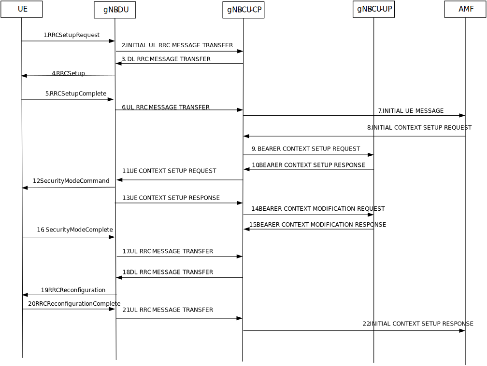
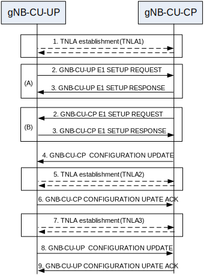

3GPP TS 38.401 V17.9.0 (2024-06)
Technical Specification
3rd Generation Partnership Project;
Technical Specification Group Radio Access Network;
NG-RAN;
Architecture description
(Release 17)
The present document has been developed within the 3rd
Generation Partnership Project (3GPP TM) and may be further
elaborated for the purposes of 3GPP.
The present document has not been subject to any approval process by the
3GPP Organizational Partners and shall not be implemented.
This Specification is provided for future development work within 3GPP
only. The Organizational Partners accept no liability for any use of
this Specification.
Specifications and reports for implementation of the 3GPP TM
system should be obtained via the 3GPP Organizational Partners'
Publications Offices.
Keywords
NG-RAN, Radio
3GPP
Postal address
3GPP support office address
650 Route des Lucioles - Sophia Antipolis
Valbonne - FRANCE
Tel.: +33 4 92 94 42 00 Fax: +33 4 93 65 47 16
Internet
Copyright Notification
No part may be reproduced except as authorized by written
permission.
The copyright and the foregoing restriction extend to reproduction in
all media.
© 2024, 3GPP Organizational Partners (ARIB, ATIS, CCSA, ETSI, TSDSI, TTA, TTC).
All rights reserved.
UMTS™ is a Trade Mark of ETSI registered for the benefit of its members
3GPP™ is a Trade Mark of ETSI registered for the benefit of its
Members and of the 3GPP Organizational Partners
LTE™ is a Trade Mark of ETSI registered for the benefit of its Members
and of the 3GPP Organizational Partners
GSM® and the GSM logo are registered and owned by the GSM Association
Foreword 7
1 Scope 8
2 References 8
3 Definitions and abbreviations 9
3.1 Definitions 9
3.2 Abbreviations 11
4 General principles 12
5 General architecture 12
5.1 General 12
5.2 User plane 13
5.3 Control plane 13
6 NG-RAN architecture 14
6.1 Overview 14
6.1.1 Overall Architecture of NG-RAN 14
6.1.2 Overall architecture for separation of gNB-CU-CP and gNB-CU-UP 15
6.1.3 Overall Architecture of IAB 16
6.1.4 Protocol stacks of IAB 17
6.1.5 Overall Architecture of NR MBS 19
6.1.6 Protocol stacks of L2 UE-to-Network Relay 19
6.2 NG-RAN identifiers 20
6.2.1 Principle of handling Application Protocol Identities 20
6.2.2 gNB-DU ID 22
6.2.3 ng-eNB-DU ID 22
6.2.4 gNB-CU-UP ID 23
6.2.5 RAN UE ID 23
6.3 Transport addresses 23
6.4 UE associations in NG-RAN Node 23
6.5 MBS Session associations in NG-RAN Node 24
7 NG-RAN functions description 25
7.0 General 25
7.1 NG-RAN sharing 26
7.2 Remote Interference Management 26
7.3 Cross-Link Interference Management 26
7.4 Support for Non-Public Networks 26
7.5 RACH Optimisation Function 26
7.6 Positioning 26
7.7 Support for NR MBS 26
7.7.1 Support of dynamic PTP and PTM switching 26
7.8 PCI Optimisation Function 27
7.9 Support for CCO 27
7.9.1 General 27
7.9.2 OAM requirements 27
7.9.3 Dynamic coverage configuration changes 27
7.10 Support of RAN visible QoE measurement 27
8 Overall procedures in gNB-CU/gNB-DU Architecture 27
8.1 UE Initial Access 27
8.2 Intra-gNB-CU Mobility 29
8.2.1 Intra-NR Mobility 29
8.2.1.1 Inter-gNB-DU Mobility 29
8.2.1.2 Intra-gNB-DU handover 30
8.2.1.3 Inter-gNB-DU Conditional Handover or Conditional PSCell Change 31
8.2.2 EN-DC Mobility 32
8.2.2.1 Inter-gNB-DU Mobility using MCG SRB 32
8.2.2.2 Inter-gNB-DU Mobility using SCG SRB (SRB3) 34
8.2.2.3 Inter-gNB-DU Conditional PSCell Change using MCG SRB without MN negotiation 34
8.2.3 Intra-CU topology adaptation procedure 36
8.2.3.1 Intra-CU topology adaptation procedure in SA 36
8.2.3.2 Intra-CU topology adaptation procedure in NSA using MCG SRB 39
8.2.3.3 Intra-CU topology adaptation procedure in NSA using SCG SRB (SRB3) 41
8.2.4 Intra-CU topological redundancy procedure 41
8.2.5 Intra-CU Backhaul RLF recovery for IAB-nodes in SA mode 44
8.3 Mechanism of centralized retransmission of lost PDUs 45
8.3.1 Centralized Retransmission in Intra gNB-CU Cases 45
8.4 Multi-Connectivity operation 46
8.4.1 Secondary Node Addition 46
8.4.1.1 EN-DC 46
8.4.2 Secondary Node Release (MN/SN initiated) 47
8.4.2.1 EN-DC 47
8.4.3 SCG suspend/resume in RRC_INACTIVE 48
8.4.4 SCG Deactivation and Activation 49
8.4.4.1 SN Addition with SCG Activation or Deactivation 50
8.4.4.2 MN initiated SN Modification with SCG Activation or Deactivation 51
8.4.4.3 SN initiated SN Modification with SCG Activation or Deactivation 52
8.5 F1 Startup and cells activation 52
8.6 RRC state transition 54
8.6.1 RRC connected to RRC inactive 54
8.6.2 RRC inactive to other states 54
8.7 RRC connection reestablishment 56
8.8 Multiple TNLAs for F1-C 58
8.9 Overall procedures involving E1 and F1 59
8.9.1 UE Initial Access 59
8.9.2 Bearer context setup over F1-U 60
8.9.3 Bearer context release over F1-U 61
8.9.3.1 gNB-CU-CP initiated bearer context release 61
8.9.3.2 gNB-CU-UP initiated bearer context release 62
8.9.4 Inter-gNB handover involving gNB-CU-UP change 63
8.9.5 Change of gNB-CU-UP 65
8.9.6 RRC State transition 66
8.9.6.1 RRC Connected to RRC Inactive 66
8.9.6.2 RRC Inactive to other states 67
8.9.7 Trace activation/deactivation over F1 and E1 69
8.9.8 BH RLC channel establishment procedure 69
8.9.9 Traffic Mapping 71
8.9.9.1 Traffic Mapping from IP-layer to Layer-2 71
8.9.9.2 BH RLC Channel Mapping on BAP Layer 71
8.9.10 IAB-node release 71
8.9.10.1 IAB-node orderly release 72
8.9.10.2 IAB-node disorderly release 72
8.9.11 IAB-node OAM 72
8.9.12 Handling of IAB-MTs in INACTIVE State 72
8.9.13 IP Address Allocation for IAB-nodes 72
8.9.14 (void) 73
8.9.15 (void) 73
8.9.16 (void) 73
8.9.17 IAB-node authorization 73
8.9.17.1 IAB-node in NSA 73
8.9.17.2 IAB-node with single IAB-donor in SA 74
8.9.17.2.1 IAB-node is single-connected 74
8.9.17.2.2 IAB-node is NR dual-connected 74
8.9.17.3 IAB-node is served by two IAB-donors in SA 74
8.10 Multiple TNLAs for E1 74
8.11 Support of Network Sharing with multiple cell-ID broadcast 76
8.11.1 General 76
8.11.2 Initial Registration – separate PLMN signalling 76
8.11.3 RRC Connection Reestablishment – separate PLMN signalling 77
8.11.4 Support of shared signalling transport 78
8.12 IAB-node Integration Procedure 78
8.12.1 Standalone IAB integration 78
8.12.2 NSA IAB Integration procedure 79
8.13 Overall procedures for MDT 81
8.13.0 General 81
8.13.1 Signalling based MDT activation 81
8.13.2 Management based MDT activation 81
8.13.2.1 General 81
8.13.2.2 Management based MDT Activation in gNB-CU-CP 82
8.13.2.3 Management based MDT Activation in gNB-DU 82
8.13.2.4 Management based MDT Activation in gNB-CU-UP 83
8.13.2.5 User consent propagation in EN-DC 84
8.13.2.6 User consent propagation in MR-DC with 5GC 85
8.13.2.7 Management based trace activation in MR-DC with 5GC 86
8.13.3 Alignment of MDT and QoE Measurements 87
8.13.4 MDT reporting 87
8.14 Self-optimisation 87
8.14.1 Overall procedures for MRO 87
8.14.1.1 Signalling of RLF information from gNB-CU to gNB-DU 88
8.14.1.2 Signalling of RACH information from gNB-CU to gNB-DU 88
8.15 Overall procedures for NR MBS 89
8.15.1 General 89
8.15.1.1 Broadcast MBS Session Setup 89
8.15.1.2 Multicast MBS Session Context Establishment 90
8.15.1.3 Multicast MRB type re-configuration with F1-U ptp-retransmission tunnel establishment 92
8.15.2 Mobility procedure for Multicast 93
8.15.2.1 Inter-gNB-CU Mobility between MBS Supporting nodes 93
8.16 Overall procedures for CPAC 94
8.16.1 MN initiated Conditional PSCell Addition 94
8.16.2 MN initiated conditional SN Change 95
8.16.3 SN initiated conditional inter-SN Change 95
8.17 IAB Inter-CU Topology Management 95
8.17.1 IAB Inter-donor-DU Re-routing 95
8.17.2 IAB Inter-CU Topology Redundancy 96
8.17.2.1 IAB Inter-CU topological redundancy procedure 96
8.17.3 IAB Inter-CU Topology Adaptation 98
8.17.3.1 IAB inter-CU topology adaptation procedure 98
8.17.3.2 IAB inter-CU topology adaptation procedure with descendant IAB-node 101
8.17.4 IAB Inter-CU Backhaul RLF recovery for single connected IAB-node 103
8.18 Overall procedure for Small Data Transmission during RRC Inactive 106
8.18.1 RACH based SDT 106
8.18.2 CG based SDT 107
8.18.3 RA-SDT or non-SDT with CG-SDT configuration 108
8.19 Overall procedures for L2 UE-to-Network Relay 109
8.19.1 Remote UE initial access 109
8.19.2 Remote UE RRC Reestablishment 112
8.19.3 Remote UE RRC Inactive to other states 114
8.19.4 Service Continuity for L2 U2N relay 116
8.19.4.1 Inter-gNB-DU switch from direct to indirect path 116
8.19.4.2 Intra-gNB-DU switch from direct to indirect path 118
8.20 Void 119
9 Synchronization 119
9.1 gNB Synchronization 119
10 NG-RAN interfaces 120
10.1 NG interface 120
10.2 Xn interface 120
10.3 F1 interface 120
10.4 E1 interface 120
10.5 Antenna interface - general principles 120
11 Overall procedures in NG-RAN Architecure 121
11.1 Multiple TNLAs for Xn-C 121
Annex A (informative): Deployment scenarios of gNB/en-gNB 122
Annex B: NG-RAN Architecture for Radio Access Network Sharing with multiple cell ID broadcast (informative) 123
Annex C (informative): Change History 124
This Technical Specification has been produced by the 3rd Generation Partnership Project (3GPP).
The contents of the present document are subject to continuing work within the TSG and may change following formal TSG approval. Should the TSG modify the contents of the present document, it will be re-released by the TSG with an identifying change of release date and an increase in version number as follows:
Version x.y.z
where:
x the first digit:
1 presented to TSG for information;
2 presented to TSG for approval;
3 or greater indicates TSG approved document under change control.
y the second digit is incremented for all changes of substance, i.e. technical enhancements, corrections, updates, etc.
z the third digit is incremented when editorial only changes have been incorporated in the document.
The present document describes the overall architecture of the NG-RAN, including interfaces NG, Xn and F1 interfaces and their interaction with the radio interface.
The following documents contain provisions which, through reference in this text, constitute provisions of the present document.
- References are either specific (identified by date of publication, edition number, version number, etc.) or non‑specific.
- For a specific reference, subsequent revisions do not apply.
- For a non-specific reference, the latest version applies. In the case of a reference to a 3GPP document (including a GSM document), a non-specific reference implicitly refers to the latest version of that document in the same Release as the present document.
[1] 3GPP TR 21.905: "Vocabulary for 3GPP Specifications".
[2] 3GPP TS 38.300: "NR; Overall description; Stage-2".
[3] 3GPP TS 23.501: "System Architecture for the 5G System".
[4] 3GPP TS 38.473: "NG-RAN; F1 application protocol (F1AP)".
[5] 3GPP TS 38.414: "NG-RAN; NG data transport".
[6] 3GPP TS 38.424: "NG-RAN; Xn data transport".
[7] 3GPP TS 38.474: "NG-RAN; F1 data transport".
[8] ITU-T Recommendation G.823 (2000-03): "The control of jitter and wander within digital networks which are based on the 2048 kbit/s hierarchy".
[9] ITU-T Recommendation G.824 (2000-03): "The control of jitter and wander within digital networks which are based on the 1544 kbit/s hierarchy".
[10] ITU-T Recommendation G.825 (2001-08): "The control of jitter and wander within digital networks which are based on the synchronous digital hierarchy (SDH)".
[11] ITU-T Recommendation G.8261/Y.1361 (2008-04): "Timing and Synchronization aspects in Packet networks".
[12] 3GPP TS 37.340: "NR; Multi-connectivity; Overall description; Stage-2".
[13] 3GPP TS 33.501: "Security Architecture and Procedures for 5G System".
[14] 3GPP TS 38.410: "NG-RAN; NG general aspect and principles".
[15] 3GPP TS 38.420: "NG-RAN; Xn general aspects and principles"
[16] 3GPP TS 38.470: "NG-RAN; F1 general aspects and principles".
[17] 3GPP TS 38.460: "NG-RAN; E1 general aspects and principles".
[18] 3GPP TS 33.210: "3G security; Network Domain Security (NDS); IP Network Layer Security".
[19] 3GPP TS 36.300: "Evolved Universal Terrestrial Radio Access (E-UTRA), Evolved Universal Terrestrial Radio Access Network (E-UTRAN); Overall description; Stage 2".
[20] 3GPP TS 32.422: "Trace control and configuration management".
[21] 3GPP TS 37.470: "Evolved Universal Terrestrial Radio Access Network (E-UTRAN) and NG-RAN; W1 general aspects and principles; Stage-2".
[22] 3GPP TS 38.340: "NR; Backhaul Adaptation Protocol (BAP) specification".
[23] 3GPP TS 38.331: "NR; Radio Resource Control (RRC) protocol specification".
[24] 3GPP TS 38.425: "NG-RAN; NR user plane Protocol".
[25] 3GPP TS 38.305: "NG Radio Access Network (NG-RAN); Stage 2 functional specification of User Equipment (UE) positioning in NG-RAN".
[26] 3GPP TS 38.472: "NG-RAN; F1 signalling transport".
[27] 3GPP TS 23.247: " Architectural enhancements for 5G multicast-broadcast services; Stage 2".
[28] 3GPP TS 36.401: "Evolved Universal Terrestrial Radio Access Network (E-UTRAN); Architecture Description".
[29] IETF RFC 4555 (2006-06): "RFC IKEv2 Mobility and Multihoming Protocol (MOBIKE)".
[30] 3GPP TS 38.321 “NR; Medium Access Control (MAC) protocol specification”.
[31] 3GPP TS 37.320: "Radio measurement collection for Minimization of Drive Tests (MDT); Overall description; Stage 2".
For the purposes of the present document, the terms and definitions
given in TR 21.905 [1] and the following apply.
A term defined in the present document takes precedence over the
definition of the same term, if any, in TR 21.905 [1].
Associated QoS Flow: as defined in TS 23.247 [27].
Associated QoS flow information: Information encompassing: QoS flow QoS parameters for associated QoS flows and mapping information between mapped (unicast) QoS flows and associated QoS flows. The respective information is included in a way that non-supporting RAN nodes would not establish respective RAN resources irrespective the multicast session state.
Boundary IAB-node: an IAB-node with one RRC interface terminating at a different IAB-donor-CU than the F1 interface. This definition applies to partial migration, inter-donor redundancy and inter-donor RLF recovery.
Conditional Handover: as defined in TS 38.300 [2].
Conditional PSCell Addition: as defined in TS 37.340 [12].
Conditional PSCell Change: as defined in TS 37.340 [12].
DAPS Handover: as defined in TS 38.300 [2].
eNB-CP: as defined in TS 36.401 [28].
eNB-UP: as defined in TS 36.401 [28].
en-gNB: as defined in TS 37.340 [12].
Early Data Forwarding: as defined in TS 38.300 [2].
F1-terminating IAB-donor of boundary IAB-node: Refers to the IAB-donor that terminates F1 for the boundary IAB-node.
gNB: as defined in TS 38.300 [2].
gNB Central Unit (gNB-CU): a logical node hosting RRC, SDAP and PDCP protocols of the gNB or RRC and PDCP protocols of the en-gNB that controls the operation of one or more gNB-DUs. The gNB-CU terminates the F1 interface connected with the gNB-DU.
gNB Distributed Unit (gNB-DU): a logical node hosting RLC, MAC and PHY layers of the gNB or en-gNB, and its operation is partly controlled by gNB-CU. One gNB-DU supports one or multiple cells. One cell is supported by only one gNB-DU. The gNB-DU terminates the F1 interface connected with the gNB-CU. For DC operation, the MgNB-DU designates the gNB-DU of an en-gNB or a gNB acting as master node, and the SgNB-DU designates the gNB-DU of an en-gNB or a gNB acting as secondary node.
gNB-CU-Control Plane (gNB-CU-CP): a logical node hosting the RRC and the control plane part of the PDCP protocol of the gNB-CU for an en-gNB or a gNB. The gNB-CU-CP terminates the E1 interface connected with the gNB-CU-UP and the F1-C interface connected with the gNB-DU. For DC operation, the MgNB-CU-CP designates the gNB-CU-CP of the gNB-CU for an en-gNB or a gNB acting as master node, and the SgNB-CU-CP designates the gNB-CU-CP of the gNB-CU for an en-gNB or a gNB acting as secondary node.
gNB-CU-User Plane (gNB-CU-UP): a logical node hosting the user plane part of the PDCP protocol of the gNB-CU for an en-gNB, and the user plane part of the PDCP protocol and the SDAP protocol of the gNB-CU for a gNB. The gNB-CU-UP terminates the E1 interface connected with the gNB-CU-CP and the F1-U interface connected with the gNB-DU. For DC operation, the MgNB-CU-UP designates the gNB-CU-UP of the gNB-CU for an en-gNB or a gNB acting as master node, and the the SgNB-CU-UP designates the gNB-CU-UP of the gNB-CU for an en-gNB or a gNB acting as secondary node.
IAB-node: as defined in TS 38.300 [2].
IAB-donor: as defined in TS 38.300 [2].
IAB-donor-CU: the gNB-CU of an IAB-donor, terminating the F1 interface towards IAB-nodes and IAB-donor-DU.
IAB-donor-DU: the gNB-DU of an IAB-donor, hosting the IAB BAP sublayer (as defined in TS 38.340 [22]), providing wireless backhaul to IAB-nodes.
IAB-DU: as defined in TS 38.300 [2].
IAB-MT: as defined in TS 38.300 [2].
IAB Topology: as defined in TS 38.300 [2].
Mapped QoS flows: Unicast QoS flows requested to be established, i.e. included in the legacy QoS flow lists in a way, that non-support RAN nodes would attempt to establish unicast QoS flows and supporting RAN nodes can identify them as mapped QoS flows based on the associated QoS information.
Master node: as defined in TS 37.340 [12].
Master gNB: see TS 37.340 [12].
MBS session resource: This term is used for specification of NG, Xn, F1 and E1 interfaces. It denotes NG-RAN interface and radio resources provided to support an MBS Session.
ng-eNB: as defined in TS 38.300 [2].
ng-eNB Central Unit (ng-eNB-CU): as defined in TS 37.470 [21].
ng-eNB Distributed Unit (ng-eNB-DU): as defined in TS 37.470 [21].
ng-eNB-CU-Control Plane (ng-eNB-CU-CP): a logical node hosting the RRC and the control plane part of the PDCP protocol of the ng-eNB-CU for an ng-eNB. The ng-eNB-CU-CP terminates the E1 interface connected with the ng-eNB-CU-UP and the W1-C interface connected with the ng-eNB-DU.
ng-eNB-CU-User Plane (ng-eNB-CU-UP): a logical node hosting the user plane part of the PDCP protocol and the SDAP protocol of the ng-eNB-CU for an ng-eNB. The ng-eNB-CU-UP terminates the E1 interface connected with the ng-eNB-CU-CP and the W1-U interface connected with the ng-eNB-DU.
NG-RAN node: as defined in TS 38.300 [2].
Non-F1-terminating IAB-donor of boundary IAB-node: Refers to the IAB-donor that has an RRC connection with the boundary node but does not terminate F1 with this boundary node.
PDU Session Resource: This term is used for specification of NG, Xn, and E1 interfaces. It denotes NG-RAN interface and radio resources provided to support a PDU Session.
Public Network Integrated NPN: as defined in TS 23.501 [3].
Secondary gNB: see TS 37.340 [12].
Stand-alone Non-Public Network: as defined in TS 23.501 [3].
U2N Relay UE: as defined in TS 38.300 [2].
U2N Remote UE: as defined in TS 38.300 [2].
For the purposes of the present document, the terms and definitions
given in TR 21.905 [1] and the following apply.
A term defined in the present document takes precedence over the
definition of the same term, if any, in TR 21.905 [1].
5GC 5G Core Network
AMF Access and Mobility Management Function
AP Application Protocol
AS Access Stratum
BH Backhaul
CAG Closed Access Group
CHO Conditional Handover
CLI Cross-Link Interference
CM Connection Management
CMAS Commercial Mobile Alert Service
CPA Conditional PSCell Addition
CPC Conditional PSCell Change
DAPS Dual Active Protocol Stack
EM Element Manager
EN-DC E-UTRA-NR Dual Connectivity
ETWS Earthquake and Tsunami Warning System
F1-U F1 User plane interface
F1-C F1 Control plane interface
F1AP F1 Application Protocol
FDD Frequency Division Duplex
FTEID Fully Qualified TEID
GTP-U GPRS Tunnelling Protocol
IAB Integrated Access and Backhaul
IP Internet Protocol
L2 Layer-2
MBS Multicast Broadcast Service
MCG Master Cell Group
MDT Minimization of Drive Tests
MN Master Node
MgNB Master gNB
MRB MBS Radio Bearer
MRDC Multi-Radio Dual Connectivity
NAS Non-Access Stratum
NID Network identifier
NPN Non-Public Network
NSA Non Standalone
OAM Operation, Administration and Maintenance
PNI-NPN Public Network Integrated Non-Public Network
PTP Point to Point
PTM Point to Multipoint
PWS Public Warning System
QoE Quality of Experience
QoS Quality of Service
RET Remote Electrical Tilting
RIM Remote Interference Management
RIM-RS Remote Interference Management Reference Signal
RNL Radio Network Layer
RRC Radio Resource Control
SA Standalone
SAP Service Access Point
SCG Secondary Cell Group
SCTP Stream Control Transmission Protocol
SDT Small Data Transmission
SFN System Frame Number
SgNB Secondary gNB
SM Session Management
SMF Session Management Function
SN Secondary Node
SNPN Stand-alone Non-Public Network
SRAP Sidelink Relay Adaptation Protocol
TCE Trace Collection Entity
TDD Time Division Duplex
TDM Time Division Multiplexing
TEID Tunnel Endpoint Identifier
TMA Tower Mounted Amplifier
TNL Transport Network Layer
U2N UE-to-Network
The general principles guiding the definition of NG-RAN architecture as well as the NG-RAN interfaces are the following:
- Logical separation of signalling and data transport networks.
- NG-RAN and 5GC functions are fully separated from transport functions. Addressing scheme used in NG-RAN and 5GC shall not be tied to the addressing schemes of transport functions. The fact that some NG-RAN or 5GC functions reside in the same equipment as some transport functions does not make the transport functions part of the NG-RAN or the 5GC.
- Mobility for an RRC connection is fully controlled by the NG-RAN.
- The NG-RAN interfaces are defined along the following principles:
- The functional division across the interfaces have as few options as possible.
- Interfaces are based on a logical model of the entity controlled through this interface.
- One physical network element can implement multiple logical nodes.
The protocols over Uu and NG interfaces are divided into two structures:
- User plane protocols
These are the protocols implementing the actual PDU Session service, i.e. carrying user data through the access stratum.
- Control plane protocols
These are the protocols for controlling the PDU Sessions and the connection between the UE and the network from different aspects (including requesting the service, controlling different transmission resources, handover etc.). Also a mechanism for transparent transfer of NAS messages is included.
The PDU Session Resource service is offered from SAP to SAP by the Access Stratum. Figure 5.2-1 shows the protocols on the Uu and the NG interfaces that linked together provide this PDU Session Resource service.
Note 1: The radio interface protocols are defined in TS 38.2xx and TS 38.3xx.
Note 2: The NG interface protocols are defined in TS 38.41x.
Figure 5.2-1: NG and Uu user plane
Figure 5.3-1 shows the control plane (signalling) protocol stacks on NG and Uu interfaces.
Note 1: The radio interface protocols are defined in TS 38.2xx and TS 38.3xx.
Note 2: The protocol is defined in TS 38.41x. (Description of NG interface).
Note 3: CM, SM: This exemplifies a set of NAS control protocols between UE and 5GC. The evolution of the protocol architecture for these protocols is outside the scope of the present document.
Figure 5.3-1: NG and Uu control plane
NOTE: Both the Radio protocols and the NG protocols contain a mechanism to transparently transfer NAS messages.
Figure 6.1-1: Overall architecture
The NG-RAN consists of a set of gNBs connected to the 5GC through the NG interface.
NOTE 1: As specified in TS 38.300 [2], NG-RAN could also consists of a set of ng-eNBs, an ng-eNB may consist of an ng-eNB-CU and one or more ng-eNB-DU(s). An ng-eNB-CU and an ng-eNB-DU is connected via W1 interface. The general principle described in this clause also applies to ng-eNB and W1 interface, if not explicitly specified otherwise.
An gNB can support FDD mode, TDD mode or dual mode operation.
gNBs can be interconnected through the Xn interface.
A gNB may consist of a gNB-CU and one or more gNB-DU(s). A gNB-CU and a gNB-DU is connected via F1 interface.
One gNB-DU is connected to only one gNB-CU.
NOTE 2: In case of network sharing with multiple cell ID broadcast, each Cell Identity associated with a subset of PLMNs corresponds to a gNB-DU and the gNB-CU it is connected to, i.e. the corresponding gNB-DUs share the same physical layer cell resources.
NOTE 3: For resiliency, a gNB-DU may be connected to multiple gNB-CUs by appropriate implementation.
NG, Xn and F1 are logical interfaces.
For NG-RAN, the NG and Xn-C interfaces for a gNB consisting of a gNB-CU and gNB-DUs, terminate in the gNB-CU. For EN-DC, the S1-U and X2-C interfaces for a gNB consisting of a gNB-CU and gNB-DUs, terminate in the gNB-CU. The gNB-CU and connected gNB-DUs are only visible to other gNBs and the 5GC as a gNB. A possible deployment scenario is described in Annex A.
The node hosting user plane part of NR PDCP (e.g. gNB-CU, gNB-CU-UP, and for EN-DC, MeNB or SgNB depending on the bearer split) shall perform user inactivity monitoring and further informs its inactivity or (re)activation to the node having C-plane connection towards the core network (e.g. over E1, X2). The node hosting NR RLC (e.g. gNB-DU) may perform user inactivity monitoring and further inform its inactivity or (re)activation to the node hosting control plane, e.g. gNB-CU or gNB-CU-CP.
UL PDCP configuration (i.e. how the UE uses the UL at the assisting node) is indicated via X2-C (for EN-DC), Xn-C (for NG-RAN) and F1-C. Radio Link Outage/Resume for DL and/or UL is indicated via X2-U (for EN-DC), Xn-U (for NG-RAN) and F1-U.
The NG-RAN is layered into a Radio Network Layer (RNL) and a Transport Network Layer (TNL).
The NG-RAN architecture, i.e. the NG-RAN logical nodes and interfaces between them, is defined as part of the RNL.
For each NG-RAN interface (NG, Xn, F1) the related TNL protocol and the functionality are specified. The TNL provides services for user plane transport, signalling transport.
In NG-Flex configuration, each NG-RAN node is connected to all AMFs of AMF Sets within an AMF Region supporting at least one slice also supported by the NG-RAN node. The AMF Set and the AMF Region are defined in TS 23.501 [3].
If security protection for control plane and user plane data on TNL of NG-RAN interfaces has to be supported, NDS/IP TS 33.501 [13] shall be applied.
The overall architecture for separation of gNB-CU-CP and gNB-CU-UP is depicted in Figure 6.1.2-1.
NOTE 0: NG-RAN could also consist of a set of ng-eNBs, an ng-eNB may consist of an ng-eNB-CU-CP, one or more ng-eNB-CU-UP(s), and one or more ng-eNB-DU(s). An ng-eNB-CU-CP and an ng-eNB-CU-UP is connected via the E1 interface. An ng-eNB-DU is connected to an ng-eNB-CU-CP via the W1-C interface, and to an ng-eNB-CU-UP via the W1-U interface. The general principle described in this clause also applies to ng-eNB and its corresponding E1 and W1 interfaces, if not explicitly specified otherwise.
Figure 6.1.2-1. Overall architecture for separation of gNB-CU-CP and gNB-CU-UP
- A gNB may consist of a gNB-CU-CP, multiple gNB-CU-UPs and multiple gNB-DUs;
- The gNB-CU-CP is connected to the gNB-DU through the F1-C interface;
- The gNB-CU-UP is connected to the gNB-DU through the F1-U interface;
- The gNB-CU-UP is connected to the gNB-CU-CP through the E1 interface;
- One gNB-DU is connected to only one gNB-CU-CP;
- One gNB-CU-UP is connected to only one gNB-CU-CP;
NOTE 1: For resiliency, a gNB-DU and/or a gNB-CU-UP may be connected to multiple gNB-CU-CPs by appropriate implementation.
- One gNB-DU can be connected to multiple gNB-CU-UPs under the control of the same gNB-CU-CP;
- One gNB-CU-UP can be connected to multiple DUs under the control of the same gNB-CU-CP;
NOTE 2: The connectivity between a gNB-CU-UP and a gNB-DU is established by the gNB-CU-CP using Bearer Context Management functions.
NOTE 3: The gNB-CU-CP selects the appropriate gNB-CU-UP(s) for the requested services for the UE. In case of multiple CU-UPs they belong to same security domain as defined in TS 33.210 [18].
NOTE 4: Data forwarding between gNB-CU-UPs during intra-gNB-CU-CP handover within a gNB may be supported by Xn-U.
Figure 6.1.3-1: Overall architecture of IAB
The NG-RAN supports IAB by the IAB-node wirelessly connecting to the gNB capable of serving the IAB-nodes, named IAB-donor.
The IAB-donor consists of an IAB-donor-CU and one or more IAB-donor-DU(s). In case of separation of gNB-CU-CP and gNB-CU-UP, the IAB-donor may consist of an IAB-donor-CU-CP, multiple IAB-donor-CU-UPs and multiple IAB-donor-DUs.
The IAB-node connects to an upstream IAB-node or an IAB-donor-DU via a subset of the UE functionalities of the NR Uu interface (named IAB-MT function of IAB-node). The IAB-node provides wireless backhaul to the downstream IAB-nodes and UEs via the network functionalities of the NR Uu interface (named IAB-DU function of IAB-node).
The F1-C traffic between an IAB-node and IAB-donor-CU is backhauled via the IAB-donor-DU and the optional intermediate hop IAB-node(s).
The F1-U traffic between an IAB-node and IAB-donor-CU is backhauled via the IAB-donor-DU and the optional intermediate hop IAB-node(s).
All functions specified for a gNB-DU are equally applicable for an IAB-DU and IAB-donor-DU, unless otherwise stated, and all functions specified for a gNB-CU are equally applicable for an IAB-donor-CU, unless otherwise stated. All functions specified for the UE context are equally applicable for managing the context of IAB-MT, unless otherwise stated.
Figure 6.1.4-1 shows the protocol stack for F1-U between IAB-DU and the IAB-donor-CU-UP, and Figure 6.1.4-2 shows the protocol stack for F1-C between IAB-DU and the IAB-donor-CU-CP. In these example figures, F1-U and F1-C traffic are carried over two backhaul hops.
NOTE: F1 needs to be security-protected as described in TS 33.501. The security layer is not shown in the Figure 6.1.4-1, Figure 6.1.4-2 and Figure 6.1.4-3.
Figure 6.1.4-1: Protocol stack for F1-U of IAB
Figure. 6.1.4-2: Protocol stack for F1-C of IAB
Figure 6.1.4-3 shows the protocol stack for F1-C between IAB-DU and the IAB-donor-CU-CP, when the F1-C traffic is exchanged via the MeNB.
IAB-node
F1AP
SCTP
IP
F1AP
SCTP
IP
X2AP
SCTP
IP
L2
L1
X2AP
SCTP
IP
L2
L1
LTE RRC
LTE PDCP
LTE RLC
LTE MAC
LTE PHY
LTE RRC
LTE PDCP
LTE RLC
LTE MAC
LTE PHY
IAB-DU
IAB-MT
MeNB
IAB-donor-CU-CP
LTE-Uu
X2-C
Fig. 6.1.4-3: Protocol stack for IAB F1-C traffic exchanged via the MeNB
Figure 6.1.4-4 shows the protocol stack for F1-C between IAB-DU and the IAB-donor-CU-CP, when the F1-C traffic is exchanged via the MgNB.
IAB-node
F1AP
SCTP
IP
F1AP
SCTP
IP
XnAP
SCTP
IP
L2
L1
XnAP
SCTP
IP
L2
L1
NR RLC
NR MAC
NR PHY
NR RRC
NR PDCP
NR RLC
NR MAC
NR PHY
IAB-DU
IAB-MT
MgNB
IAB-donor-CU-CP
NR-Uu
Xn-C
NR PDCP
NR RRC
Fig. 6.1.4-4: Protocol stack for IAB F1-C traffic exchanged via the MgNB
Figure 6.1.4-5 shows the protocol stack for F1-C between IAB-DU and the IAB-donor-CU-CP, when the F1-C traffic is exchanged via the SgNB.
IAB-node
F1AP
SCTP
IP
F1AP
SCTP
IP
XnAP
SCTP
IP
L2
L1
XnAP
SCTP
IP
L2
L1
NR RRC RRC
NR PDCP
NR RLC
NR MAC
NR PHY
NR RRC
NR PDCP
NR RLC
NR MAC
NR PHY
IAB-DU
IAB-MT
SgNB
IAB-donor-CU-CP
NR-Uu
Xn-C
Fig. 6.1.4-5: Protocol stack for IAB F1-C traffic exchanged via the SgNB
The overall architecture specified in clause 6.1.1 and 6.1.2 applies for NR MBS.
Upon establishment of a MBS Session resource by the 5GC, the gNB-CU triggers the establishment of MRBs, involving the gNB-DU. If E1 is deployed, the gNB-CU-CP triggers establishment of respective MBS UP resources in the gNB-CU-UP.
The gNB-DU assigns the G-RNTI.
A shared F1-U tunnel is used between the gNB-CU and the gNB-DU forMRB with PTM transmission. UE dedicated F1-U tunnels are used between the gNB-CU and the gNB-DU for data transmission of PTP retransmission and PTP forwarding of an MRB. For an MRB configured with PTP only transmission either a shared F1-U or a UE dedicated F1-U tunnel is used, dependent on the lower layer configuration. The gNB-DU assigns the DL GTP-U TEID and provides it to the gNB-CU. If E1 is deployed the gNB-CU-CP forwards it to the gNB-CU-UP.
For both broadcast and multicast, DL flow control maybe used for the shared F1-U tunnel established for the MRB, as specified in TS 38.425 [24].
The protocol stacks for the user plane and control plane of L2 U2N Relay architecture are described in Figure 6.1.6-1 and Figure 6.1.6-2, respectively. The Uu SRAP is terminated between U2N relay UE and gNB-DU.
Figure 6.1.6-1: User plane protocol stack for L2 UE-to-Network Relay
Figure 6.1.6-2: Control plane protocol stack for L2 UE-to-Network Relay
An Application Protocol Identity (AP ID) is allocated when a new UE-associated logical connection is created in either an NG-RAN node or an AMF. An AP ID shall uniquely identify a logical connection associated to a UE over the NG interface or Xn interface within a node (NG-RAN node or AMF) or over the F1 interface or over the E1 interface or over the W1 interface. Upon receipt of a message that has a new AP ID from the sending node, the receiving node shall store the AP ID of the sending node for the duration of the logical connection. The receiving node shall assign the AP ID to be used to identify the logical connection associated to the UE and include it as well as the previously received new AP ID from the sending node, in the first returned message to the sending node. In all subsequent messages to and from sending node, both AP IDs of sending node and receiving node shall be included. For MBS-associated logical connections of the E1 interface and the F1 interface the same principles for AP IDs apply as for UE-associated logical connections.
The definitions of AP IDs as used on NG interface or Xn interface or F1 interface or E1 interface are shown below:
RAN UE NGAP ID:
A RAN UE NGAP ID shall be allocated so as to uniquely identify the UE over the NG interface within an gNB. When an AMF receives an RAN UE NGAP ID it shall store it for the duration of the UE-associated logical NG-connection for this UE. Once known to an AMF this is included in all UE associated NGAP signalling.
The RAN UE NGAP ID shall be unique within the logical NG-RAN node.
AMF UE NGAP ID:
An AMF UE NGAP ID shall be allocated so as to uniquely identify the UE over the NG interface within the AMF. When a NG-RAN node receives an AMF UE NGAP ID it shall store it for the duration of the UE-associated logical NG-connection for this UE. Once known to a NG-RAN node this ID is included in all UE associated NGAP signalling.
The AMF UE NGAP ID shall be unique within an AMF Set as specified in TS 23.501 [3].
Old NG-RAN node UE XnAP ID:
An Old NG-RAN node UE XnAP ID shall be allocated so as to uniquely identify the UE over the Xn interface within a source NG-RAN node. When a target NG-RAN node receives an Old NG-RAN node UE XnAP ID it shall store it for the duration of the UE-associated logical Xn-connection for this UE. Once known to a target NG-RAN node this ID is included in all UE associated XnAP signalling. The Old NG-RAN node UE XnAP ID shall be unique within the logical NG-RAN node.
New NG-RAN node UE XnAP ID:
A New NG-RAN node UE XnAP ID shall be allocated so as to uniquely identify the UE over the Xn interface within a target NG-RAN node. When a source NG-RAN node receives a New NG-RAN node UE XnAP ID it shall store it for the duration of the UE-associated logical Xn-connection for this UE. Once known to a source NG-RAN node this ID is included in all UE associated XnAP signalling. The New NG-RAN node UE XnAP ID shall be unique within the logical NG-RAN node.
M-NG-RAN node UE XnAP ID:
An M-NG-RAN node UE XnAP ID shall be allocated so as to uniquely identify the UE over the Xn interface within an M-NG-RAN node for dual connectivity. When an S-NG-RAN node receives an M-NG-RAN node UE XnAP ID it shall store it for the duration of the UE-associated logical Xn-connection for this UE. Once known to an S-NG-RAN node this ID is included in all UE associated XnAP signalling. The M-NG-RAN node UE XnAP ID shall be unique within the logical NG-RAN node.
S-NG-RAN node UE XnAP ID:
A S-NG-RAN node UE XnAP ID shall be allocated so as to uniquely identify the UE over the Xn interface within an S-NG-RAN node for dual connectivity. When an M-NG-RAN node receives a S-NG-RAN node UE XnAP ID it shall store it for the duration of the UE-associated logical Xn-connection for this UE. Once known to an M-NG-RAN node this ID is included in all UE associated XnAP signalling. The S-NG-RAN node UE XnAP ID shall be unique within the logical NG-RAN node.
gNB-CU UE F1AP ID:
A gNB-CU UE F1AP ID shall be allocated so as to uniquely identify the UE over the F1 interface within a gNB-CU. When a gNB-DU receives a gNB-CU UE F1AP ID it shall store it for the duration of the UE-associated logical F1-connection for this UE. The gNB-CU UE F1AP ID shall be unique within the gNB-CU logical node.
gNB-DU UE F1AP ID:
A gNB-DU UE F1AP ID shall be allocated so as to uniquely identify the UE over the F1 interface within a gNB-DU. When a gNB-CU receives a gNB-DU UE F1AP ID it shall store it for the duration of the UE-associated logical F1-connection for this UE. The gNB-DU UE F1AP ID shall be unique within the gNB-DU logical node.
gNB-CU-CP UE E1AP ID:
A gNB-CU-CP UE E1AP ID shall be allocated so as to uniquely identify the UE over the E1 interface within a gNB-CU-CP (respectively an ng-eNB-CU-CP, or an eNB-CP as defined in TS 36.401[28]). When a gNB-CU-UP (respectively an ng-eNB-CU-UP, or an eNB-UP as defined in TS 36.401[28]) receives a gNB-CU-CP UE E1AP ID it shall store it for the duration of the UE-associated logical E1-connection for this UE. The gNB-CU-CP UE E1AP ID shall be unique within the gNB-CU-CP (respectively the ng-eNB-CU-CP, or the eNB-CP as defined in TS 36.401[28]) logical node.
gNB-CU-UP UE E1AP ID:
A gNB-CU-UP UE E1AP ID shall be allocated so as to uniquely identify the UE over the E1 interface within a gNB-CU-UP (respectively an ng-eNB-CU-UP, or an eNB-UP as defined in TS 36.401[28]). When a gNB-CU-CP (respectively an ng-eNB-CU-CP, or an eNB-CP as defined in TS 36.401[28]) receives a gNB-CU-UP UE E1AP ID it shall store it for the duration of the UE-associated logical E1-connection for this UE. The gNB-CU-UP UE E1AP ID shall be unique within the gNB-CU-UP (respectively the ng-eNB-CU-UP, or the eNB-UP as defined in TS 36.401[28]) logical node.
ng-eNB-CU UE W1AP ID:
An ng-eNB-CU UE W1AP ID shall be allocated so as to uniquely identify the UE over the W1 interface within an ng-eNB-CU. When an ng-eNB-DU receives an ng-eNB-CU UE W1AP ID it shall store it for the duration of the UE-associated logical W1-connection for this UE. The ng-eNB-CU UE W1AP ID shall be unique within the ng-eNB-CU logical node.
ng-eNB-DU UE W1AP ID:
An ng-eNB-DU UE W1AP ID shall be allocated so as to uniquely identify the UE over the W1 interface within an ng-eNB-DU. When an ng-eNB-CU receives an ng-eNB-DU UE W1AP ID it shall store it for the duration of the UE-associated logical W1-connection for this UE. The ng-eNB-DU UE W1AP ID shall be unique within the ng-eNB-DU logical node.
gNB-CU MBS F1AP ID:
A gNB-CU MBS F1AP ID shall be allocated so as to uniquely identify the MBS Session Context over the F1 interface within a gNB-CU. When a gNB-DU receives a gNB-CU MBS F1AP ID it shall store it for the duration of the MBS-associated logical F1-connection for that MBS Session. The gNB-CU MBS F1AP ID shall be unique within the gNB-CU logical node.
gNB-DU MBS F1AP ID:
A gNB-DU MBS F1AP ID shall be allocated so as to uniquely identify the MBS Session Context over the F1 interface within a gNB-DU. When a gNB-CU receives a gNB-DU MBS F1AP ID it shall store it for the duration of the MBS-associated logical F1-connection for this MBS Session. The gNB-DU MBS F1AP ID shall be unique within the gNB-DU logical node.
gNB-CU-CP MBS E1AP ID:
A gNB-CU-CP MBS E1AP ID shall be allocated so as to uniquely identify the MBS Session Context over the E1 interface within a gNB-CU-CP. When a gNB-CU-UP receives a gNB-CU-CP MBS E1AP ID it shall store it for the duration of the MBS-associated logical E1-connection for that MBS Session. The gNB-CU-CP MBS E1AP ID shall be unique within the gNB-CU-CP logical node.
gNB-CU-UP MBS E1AP ID:
A gNB-CU-UP MBS E1AP ID shall be allocated so as to uniquely identify the MBS Session Context over the E1 interface within a gNB-CU-UP. When a gNB-CU-CP receives a gNB-CU-UP MBS E1AP ID it shall store it for the duration of the MBS-associated logical E1-connection for this MBS Session. The gNB-CU-UP MBS E1AP ID shall be unique within the gNB-CU-UP logical node.
The gNB-DU ID is configured at the gNB-DU and used to uniquely identify the gNB-DU at least within a gNB-CU.
The ng-eNB-DU ID is configured at the ng-eNB-DU and used to uniquely identify the ng-eNB-DU at least within an ng-eNB-CU. The ng-eNB-DU provides its ng-eNB-DU ID to the ng-eNB-CU during the W1 Setup procedure. The ng-eNB-DU ID is used only within W1AP procedures.
The gNB-CU-UP ID is configured at the gNB-CU-CP and used to uniquely identify the gNB-CU-UP at least within a gNB-CU-CP. The gNB-CU-UP provides its gNB-CU-UP ID to the gNB-CU-CP during the E1 Setup procedure. The gNB-CP-UP ID is used only within E1AP procedures.
NOTE 1: This identity is also used to uniquely identify the ng-eNB-CU-UP at least within an ng-eNB-CU-CP in case CP/UP separation is implemented in ng-eNB.
NOTE 2: This identity is also used to uniquely identify the eNB at least within an eNB-CP in case CP/UP separation is implemented in eNB.
The RAN UE ID is an identifier allocated to a UE by the gNB-DU during UE Initial Access or by the gNB-CU during UE Context Setup. It is transferred over E1 and F1 interface, in order to do correlation of data for a given UE in case of disaggregated gNB deployment. The RAN UE ID is unique within a gNB.
The transport layer address parameter is transported in the radio network application signalling procedures that result in establishment of transport bearer connections.
The transport layer address parameter shall not be interpreted in the radio network application protocols and reveal the addressing format used in the transport layer.
The formats of the transport layer addresses are further described in TS 38.414 [5], TS 38.424 [6] and TS 38.474 [7].
There are several types of UE associations needed in the NG-RAN node: the "NG-RAN node UE context" used to store all information needed for a UE and the associations between the UE and the logical NG and Xn connections used for NG/XnAP UE associated messages. An "NG-RAN node UE context" exists for a UE in CM_CONNECTED.
Definitions:
NG-RAN node UE context:
An NG-RAN node UE context is a block of information in an NG-RAN node associated to one UE. The block of information contains the necessary information required to maintain the NG-RAN services towards the active UE. An NG-RAN node UE context is established when the transition to RRC CONNECTED for a UE is completed or in the target NG-RAN node after completion of handover resource allocation during handover preparation, in which case at least UE state information, security information, UE capability information and the identities of the UE-associated logical NG-connection shall be included in the NG-RAN node UE context.
For Dual Connectivity an NG-RAN node UE context is also established in the S-NG-RAN node after completion of S-NG-RAN node Addition Preparation procedure.
If radio bearers are requested to be setup during a UE Context setup or modification procedure, the UE capabilities are signalled to the receiving node as part of the UE context setup or modification procedures.
Bearer context:
A bearer context is a block of information in a gNB-CU-UP node associated to one UE that is used for the sake of communication over the E1 interface. It may include the information about data radio bearers, PDU sessions and QoS-flows associated to the UE. The block of information contains the necessary information required to maintain user-plane services toward the UE.
UE-associated logical NG/Xn/F1/E1-connection:
NGAP, XnAP, F1AP and E1AP provide means to exchange control plane messages associated with the UE over the respectively NG-C, Xn-C, F1-C or E1 interface.
A UE-associated logical connection is established during the first NGAP/XnAP/F1AP message exchange between the NG/Xn/F1 peer nodes.
The connection is maintained as long as UE associated NG/XnAP/F1AP messages need to be exchanged over the NG/Xn/F1 interface.
The UE-associated logical NG-connection uses the identities AMF UE NGAP ID and RAN UE NGAP ID.
The UE-associated logical Xn-connection uses the identities Old NG-RAN node UE XnAP ID and New NG-RAN node UE XnAP ID, or M-NG-RAN node UE XnAP ID and S-NG-RAN node UE XnAP ID.
The UE-associated logical F1-connection uses the identities gNB-CU UE F1AP ID and gNB-DU UE F1AP ID.
The UE-associated logical E1-connection uses the identities gNB-CU-CP UE E1AP ID and gNB-CU-UP UE E1AP ID.
When a node (AMF or gNB) receives a UE associated NGAP/XnAP/F1AP/E1AP message the node retrieves the associated UE based on the NGAP/XnAP/F1AP/E1AP ID.
UE-associated signalling:
UE-associated signalling is an exchange of NGAP/XnAP/F1AP/E1AP messages associated with one UE over the UE-associated logical NG/Xn/F1/E1-connection.
NOTE1: The UE-associated logical NG-connection may exist before the NG-RAN node UE context is setup in the NG-RAN node.
NOTE2: The UE-associated logical F1-connection may exist before the UE context is setup in the gNB-DU.
NOTE3: The general principle described in this clause also applies to ng-eNB and W1/E1 interface, if not explicitly specified otherwise.
The following MBS Session associations are defined in the NG-RAN node to support NR MBS:
NG-RAN MBS session resource context: Encompasses CP and UP, transport and radio resources to support an MBS Session. For multicast it also encompasses the MBS Session state (active, de-activated) and information about joined UEs. If an MBS session resource within a gNB serves multiple MBS service areas, as specified in TS 23.247 [27] the same NG RAN MBS session resource context may be associated with multiple NG-U resources. For a multicast MBS session, NG-U resources are setup or released by the gNB upon UE mobility or UEs leaving or joining the multicast MBS session.
MBS Session context in a gNB-DU:
The definition of an MBS Session context in a gNB-DU applicable for broadcast and multicast.
An MBS Session context in a gNB-DU
- is a block of information associated to an MBS Session, which may consist of one or several MRB Contexts;
- corresponds to either one or several F1-U tunnels.
MRB Context in a gNB-DU:
An MRB Context is a block of information in a gNB-DU associated to an MRB (MRB “instance”). The gNB-DU sets up resources for each MRB Context in a gNB-DU associated to an MBS Session context
- based on information provided within MBS Session Context related information as received by the gNB-DU (e.g. MRB QoS, MBS service area information, etc.), and,
- for multicast, based on the UE Contexts established for RRC_CONNECTED UEs within the gNB-DU containing joining information of the UE for the respective multicast session.
- for broadcast, the gNB-DU determines whether F1-U tunnels are setup per gNB-DU or per MBS Area Session ID served by the gNB-DU.
- for multicast, the gNB-DU determines whether F1-U tunnels are setup per gNB-DU or per cell served by the DU or per MBS Area Session ID served by the gNB-DU or for ptp restransmissions or for a ptp-only MRB leg.
For multicast, for each MRB, the gNB-DU provides the MRB specific Uu configuration to the gNB-CU to configure the UE.
Multicast F1-U Context:
A Multicast F1-U Context is a block of information in a gNB-DU to control the F1-U tunnels associated to the MRB Contexts established for a multicast MBS session. A Multicast F1-U Context is either established per gNB-DU or per cell served by the gNB-DU or per MBS Area Session ID served by the gNB-DU or for ptp restransmissions or for ptp forwarding or for a ptp-only MRB leg. Several Multicast F1-U contexts may exist in parallel in a gNB-DU for the same multicast MBS session.
Allocation and usage of MRB ID values on NG-RAN interfaces for multicast MBS sessions:
- F1 interface: an MRB ID signalled on an F1 interface instance identifies uniquely an MRB among all MRB contexts in an gNB-DU, allocated for all active multicast MBS sessions served by that gNB-DU. The value of each MRB ID is the same value as communicated to UEs served by that gNB-DU.
- E1 interface: an MRB ID signalled on an E1 interface instance identifies uniquely an MRB among all MRBs allocated for a multicast MBS session.
- Xn interface, NG interface: MRB IDs are signalled on Xn/NG interfaces for providing MBS QoS flow to MRB mapping information and data forwarding information from the source gNB. The value of the MRB ID signalled on the Xn/NG interface is the same value as communicated to UEs at the source cell.
Allocation and usage of MRB ID values on NG-RAN interfaces for broadcast MBS sessions:
- An MRB ID signalled on NG-RAN interfaces identifies uniquely an MRB among all MRBs allocated for a broadcast MBS sesssion.
MBS-associated logical F1/E1-connection:
F1AP and E1AP provide means to exchange control plane messages associated with an MBS session over the respective F1/E1 interface.
An MBS-associated logical connection is established during the first F1AP/E1AP message exchange between the F1/E1 peer nodes.
The connection is maintained as long as MBS associated F1AP/E1AP messages need to be exchanged over the F1/E1 interface.
The MBS-associated logical F1-connection uses the identities gNB-CU MBS F1AP ID and gNB-DU MBS F1AP ID.
The MBS-associated logical E1-connection uses the identities gNB-CU-CP MBS E1AP ID and gNB-CU-UP MBS E1AP ID.
When a node (DU or CU or CU-CP and CU-UP) receives an MBS associated F1AP/E1AP message the node retrieves the associated MBS session based on the F1AP/E1AP ID.
MBS-associated signalling:
MBS-associated signalling is an exchange of F1AP/E1AP messages associated with one MBS session over the MBS-associated logical F1/E1-connection.
For the list of functions refer to TS 38.300 [2].
NG-RAN supports radio access network sharing as specified in TS 23.501 [3] and TS 38.300 [2] and TS 36.300 [19].
The Remote Interference Management function in non-split gNB case is specified in TS 38.300 [2].
In case of split gNB architecture, in the victim set, a gNB-DU detects the remote interference. If remote interference is detected, the gNB-DU can send out the RIM-RS. In the aggressor set, if a gNB-DU detects the RIM-RS sent by the victim gNB(s), it sends to the gNB-CU the RIM-RS detection status and the victim Set ID. The gNB-CU acts as a coordinator on behalf of its affiliated gNB-DUs, where the gNB-CU merges the outgoing RIM information received from its gNB-DUs in the aggressor set and forwards the merged information to all the gNBs in the victim set.
Similarly, in the victim set, the gNB-CU distributes the incoming RIM information to all the gNB-DUs in the set, as indicated in the RIM information received from the aggressor set.
In addition, to facilitate consolidation of RIM information, the gNB-DU provides the associated aggressor set ID and the victim set ID of each serving cell to the gNB-CU.
The Cross-Link Interference Management function in non-split gNB case is specified in TS 38.300 [2].
In case of split gNB architecture, the gNB-CU forwards the TDD DL/UL patterns received from neighboring nodes to each concerned gNB-DU. The gNB-DU reports the TDD DL/UL patterns of its serving cells to the gNB-CU if Cross-Link Interference is detected.
NG-RAN supports NPN as specified in TS 23.501 [3] and TS 38.300 [2].
The RACH Optimization Function in non-split gNB case is specified in TS 38.300 [2].
In case of split gNB architecture, RACH configuration conflict detection and resolution function is located at the gNB-DU. To perform RACH optimisation at gNB-DU, gNB-CU sends the RACH report reported by the UE to gNB-DU via F1AP signalling. The gNB-DU signals the PRACH configuration per-cell to gNB-CU. The gNB-CU may forward a limited set of neighbour cell’s PRACH configurations received from neighbour gNBs and other gNB-DUs to the gNB-DU to resolve the configuration conflict.
The NG-RAN supports the positioning functionality as specified in TS 38.305 [25].
The Support of NR MBS in non-split gNB case is specified in TS 38.300 [2].
NG-RAN supports dynamic switch between PTP and PTM for MBS as specified in TS 38.300 [2].
In case of split gNB architecture, for a MRB with common PDCP involving both PTP (RLC leg) and PTM (RLC leg), upon receiving the MBS data from the gNB-CU via a shared F1-U tunnel, the gNB-DU makes decision of using PTP (RLC leg) or PTM (RLC leg) or both.
The PCI Optimization Function in non-split gNB case is specified in TS 38.300 [2].
In split gNB architecture, the OAM configures a PCI for each NR cell to the gNB-DU.
For centralized PCI assignment in split gNB architecture, the gNB-CU detects PCI conflict of NR cells and reports the NR cells suffering PCI conflict to OAM directly. The OAM is in charge of reassigning a new PCI for the NR cell subject to PCI conflict.
For distributed PCI assignment in split gNB architecture, the OAM assigns a list of PCIs for each NR cell and sends the configured PCI list to the gNB-CU. If the gNB-CU detects PCI conflict, the gNB-CU may select a new PCI value from the preconfigured PCI list for the NR cell and send it to the gNB-DU by either F1 Setup procedure or gNB-CU configuration update procedure.
The NR Capacity and Coverage Optimization (CCO) Function in non-split gNB case is specified in TS 38.300 [2]. The objective of this function is to detect and mitigate coverage and cell edge interference issues.
Each gNB-DU may be configured with alternative coverage configurations by OAM. The alternative coverage configurations contain relevant radio parameters and may also include a range for how each parameter is allowed to be adjusted.
In case of split gNB architecture, CCO detection function is located at the gNB-CU. The gNB-CU signals to the gNB-DU the CCO issue and the affected cells and beams. The gNB-DU resolves the CCO issue concerning own served cell by local action within the OAM configured limits. The gNB-DU may also take into account information received for other cells when adopting the CCO configuration. The gNB-DU informs the gNB-CU of the new coverage states adopted.
The RAN visible QoE measurement function is specified in TS 38.300 [2].
In split gNB architecture, upon the reception of the RAN visible QoE measurement report from the UE, the gNB-CU may forward it to the gNB-DU.
The signalling flow for UE Initial access is shown in Figure 8.1-1.
Figure 8.1-1: UE Initial Access procedure
1. The UE sends an RRCSetupRequest message to the gNB-DU.
2. The gNB-DU includes the RRC message and, if the UE is admitted, the corresponding low layer configuration for the UE in the INITIAL UL RRC MESSAGE TRANSFER message and transfers to the gNB-CU. The INITIAL UL RRC MESSAGE TRANSFER message includes the C-RNTI allocated by the gNB-DU. If the gNB-DU identifies the UE as a Reduced Capability UE during the random access procedure, a NR RedCap UE Indication is provided in the INITIAL UL RRC MESSAGE TRANSFER message.
3. The gNB-CU allocates a gNB-CU UE F1AP ID for the UE and generates a RRCSetup message towards UE. The RRC message is encapsulated in -the DL RRC MESSAGE TRANSFER message.
4. The gNB-DU sends the RRCSetup message to the UE.
5. The UE sends the RRC CONNECTION SETUP COMPLETE message to the gNB-DU.
6. The gNB-DU encapsulates the RRC message in the UL RRC MESSAGE TRANSFER message and sends it to the gNB-CU.
7. The gNB-CU sends the INITIAL UE MESSAGE message to the AMF.
8. The AMF sends the INITIAL CONTEXT SETUP REQUEST message to the gNB-CU.
9. The gNB-CU sends the UE CONTEXT SETUP REQUEST message to establish the UE context in the gNB-DU. In this message, it may also encapsulate the SecurityModeCommand message. In case of NG-RAN sharing, the gNB-CU includes the serving PLMN ID (for SNPNs the serving SNPN ID).
10. The gNB-DU sends the SecurityModeCommand message to the UE.
11. The gNB-DU sends the UE CONTEXT SETUP RESPONSE message to the gNB-CU.
12. The UE responds with the SecurityModeComplete message.
13. The gNB-DU encapsulates the RRC message in the UL RRC MESSAGE TRANSFER message and sends it to the gNB-CU.
14. The gNB-CU generates the RRCReconfiguration message and encapsulates it in the DL RRC MESSAGE TRANSFER message.
15. The gNB-DU sends RRCReconfiguration message to the UE.
16. The UE sends RRCReconfigurationComplete message to the gNB-DU.
17. The gNB-DU encapsulates the RRC message in the UL RRC MESSAGE TRANSFER message and send it to the gNB-CU.
18. The gNB-CU sends the INITIAL CONTEXT SETUP RESPONSE message to the AMF.
This procedure is used for the case when the UE moves from one gNB-DU to another gNB-DU within the same gNB-CU during NR operation. Figure 8.2.1.1-1 shows the inter-gNB-DU mobility procedure for intra-NR.
Figure 8.2.1.1-1: Inter-gNB-DU Mobility for intra-NR
1. The UE sends a MeasurementReport message to the source gNB-DU.
2. The source gNB-DU sends an UL RRC MESSAGE TRANSFER message to the gNB-CU to convey the received MeasurementReport message.
2a. The gNB-CU may send an UE CONTEXT MODIFICATION REQUEST message to the source gNB-DU to query the latest configuration.
2b. The source gNB-DU responds with an UE CONTEXT MODIFICATION RESPONSE message that includes full configuration information.
3. The gNB-CU sends an UE CONTEXT SETUP REQUEST message to the target gNB-DU to create an UE context and setup one or more data bearers. The UE CONTEXT SETUP REQUEST message includes a HandoverPreparationInformation. In case of NG-RAN sharing, the gNB-CU includes the serving PLMN ID (for SNPNs the serving SNPN ID).
4. The target gNB-DU responds to the gNB-CU with an UE CONTEXT SETUP RESPONSE message.
5. The gNB-CU sends a UE CONTEXT MODIFICATION REQUEST message to the source gNB-DU, which includes a generated RRCReconfiguration message and indicates to stop the data transmission for the UE. The source gNB-DU also sends a Downlink Data Delivery Status frame to inform the gNB-CU about the unsuccessfully transmitted downlink data to the UE.
NOTE 1: In case of DAPS Handover, the UE CONTEXT MODIFICATION REQUEST message in step 5 may indicate to stop the data transmission only for the DRB(s) not subject to DAPS Handover or may not indicate to stop the data transmission at all. Instead, the DL RRC Message Transfer procedure can be used to carry the handover command to the UE. The UE CONTEXT MODIFICATION REQUEST message that indicates to stop the data transmission for the UE is sent to the source gNB-DU once the gNB-CU knows that the UE has successfully accessed the target gNB-DU, for which the source gNB-DU sends a DDDS frame about the unsuccessfully transmitted downlink data to the gNB-CU.
6. The source gNB-DU forwards the received RRCReconfiguration message to the UE.
7. The source gNB-DU responds to the gNB-CU with the UE CONTEXT MODIFICATION RESPONSE message.
8. A Random Access procedure is performed at the target gNB-DU. The target gNB-DU sends a Downlink Data Delivery Status frame to inform the gNB-CU. Downlink packets, which may include PDCP PDUs not successfully transmitted in the source gNB-DU, are sent from the gNB-CU to the target gNB-DU.
NOTE 2: It is up to gNB-CU implementation whether to start sending DL User Data to gNB-DU before or after reception of the Downlink Data Delivery Status.
9. The UE responds to the target gNB-DU with an RRCReconfigurationComplete message.
10. The target gNB-DU sends an UL RRC MESSAGE TRANSFER message to the gNB-CU to convey the received RRCReconfigurationComplete message. Downlink packets are sent to the UE. Also, uplink packets are sent from the UE, which are forwarded to the gNB-CU through the target gNB-DU.
11. The gNB-CU sends an UE CONTEXT RELEASE COMMAND message to the source gNB-DU.
12. The source gNB-DU releases the UE context and responds the gNB-CU with an UE CONTEXT RELEASE COMPLETE message.
This procedure is used for the case that the UE moves from one cell to another cell within the same gNB-DU or for the case that intra-cell handover is performed during NR operation, and supported by the UE Context Modification (gNB-CU initiated) procedure as specified in TS 38.473 [4]. When the intra-gNB-DU handover is performed (either inter-cell or intra-cell), the gNB-CU provides new UL GTP TEID to the gNB-DU and the gNB-DU provides new DL GTP TEID to the gNB-CU. The gNB-DU shall continue sending UL PDCP PDUs to the gNB-CU using the previous UL GTP TEID until it re-establishes the RLC, and after then start sending using the new UL GTP TEID. The gNB-CU shall continue sending DL PDCP PDUs to the gNB-DU using the previous DL GTP TEID until it performs PDCP re-establishment or PDCP data recovery, and after then start sending using the new DL GTP TEID.
This procedure is used for the case when the UE moves from one gNB-DU to another gNB-DU within the same gNB-CU during NR operation for conditional handover or conditional PSCell change. Figure 8.2.1.3-1 shows the inter-gNB-DU conditional mobility procedure for intra-NR.
Figure 8.2.1.3-1: Inter-gNB-DU Conditional Handover or Conditional PSCell Change for intra-NR
1-2. The steps 1-2 are as defined in clause 8.2.1.1.
3. The gNB-CU sends an UE CONTEXT SETUP REQUEST message to the candidate gNB-DU to create an UE context and setup one or more data bearers. The UE CONTEXT SETUP REQUEST message is sent for each candidate cell and includes a HandoverPreparationInformation (conditional handover) or a CG-ConfigInfo (conditional PSCell change).
4. The candidate gNB-DU responds to the gNB-CU with an UE CONTEXT SETUP RESPONSE message including the target cell ID that was requested from the gNB-CU. The response message is sent for each requested candidate cell.
5. The gNB-CU sends a DL RRC MESSAGE TRANSFER message to the source gNB-DU, which includes a generated RRCReconfiguration message.
6. The step 6 is as defined in clause 8.2.1.1.
7-8. The UE responds to the source gNB-DU with an RRCReconfigurationComplete message, for which the source gNB-DU forwards to the gNB-CU via an UL RRC MESSAGE TRANSFER message.
9. An execution condition to trigger initiation of conditional handover or conditional PSCell change is fulfilled.
10. A Random Access procedure is performed at the candidate gNB-DU, which becomes the target gNB-DU if successful. The target gNB-DU sends a Downlink Data Delivery Status frame to inform the gNB-CU. The target gNB-DU also sends an ACCESS SUCCESS message to inform the gNB-CU of which cell the UE has successfully accessed.
11-12. The steps 11-12 are as defined in steps 9-10 in clause 8.2.1.1.
13. The gNB-CU sends a UE CONTEXT MODIFICATION REQUEST message to the source gNB-DU and indicates to stop the data transmission for the UE. The source gNB-DU also sends a Downlink Data Delivery Status frame to inform the gNB-CU about the unsuccessfully transmitted downlink data to the UE. Downlink packets, which may include PDCP PDUs not successfully transmitted in the source gNB-DU, are sent from the gNB-CU to the target gNB-DU.
NOTE 1: The step 13 may happen before step 12, as soon as the gNB-CU knows which cell the UE has successfully accessed.
NOTE 2: The gNB-CU may initiate UE Context Release procedure toward the other signalling connections or other candidate target gNB-DUs, if any, to cancel conditional handover or conditional PSCell change for the UE.
14. The source gNB-DU responds to the gNB-CU with the UE CONTEXT MODIFICATION RESPONSE message.
15 -16. The steps 15-16 are as defined in steps 11-12 in clause 8.2.1.1.
This procedure is used for the case the UE moves from one gNB-DU to another gNB-DU within the same gNB-CU when only MCG SRB is available during EN-DC operation. Figure 8.2.2.1-1 shows the inter-gNB-DU mobility procedure using MCG SRB in EN-DC.
Figure 8.2.2.1-1: Inter-gNB-DU Mobility using MCG SRB in EN-DC
1. The UE sends an ULInformationTransferMRDC message to the MeNB.
2. The MeNB sends RRC TRANSFER message to the gNB-CU.
3. The gNB-CU may send UE CONTEXT MODIFICATION REQUEST message to the source gNB-DU to query the latest SCG configuration.
4. The source gNB-DU responds with an UE CONTEXT MODIFICATION RESPONSE message that includes full configuration information.
5. The gNB-CU sends an UE CONTEXT SETUP REQUEST message to the target gNB-DU to create an UE context and setup one or more data bearers. The UE CONTEXT SETUP REQUEST message includes a CG ConfigInfo.
6. The target gNB-DU responds the gNB-CU with an UE CONTEXT SETUP RESPONSE message.
7. The gNB-CU sends a UE CONTEXT MODIFICATION REQUEST message to the source gNB-DU indicating to stop the data transmission to the UE. The source gNB-DU also sends a Downlink Data Delivery Status frame to inform the gNB-CU about the unsuccessfully transmitted downlink data to the UE.
8. The source gNB-DU responds the gNB-CU with an UE CONTEXT MODIFICATION RESPONSE message.
9. The gNB-CU sends an SGNB MODIFICATION REQUIRED message to the MeNB.
10/11. The MeNB Initiated SgNB Modification procedure may be triggered by the SgNB Initiated SgNB Modification procedure (e.g. to provide information such as data forwarding addresses, new SN security key, measurement gap, etc...).
12. The MeNB and the UE perform RRC Connection Reconfiguration procedure.
13. The MeNB sends an SGNB MODIFICATION CONFIRM message to the gNB-CU.
14. Random Access procedure is performed at the target gNB-DU. The target gNB-DU sends a Downlink Data Delivery Status frame to inform the gNB-CU. Downlink packets, which may include PDCP PDUs not successfully transmitted in the source gNB-DU, are sent from the gNB-CU to the target gNB-DU. Downlink packets are sent to the UE. Also, uplink packets are sent from the UE, which are forwarded to the gNB-CU through the target gNB-DU.
NOTE: It is up to gNB-CU implementation whether to start sending DL User Data to gNB-DU before or after reception of the Downlink Data Delivery Status.
15. The gNB-CU sends an UE CONTEXT RELEASE COMMAND message to the source gNB-DU.
16. The source gNB-DU releases the UE context and responds the gNB-CU with an UE CONTEXT RELEASE COMPLETE message.
This procedure is used for the case the UE moves from one gNB-DU to another gNB-DU when SCG SRB (SRB3) is available during EN-DC operation. The procedure is the same as inter-gNB-DU Mobility for intra-NR as defined in clause 8.2.1.1 but the UE CONTEXT SETUP REQUEST message includes a CG-ConfigInfo.
This procedure is used for the case where the UE moves from one gNB-DU to another gNB-DU within the same gNB-CU when only MCG SRB is available and the MN’s configuration is not changed during EN-DC operation for conditional PSCell change. Figure 8.2.2.3-1 shows the inter-gNB-DU conditional PSCell change procedure using MCG SRB in EN-DC.
Figure 8.2.2.3-1: Inter-gNB-DU Conditional PSCell Change using MCG SRB without MN negotiation in EN-DC
1-4. The steps 1-4 are as defined in clause 8.2.2.1.
5. The gNB-CU sends an UE CONTEXT SETUP REQUEST message to the candidate gNB-DU to create an UE context and setup one or more data bearers. The UE CONTEXT SETUP REQUEST message is sent for each candidate cell and includes a CG-ConfigInfo.
6. The candidate gNB-DU responds the gNB-CU with an UE CONTEXT SETUP RESPONSE message including the target cell ID that was requested from the gNB-CU. The response message is sent for each requested candidate cell.
7. The gNB-CU sends an SGNB MODIFICATION REQUIRED message to the MeNB, which includes a generated RRCReconfiguration message.
8. The MeNB and the UE perform RRC Connection Reconfiguration/Complete procedure.
9. The MeNB sends an SGNB MODIFICATION CONFIRM message to the gNB-CU, to convey the received RRCReconfigurationComplete message at step 8.
10. An execution condition to trigger initiation of conditional PSCell change is fulfilled.
11. Random Access procedure is performed at the candidate gNB-DU, which becomes the target gNB-DU if successful. The target gNB-DU sends a Downlink Data Delivery Status frame to inform the gNB-CU. The target gNB-DU also sends an ACCESS SUCCESS message to inform the gNB-CU of which cell the UE has successfully accessed.
12-13. The UE responds with an RRCReconfigurationComplete message (embedded in an ULInformationTransferMRDC message), which the MeNB forwards to the gNB-CU via an RRC TRANSFER message.
14. The gNB-CU sends a UE CONTEXT MODIFICATION REQUEST message to the source gNB-DU and indicates to stop the data transmission for the UE. The source gNB-DU sends a Downlink Data Delivery Status frame to inform the gNB-CU about the unsuccessfully transmitted downlink data to the UE. Downlink packets, which may include PDCP PDUs not successfully transmitted in the source gNB-DU, are sent from the gNB-CU to the target gNB-DU. Downlink packets are sent to the UE. Also, uplink packets are sent from the UE, which are forwarded to the gNB-CU through the target gNB-DU.
NOTE 1: The step 14 may happen before step 13, as soon as the gNB-CU knows which cell the UE has successfully accessed.
NOTE 2: The gNB-CU may initiate UE Context Release procedure toward the other signalling connections or other candidate target gNB-DUs, if any, to cancel conditional PSCell change for the UE.
15. The source gNB-DU responds to the gNB-CU with the UE CONTEXT MODIFICATION RESPONSE message.
16-17. The steps 16-17 are as defined in steps 11-12 in clause 8.2.1.1.
During the intra-CU topology adaptation in SA, both the source and the target parent node are served by the same IAB-donor-CU. The target parent node may use a different IAB-donor-DU than the source parent node. The source path may have common nodes with the target path. Figure 8.2.3.1-1 shows an example of the topology adaptation procedure, where the target parent node uses a different IAB-donor-DU than the one used by the source parent node.
Figure 8.2.3.1-1: IAB intra-CU topology adaptation procedure
1. The migrating IAB-MT sends a MeasurementReport message to the source parent node IAB-DU. This report is based on a Measurement Configuration the migrating IAB-MT received from the IAB-donor-CU before.
2. The source parent node IAB-DU sends an UL RRC MESSAGE TRANSFER message to the IAB-donor-CU to convey the received MeasurementReport.
3. The IAB-donor-CU sends a UE CONTEXT SETUP REQUEST message to the target parent node IAB-DU to create the UE context for the migrating IAB-MT and set up one or more bearers. These bearers can be used by the migrating IAB-MT for its own signalling, and, optionally, data traffic.
4. The target parent node IAB-DU responds to the IAB-donor-CU with a UE CONTEXT SETUP RESPONSE message.
5. The IAB-donor-CU sends a UE CONTEXT MODIFICATION REQUEST message to the source parent node IAB-DU, which includes a generated RRCReconfiguration message. The RRCReconfiguration message includes a default BH RLC channel and a default BAP Routing ID configuration for UL F1-C/non-F1 traffic mapping on the target path. It may include additional BH RLC channels. This step may also include allocation of TNL address(es) that is (are) routable via the target IAB-donor-DU. The new TNL address(es) may be included in the RRCReconfiguration message as a replacement for the TNL address(es) that is (are) routable via the source IAB-donor-DU. In case IPsec tunnel mode is used to protect the F1 and non-F1 traffic, the allocated TNL address is outer IP address. The TNL address replacement is not necessary if the source and target paths use the same IAB-donor-DU. The Transmission Action Indicator in the UE CONTEXT MODIFICATION REQUEST message indicates to stop the data transmission to the migrating IAB-node.
6. The source parent node IAB-DU forwards the received RRCReconfiguration message to the migrating IAB-MT.
7. The source parent node IAB-DU responds to the IAB-donor-CU with the UE CONTEXT MODIFICATION RESPONSE message.
8. A Random Access procedure is performed at the target parent node IAB-DU.
9. The migrating IAB-MT responds to the target parent node IAB-DU with an RRCReconfigurationComplete message.
10. The target parent node IAB-DU sends an UL RRC MESSAGE TRANSFER message to the IAB-donor-CU to convey the received RRCReconfigurationComplete message. Also, uplink packets can be sent from the migrating IAB-MT, which are forwarded to the IAB-donor-CU through the target parent node IAB-DU. These UL packets belong to the IAB-MT’s own signalling and, optionally, data traffic.
11. The IAB-donor-CU configures BH RLC channels and BAP-sublayer routing entries on the target path between the target parent IAB-node and target IAB-donor-DU as well as DL mappings on the target IAB-donor-DU for the migrating IAB-node’s target path. These configurations may be performed at an earlier stage, e.g. immediately after step 3, or before step 3. The IAB-donor-CU may establish additional BH RLC channels to the migrating IAB-MT via RRC message.
12. The F1-C connections are switched to use the migrating IAB-node’s new TNL address(es), IAB-donor-CU updates the UL BH information associated to each GTP-tunnel to migrating IAB-node. This step may also update UL FTEID and DL FTEID associated to each GTP-tunnel. All F1-U tunnels are switched to use the migrating IAB-node’s new TNL address(es). This step may use non-UE associated signaling in E1 and/or F1 interface to provide updated UP configuration for F1-U tunnels of multiple connected UEs or child IAB-MTs. The IAB-donor-CU may also update the UL BH information associated with non-UP traffic. Implementation must ensure the avoidance of potential race conditions, i.e. no conflicting configurations are concurrently performed using UE-associated and non-UE-associated procedures.
In case IPsec tunnel mode is used for TNL protection, the IAB-node may use MOBIKE (IETF RFC 4555 [29]) to migrate the IPsec tunnel to the new IP outer addresses. After the completion of the MOBIKE procedure, the IAB-DU initiates an F1AP gNB-DU Configuration Update procedure from which the IAB-donor-CU can conclude whether the existing inner IP address(es) (e.g. for SCTP association) and the DL F-TEID can be reused.
If new TNL addresses for F1-C traffic are configured, new SCTP association(s) between the migrating IAB-node and the IAB-donor-CU may be established using the new TNL address information of the migrating IAB-node. The migrating IAB-node sends an F1AP gNB-DU CONFIGURATION UPDATE message to the IAB-donor-CU, which may include new (outer) IP addresses and corresponding new (inner) IP address for the F1-U traffic to be switched to the target path.
13. The IAB-donor-CU sends a UE CONTEXT RELEASE COMMAND message to the source parent node IAB-DU.
14. The source parent node IAB-DU releases the migrating IAB-MT’s context and responds to the IAB-donor-CU with a UE CONTEXT RELEASE COMPLETE message.
15. The IAB-donor-CU releases BH RLC channels and BAP-sublayer routing entries on the source path between source parent IAB-node and source IAB-donor-DU.
NOTE 1: In case that the source path and target path have common nodes, the BH RLC channels and BAP-sublayer routing entries of those nodes may not need to be released in Step 15.
Steps 11, 12 and 15 should also be performed for the migrating IAB-node’s descendant nodes, as follows:
The IAB-donor-CU may allocate new TNL address(es) that is (are) routable via the target IAB-donor-DU to the descendent nodes via RRCReconfiguration message.
If needed, the IAB-donor-CU may also provide a new default UL mapping which includes a default BH RLC channel and a default BAP Routing ID for UL F1-C/non-F1 traffic on the target path, to the descendant nodes via RRCReconfiguration message.
If needed, the IAB-donor-CU configures BH RLC channels, BAP-sublayer routing entries and BH RLC channel mappings on the target path for the descendant nodes in the same manner as described for the migrating IAB-node in step 11.
The descendant nodes switch their F1-C connections and F1-U tunnels to new TNL addresses that are anchored at the new IAB-donor-DU, in the same manner as described for the migrating IAB-node in step 12.
Based on implementation, these steps can be performed after or in parallel with the handover of the migrating IAB-node.
To enable performing these steps in parallel, the IAB-donor-CU sends the RRCReconfiguration message with the new TNL address(es) and the new default BAP configuration to the descendent node while the migrating IAB-MT is still connected with source parent node, for example, before Step 5. In this case, the UE CONTEXT MODIFICATION REQUEST message carrying this RRCReconfiguration message includes a conditional delivery indication for the descendent node’s parent IAB-DU. Based on this indication, the parent IAB-DU retains the RRCReconfiguration message until the conditions for delivery are met, as specified in TS 38.473 [4]. The IAB-donor-CU may further configure the BAP-sublayer routing entries on the migrating IAB-node and the descendant nodes while the migrating IAB-MT is still connected with the source parent node.
NOTE 2: In upstream direction, in-flight packets between the source parent node and the IAB-donor-CU can be delivered even after the target path is established.
NOTE 3: In-flight downlink data in the source path may be discarded, up to implementation via the NR user plane protocol (TS 38.425 [24]).
NOTE 4: The IAB-donor-CU can determine the unsuccessfully transmitted downlink data over the backhaul link by implementation.
This procedure is used when the migrating IAB-MT moves from source parent node to target parent node within the same IAB-donor-CU while only MCG SRB is available for IAB-node during EN-DC operation. The target parent node may use a different IAB-donor-DU than the one used by the source parent node. The source path may have common nodes with the target path. Figure 8.2.3.2-1 shows the topology adaptation procedure using MCG SRB of IAB-MT in EN-DC, where the target parent node uses a different IAB-donor-DU than the source parent node.
Figure 8.2.3.2-1: IAB intra-CU topology adaptation procedure using MCG SRB in EN-DC
1. The migrating IAB-MT sends an ULInformationTransferMRDC message to the MeNB
2. The MeNB sends RRC TRANSFER message to the IAB-donor-CU.
3. The IAB-donor-CU may send UE CONTEXT MODIFICATION REQUEST message to the source parent node IAB-DU, to query the latest SCG configuration.
4. The source parent node IAB-DU responds with a UE CONTEXT MODIFICATION RESPONSE message that includes full configuration information.
5. The IAB-donor-CU sends a UE CONTEXT SETUP REQUEST message to the target parent node IAB-DU, to create a UE context for migrating IAB-MT and set up one or more bearers. These bearers can be used by the migrating IAB-MT for its own signalling, and, optionally, data traffic. The UE CONTEXT SETUP REQUEST message includes CG-ConfigInfo.
6. The target parent node IAB-DU responds to the IAB-donor-CU with a UE CONTEXT SETUP RESPONSE message.
7. The IAB-donor-CU sends a UE CONTEXT MODIFICATION REQUEST message to the source parent node IAB-DU, this message includes the Transmission Action Indicator IE, which instructs the source parent node IAB-DU to stop the data transmission to the migrating IAB-node. The source parent node IAB-DU also sends a Downlink Data Delivery Status frame to inform the IAB-donor-CU about the unsuccessfully transmitted downlink data to the migrating IAB-node.
8. The source parent node IAB-DU responds to the IAB-donor-CU with a UE CONTEXT MODIFICATION RESPONSE message.
9. The IAB-donor-CU sends an SGNB MODIFICATION REQUIRED message to the MeNB.
10/11. The MeNB initiated SgNB Modification procedure may be triggered by the SgNB initiated SgNB Modification procedure (e.g. to provide information such as data forwarding addresses, new SN security key, measurement gap, etc.).
12. The MeNB and the migrating IAB-MT perform RRC Connection Reconfiguration procedure. The RRCConnectionReconfiguration message includes information as described for the intra-CU topology adaptation procedure in SA in clause 8.2.3.1.
13. The MeNB sends an SGNB MODIFICATION CONFIRM message to the IAB-donor-CU.
14. The migrating IAB-MT performs Random Access procedure at the target parent node IAB-DU.
15-19. The remaining steps of the procedure follow the steps 11-15 of the intra-CU topology adaptation procedure in SA scenario, as defined in clause 8.2.3.1. The main difference is that the RRC message for the migrating IAB-node, if involved, will be transmitted using the MCG SRB.
This procedure is used when the migrating IAB-MT moves from source parent node to target parent node within the same IAB-donor-CU, when SCG SRB (SRB3) is available for IAB-node during EN-DC operation. The target parent node may use a different IAB-donor-DU than the source parent node. The source path may have common nodes with the target path. The procedure is the same as intra-CU topology adaptation procedure in SA scenario as defined in clause 8.2.3.1 but the UE CONTEXT SETUP REQUEST message includes CG-ConfigInfo in step 3.
The intra-CU topological redundancy procedure enables the establishment and release of redundant paths in the IAB-topology underneath the same IAB-donor-CU. The redundant paths may use different IAB-donor-DUs. They may also have common intermediate nodes. Since topological redundancy uses NR-DC for the IAB-MT, it is only supported for IAB-nodes operating in SA mode.
Figure 8.2.4-1 shows an example for an IAB topology, where one IAB-node, referred to as the dual-connecting IAB-node, has two paths towards the IAB-donor via different IAB-donor-DUs.
Figure 8.2.4-1: Example for IAB topology with two redundant paths
Figure 8.2.4-2: Procedure for establishment of redundant path in IAB topology
Figure 8.2.4-2 shows the procedure for the establishment of the second path. This procedure has the following steps:
1. The dual-connecting IAB-MT sends a MeasurementReport message to the first parent node IAB-DU. This report is based on a Measurement Configuration the dual-connecting IAB-MT received from the IAB-donor-CU before.
2. The first parent node IAB-DU sends an UL RRC MESSAGE TRANSFER message to the IAB-donor-CU to convey the received MeasurementReport.
3. The IAB-donor-CU sends the UE CONTEXT SETUP REQUEST message to the second parent node IAB-DU, to create the UE context for the dual-connecting IAB-MT and to set up one or more bearers. These bearers can be used by the dual-connecting IAB-MT for its own signalling, and, optionally, data traffic.
4. The second parent node IAB-DU responds to the IAB-donor-CU with a UE CONTEXT SETUP RESPONSE message.
5. The IAB-donor-CU sends a DL RRC MESSAGE TRANSFER message to the first parent node IAB-DU, which includes a generated RRCReconfiguration message. The RRCReconfiguration message may contain one or more TNL address(es) for the dual-connecting IAB-DU, which are anchored at the second-path IAB-donor-DU. The IAB-donor-CU can proactively obtain these TNL addresses from the second-path IAB-donor-DU. In case IPsec tunnel mode is used to protect the F1 and non-F1 traffic, the allocated TNL address is the outer IP address. The TNL address allocation is not necessary if the first and second paths use the same IAB-donor-DU.
6. The first parent node IAB-DU forwards the received RRCReconfiguration message to the dual-connecting IAB-MT.
7. The dual-connecting IAB-MT responds to the first parent node IAB-DU with an RRCReconfigurationComplete message.
8. The first parent node IAB-DU sends an UL RRC MESSAGE TRANSFER message to the IAB-donor-CU, to convey the received RRCReconfigurationComplete message.
9. A Random Access procedure is performed at the second parent node IAB-DU.
10. The IAB-donor-CU configures BH RLC channels and BAP-layer route entries on the second path between dual-connecting IAB-node and second-path IAB-donor-DU. These configurations may be performed at an earlier stage, e.g. immediately after step 3.
11. The new TNL addresses allocated in step 5 (if any) are added to the dual-connecting IAB-DU’s F1-C association(s) with the IAB-donor-CU. The IAB-donor-CU may configure new UL BH information on the second path for F1AP messages.
If new TNL addresses for F1-C traffic are configured, new SCTP association(s) between the dual-connecting IAB-node and the IAB-donor-CU may be established using the new TNL address information of the dual-connecting IAB-node. The dual-connecting IAB-node sends an F1AP gNB-DU CONFIGURATION UPDATE message to the IAB-donor-CU, which may include new (outer) IP addresses and corresponding new (inner) IP address for the F1-U traffic to be switched to the target path.
12. The IAB-donor-CU may migrate the F1-U tunnels it has with the dual-connecting IAB-DU from the first path to the second path via the UE CONTEXT MODIFICATION REQUEST message.
13. The dual-connectivity IAB-DU replies with a UE CONTEXT MODIFICATION RESPONSE message.
Steps 12 and 13 can be performed for a subset of UE bearers, e.g., to balance the load between the first and the second path.
In case the second path is used for the dual-connecting IAB-node’s descendant node(s), Steps 10 and 11 are also performed for the descendant node(s), as follows:
When the second path uses a different IAB-donor-DU, the IAB-donor-CU shall configure the descendent IAB-DU(s) with one or more new TNL addresses, which are anchored on the IAB-donor-DU of the second path.
If needed, the IAB-donor-CU configures BH RLC channels, BAP-layer route entries on the target path for the descendant nodes and the BH RLC channel mappings on the descendant nodes in the same manner as described for the dual-connecting IAB-node in step 10.
The descendant nodes’ new TNL addresses (if any) are added to the descendant node IAB-DU’s F1-C association(s) with the IAB-donor-CU. The IAB-donor-CU may configure UL BH information for the second path to carry F1AP messages.
The IAB-donor-CU may migrate the F1-U tunnels it has with the dual-connecting IAB-node’s descendant node(s) from the first path to the second path, as described for step 12.
Based on implementation, these steps can be performed after or in parallel with the redundant path addition of the dual connecting IAB-node.
The IAB-donor-CU may initiate the release of the redundant path by releasing the BAP routing entries and modifying/releasing the BH RLC channels on that path.
The intra-CU backhaul RLF recovery procedure for IAB-nodes in SA mode enables migration of an IAB-node to another parent node underneath the same IAB-donor-CU, when the IAB-MT declares a backhaul RLF. The declaration of backhaul RLF is described in TS 38.331 [23].
NOTE: Determination of whether the recovery occurs at the same or at a different IAB-donor-CU is up to implementation.
Figure 8.2.5-1 shows an example of the BH RLF recovery procedure for an IAB-node in SA mode. In this example, the IAB-node changes from its initial parent node to a new parent node, where the new parent node is served by an IAB-donor-DU different than the one serving its initial parent node.
Figure 8.2.5-1: IAB intra-CU backhaul RLF recovery procedure for an IAB-node in SA mode
1. The IAB-MT declares BH RLF for the MCG as described in TS 38.331 [23], clause 5.3.10.3.
2. The IAB-MT undergoing recovery from RLF conducts the RRC re-establishment procedure at the new parent node, as defined in clause 8.7. In this procedure, the IAB-donor-CU may provide new TNL address(es), which is(are) anchored at the new IAB-donor-DU, to the IAB-MT via RRC signalling. Furthermore, the IAB-donor-CU may also provide a new default UL mapping which includes a default BH RLC channel and a default BAP Routing ID for UL F1-C/non-F1 traffic on the target path, to the IAB-node undergoing recovery from RLF via RRCReconfiguration message in this procedure.
3. The remaining part of the procedure follows the steps 11-15 of the intra-CU topology adaptation procedure defined in clause 8.2.3.1.
Descendant node(s) of the IAB-node undergoing recovery from RLF may also need to switch to new TNL address(es) anchored in the target-path IAB-donor-DU following the same mechanism as described for IAB intra-CU topology adaptation procedure in clause 8.2.3.1. The descendant node(s) may also be provided with new default UL mapping via RRC, after the IAB-node undergoing recovery from RLF connects the IAB-donor-CU via the recovery path.
This mechanism allows to perform the retransmission of the PDCP PDUs that are not delivered by a gNB-DU (gNB-DU1) because the corresponding radio links toward the UE are subject to outage. When such outage occurs, the gNB-DU affected by outage informs the gNB-CU of such event. The gNB-CU can switch transmission of data traffic, as well as perform retransmission of undelivered PDCP PDUs, from the gNB-DU affected by outage to other available gNB-DUs (e.g. gNB-DU2 in Figure 8.3.1-1) with a well-functioning radio link toward the UE. The mechanism is also applicable in EN-DC and MR-DC with 5GC, refer to TS 37.340 [12].
Figure 8.3.1-1: Procedure for centralized retransmission in intra gNB-CU scenarios
The mechanism is shown in Figure 8.3.1-1 and targets the multi-connectivity scenario, where a UE is served by multiple data radio bearers established at least on two gNB-DUs, and it includes the following steps:
0. The UE is connected and can transmit/receive data to/from gNB-DU1 and gNB-DU2.
1. gNB-DU1 realizes that the radio link towards the UE is experiencing outage.
2. gNB-DU1 sends the "Radio Link Outage" notification message to the gNB-CU over the F1-U interface, as part of the DDDS PDU of the concerned data radio bearer. The message may include information to be used by the gNB-CU to perform retransmission of the PDCP PDUs that were not delivered by the gNB-DU1 (e.g. the highest transmitted NR PDCP Sequence Number, the highest successfully delivered NR PDCP Sequence Number and the lost NR-U Sequence Numbers).
3. gNB-CU decides to switch data traffic transmission and retransmission of PDCP PDUs that were undelivered in gNB-DU1 via gNB-DU2. gNB-CU stops sending downlink traffic to gNB-DU1. The radio leg between gNB-DU1 and the UE is not necessarily removed.
4. gNB-CU starts sending traffic (namely new PDUs and potentially retransmitted PDUs) to gNB-DU2.
5. If gNB-DU1 realizes that the radio link of the concerned data radio bearer is back in normal operation, it may send a "Radio Link Resume" notification message as part of the DDDS PDU over the F1-U interface to inform the gNB-CU that the radio link can be used again for the concerned data radio bearer.
6. gNB-CU may start sending traffic (namely new PDUs and potentially retransmitted PDUs) of the concerned data radio bearer via gNB-DU1 again.
This clause gives the SgNB addition procedure in EN-DC given that en-gNB consists of gNB-CU and gNB-DU(s), as shown in Figure 8.4.1.1-1.
Figure 8.4.1.1-1: SgNB addition procedure in EN-DC
1~8: refer to TS 37.340 [12].
a1. After receiving the SGNB ADDITION REQUEST message from MeNB, the gNB-CU sends the UE CONTEXT SETUP REQUEST message to the gNB-DU to create a UE context. As specified in TS 37.340 [12], in the course of a Secondary Node Change, the UE CONTEXT SETUP REQUEST message may contain source cell group configuration to allow gNB-DU to perform delta configuration.
a2. The gNB-DU responds to the gNB-CU with the UE CONTEXT SETUP RESPONSE message. In case the gNB-DU receives the UE CONTEXT SETUP REQUEST message without the source cell group configuration or in the course of a Secondary Node Change as specified in TS 37.340 [12] or if the gNB-DU decides to perform full configuration after receiving the source cell group configuration, it shall perform full configuration and indicate that it has applied full configuration in the UE CONTEXT SETUP RESPONSE message.
NOTE: On Inter-gNB-CU Mobility, same method is performed to achieve full configuration and delta configuration.
This clause gives the SgNB release procedure in EN-DC given that the en-gNB consists of a gNB-CU and gNB-DU(s).
MN initiated SN Release
Figure 8.4.2.1-1 SgNB release procedure in EN-DC (MN initiated)
1~8: refer to TS 37.340 [12].
NOTE: The timing of sending the Step 2 SGNB RELEASE REQUEST ACKNOWLEDGE message is an example, it may be sent e.g. after step a1 or after a2 and it is up to implementation.
a1. After receiving SGNB RELEASE REQUEST message from MeNB, gNB-CU sends the UE CONTEXT MODIFICATION REQUEST message to gNB-DU to stop the data transmission for the UE. It is up to gNB-DU implementation when to stop the UE scheduling.
a2. gNB-DU responds to gNB-CU with UE CONTEXT MODIFICATION RESPONSE message.
a3. After receiving the UE CONTEXT RELEASE message from MeNB, the gNB-CU sends the UE CONTEXT RELEASE COMMAND message to the gNB-DU to release the UE context.
a4. The gNB-DU responds to the gNB-CU with the UE CONTEXT RELEASE COMPLETE message.
SN initiated SN Release
Figure 8.4.2.1-2 SgNB release procedure in EN-DC (SN initiated)
1~8: refer to TS 37.340 [12].
a1. gNB-CU sends the UE CONTEXT MODIFICATION REQUEST message to gNB-DU to stop the data transmission for the UE. It is up to gNB-DU implementation when to stop the UE scheduling. This step may occur before step 1.
a2. gNB-DU responds to gNB-CU with UE CONTEXT MODIFICATION RESPONSE message.
a3. After receiving the UE CONTEXT RELEASE message from MeNB, the gNB-CU sends the UE CONTEXT RELEASE COMMAND message to the gNB-DU to release the UE context.
a4. The gNB-DU responds to the gNB-CU with the UE CONTEXT RELEASE COMPLETE message.
In the following, the procedure for SCG resume in RRC_INACTIVE is described.
Figure 8.4.3-1: SCG Suspend/Resume in RRC_INACTIVE
1. The CU of SN sends the UE CONTEXT MODIFICATION REQUEST message to the DU of SN to suspend the SCG of the UE before the UE enters into RRC_INACTIVE state from RRC_CONNECTED state.
2. The DU of SN sends the UE CONTEXT MODIFICATION RESPONSE to the CU of SN, and keeps all lower layer configuration for UEs without transmitting or receiving data from UE.
3~4: refer to TS 37.340 [12].
5. The CU of SN sends the UE CONTEXT MODIFICATION REQUEST message to the DU of SN to resume the SCG of the UE before the UE enters into RRC_CONNECTED state from RRC_INACTIVE state.
6. The DU of SN sends the UE CONTEXT MODIFICATION RESPONSE message to the CU of SN, and uses the previously stored lower layer configuration for the UE.
7~11: refer to TS 37.340 [12].
This clause gives the NR SCG deactivation and activation procedures in MR-DC given that the SN consists of a gNB-CU and gNB-DU(s).
Figure 8.4.4.1-1: SCG Activation or Deactivation in SN Addition procedure
1. The MN sends the SN Addition Request message to the SN, indicates the request of SCG activation or deactivation.
2. The SN-CU-CP may send the BEARER CONTEXT SETUP REQUEST message to the SN-CU-UP to setup bearer context and notify the activation or deactivation of the SCG.
3. The SN-CU-UP sends the BEARER CONTEXT SETUP RESPONSE message to the SN-CU-CP.
4. The SN-CU sends the UE CONTEXT SETUP REQUEST message to the SN-DU to setup UE context and indicate the request of SCG activation or deactivation.
5. The SN-DU sends the UE CONTEXT SETUP RESPONSE message to the SN-CU, indicates the SCG status. In case SCG activation is requested, the SN-DU shall indicate SCG activated in the message.
6. The SN-CU-CP may send the BEARER CONTEXT MODIFICATION REQUEST message to the SN-CU-UP as described in clause 8.9.2 and may notify the SCG status if needed.
7. The SN-CU-UP sends the BEARER CONTEXT MODIFICATION RESPONSE message to the SN-CU-CP.
8. The SN sends the SN Addition Request Acknowledge message to the MN, indicates the SCG status. In case SCG activation is requested, the SN shall indicate SCG activated in the message.
9. The MN-CU-CP may send the BEARER CONTEXT MODIFICATION REQUEST message to the MN-CU-UP to notify the SCG status.
10. The MN-CU-UP sends the BEARER CONTEXT MODIFICATION RESPONSE message to the MN-CU-CP.
Figure 8.4.4.2-1: SCG Activation or Deactivation in MN initiated SN Modification procedure
1. SCG is deactivated or activated.
2. The MN sends the SN Modification Request message to the SN, indicates the request of SCG activation or deactivation.
3. The SN-CU-CP may send the BEARER CONTEXT MODIFICATION REQUEST message to the SN-CU-UP to notify the SCG activation or deactivation.
4. The SN-CU-UP sends the BEARER CONTEXT MODIFICATION RESPONSE message to the SN-CU-CP.
5. The SN-CU sends the UE CONTEXT MODIFICATION REQUEST message to the SN-DU to indicate the request of SCG activation or deactivation.
6. The SN-DU may send the UE CONTEXT MODIFICATION RESPONSE message to the SN-CU, indicates the SCG status.
7. The SN-CU-CP sends the BEARER CONTEXT MODIFICATION REQUEST message to the SN-CU-UP to notify the SCG status.
8. The SN-CU-UP sends the BEARER CONTEXT MODIFICATION RESPONSE message to the SN-CU-CP.
NOTE: Step 7 and 8 may be skipped in case the SN-DU accepted the SCG activation or deactivation request.
9. The SN sends the SN Modification Request Acknowledge message towards the MN, indicates the SCG status.
10. The MN-CU-CP may send the BEARER CONTEXT MODIFICATION REQUEST message to the MN-CU-UP to notify the SCG status.
11. The MN-CU-UP sends the BEARER CONTEXT MODIFICATION RESPONSE message to the MN-CU-CP.
Figure 8.4.4.3-1: SCG Activation or Deactivation in SN initiated SN Modification procedure
1. SCG is deactivated or activated.
2. The SN-CU-CP may send the BEARER CONTEXT MODIFICATION REQUEST message to the SN-CU-UP to notify the SCG activation or deactivation.
3. The SN-CU-UP sends the BEARER CONTEXT MODIFICATION RESPONSE message to the SN-CU-CP.
4. The SN-CU sends the UE CONTEXT MODIFICATION REQUEST message to the SN-DU to indicate the request of SCG activation or deactivation.
5. The SN-DU sends the UE CONTEXT MODIFICATION RESPONSE message to the SN-CU, indicates the SCG status.
6. The SN-CU-CP may send the BEARER CONTEXT MODIFICATION REQUEST message to the SN-CU-UP to notify the SCG status.
7. The SN-CU-UP sends the BEARER CONTEXT MODIFICATION RESPONSE message to the SN-CU-CP.
NOTE 1: Step 6 and 7 may be skipped in case the SN-DU accepted the SCG activation or deactivation request.
8. The SN sends the SN Modification Required message to the MN, indicates the request of SCG activation or deactivation.
9. The MN-CU-CP may send the BEARER CONTEXT MODIFICATION REQUEST message to the MN-CU-UP to notify the SCG status.
10. The MN-CU-UP sends the BEARER CONTEXT MODIFICATION RESPONSE message to the MN-CU-CP.
NOTE 2: Based on implementation, step 9 and 10 can be performed after step 11.
11. The MN sends the SN Modification Confirm message to the SN.
NOTE 3: Step 8-11 are not performed in case the SN-DU rejected the SCG activation or deactivation request.
This function allows to setup the F1 interface between a gNB-DU and a gNB-CU and it allows to activate the gNB-DU cells.
Figure 8.5-1: F1 startup and cell activation
0. The gNB-DU and its cells are configured by OAM in the F1 pre-operational state. The gNB-DU has TNL connectivity toward the gNB-CU.
1. The gNB-DU sends an F1 SETUP REQUEST message to the gNB-CU including a list of cells that are configured and ready to be activated. For each cell supporting NPN the gNB-DU includes NPN specific information.
2. In NG-RAN, the gNB-CU ensures the connectivity toward the core network. For this reason, the gNB-CU may initiate either the NG Setup or the gNB Configuration Update procedure towards 5GC.
3. The gNB-CU sends an F1 SETUP RESPONSE message to the gNB-DU that optionally includes a list of cells to be activated. The cells in the list of cells to be activated in F1 SETUP RESPONSE message become active, while the cells not in the list are inactive. The cells that are active are Out-of-Service until the gNB-DU indicates that they are In-Service . The gNB-DU will initiate the gNB-DU Configuration Update procedure towards the gNB-CU and includes the cell(s) that are In-Service and/or the cell(s) that are Out-Of-Service. The gNB-DU may also indicate cell(s) to be deleted, in which case the gNB-CU removes the corresponding cell(s) information.
4. The gNB-CU may send a GNB CU CONFIGURATION UPDATE message to the gNB-DU that optionally includes a list of cells to be activated, e.g., in case that these cells were not activated using the F1 SETUP RESPONSE message.
5. The gNB-DU replies with a GNB CU CONFIGURATION UPDATE ACKNOWLEDGE message that optionally includes a list of cells that failed to be activated. The gNB-CU regards all Active cells as Out-Of-Service until the gNB-DU indicates that they are In-Service.
6. The gNB-CU may initiate either the Xn Setup towards a neighbour NG-RAN node or the EN-DC X2 Setup procedure towards a neighbour eNB.
NOTE 1: For NG-RAN in case that the F1 SETUP RESPONSE message is not used to activate any cell, step 2 may be performed after step 3.
Over the F1 interface between a gNB-CU and a gNB-DU pair, the following two Cell States are possible:
- Inactive: the cell is known by both the gNB-DU and the gNB-CU. The cell shall not serve UEs;
- Active: the cell is known by both the gNB-DU and the gNB-CU. The cell should try to provide services to the UEs.
The gNB-CU decides whether the Cell State should be “Inactive“ or “Active“. The gNB-CU can request the gNB-DU to change the Cell State using the F1 SETUP RESPONSE, theGNB DU CONFIGURATION UPDATE ACKNOWLEDGE, or the GNB CU CONFIGURATION UPDATE messages.
The gNB-DU reports to the gNB-CU the Service Status. The Service Status is the state of the radio transmission over the air. The Service Status is reported by the gNB-DU for cells for which the Cell State is “Active “. The following Service Status are defined:
- In-Service: the cell is operational and able to serve UEs.
- Out-Of-Service: the cell is not operational, and it is not able to serve UEs. The gNB-DU is trying to make the cell operational.
The gNB-DU reports the Service Status using the GNB DU CONFIGURATION UPDATE message.
NOTE 2: If gNB-DU regards that one or more cells cannot become operational, the gNB-DU deletes them and reports them using the GNB DU CONFIGURATION UPDATE message.
This clause gives the RRC connected to RRC inactive state transition given that gNB consists of gNB-CU and gNB-DU(s), as shown in Figure 8.6.1-1.
Figure 8.6.1-1: RRC connected to RRC inactive state transition procedure
0. At first, the gNB-CU determines the UE to enter into RRC inactive mode from connected mode.
1. The gNB-CU generates RRCRelease message which includes suspend configuration towards UE. The RRC message is encapsulated in UE CONTEXT RELEASE COMMAND message to the gNB-DU.
2. The gNB-DU forwards RRCRelease message to UE.
3. The gNB-DU responds with UE CONTEXT RELEASE COMPLETE message.
This clause gives the RRC inactive to other RRC states transition given that gNB consists of gNB-CU and gNB-DU(s), as shown in Figure 8.6.2-1.
Figure 8.6.2-1: RRC inactive to other RRC states transition procedure
1. If data is received from 5GC, the gNB-CU sends PAGING message to the gNB-DU.
2. The gNB-DU sends Paging message to UE.
NOTE 1: Step 1 and 2 only exist in case of DL data arrival.
3. The UE sends RRCResumeRequest message either upon RAN-based paging, UL data arrival or RNA update.
4. The gNB-DU includes RRCResumeRequest in a non-UE associated INITIAL UL RRC MESSAGE TRANSFER message and transfer to the gNB-CU.
5. For UE Inactive to UE Active transitions, excluding transitions due to signalling exchange only, the gNB-CU allocates gNB-CU UE F1AP ID and sends UE CONTEXT SETUP REQUEST message to gNB-DU, which may include SRB ID(s) and DRB ID(s) to be setup, CellGroupConfig stored in gNB-CU or retrieved from the old NG-RAN node may also be included. In case of NG-RAN sharing, the gNB-CU includes the serving PLMN ID (in case of SNPNs the serving NID).
6. The gNB-DU responds with UE CONTEXT SETUP RESPONSE message, which contains RLC/MAC/PHY configuration of SRB and DRBs provided by the gNB-DU.
NOTE 2: Step 5 and step 6 exist for inactive to active transitions, excluding transitions due to signalling exchange only. When gNB-CU successfully retrieves and verifies the UE context, it may decide to let the UE enter into RRC active mode. gNB-CU shall trigger UE context setup procedure between gNB-CU and gNB-DU, during which both SRB1, SRB2 and DRB(s) can be setup. For signalling exchange only transitions, gNB-CU does not trigger UE Context Setup procedure. For inactive to Idle transitions the gNB-CU does not trigger the UE Context Setup procedure.
7. The gNB-CU generates RRCResume/RRCSetup/RRCReject/RRCRelease message or receives RRCRelease message from the old NG-RAN node towards the UE. The RRC message is encapsulated in DL RRC MESSAGE TRANSFER message together with SRB ID.
8. The gNB-DU forwards RRC message to the UE either over SRB0 or SRB1 as indicated by the SRB ID.
NOTE 3: In step 7, it is expected that gNB-CU takes appropriate
action, e.g. generates RRC resume message for inactive to active state
transition(for both cases of signaling exchange only, and UP data
exchange), generates RRCSetup message for fallback to establish
a new RRC connection, and generates or receives from the old NG-RAN node
either RRCRelease message without suspend configuration for
inactive to idle state transition, or RRCRelease message with
suspend configuration to remain in inactive state.
If step 5 and 6 are not performed, the gNB-DU deduces the SRB on which
to deliver the RRC message in step 7 from the SRB ID, i.e. SRB ID “0”
corresponds to SRB0, SRB ID “1” corresponds to SRB1.
9. The UE sends RRCResumeComplete/RRCSetupComplete message to the gNB-DU.
10. The gNB-DU encapsulates RRC in UL RRC MESSAGE TRANSFER message and send to the gNB-CU.
NOTE 4: Step 9 and step 10 exist for inactive to active state transition (for both cases of signaling exchange only, and UP data exchange). UE generates RRCResumeComplete/RRCSetupComplete message for resume the existing RRC connection or fallback to a new RRC connection respectively.
This procedure is used for the case that UE tries to reestablish the RRC connection, as shown in Figure 8.7-1.
Figure 8.7-1: RRC connection reestablishment procedure
1. The UE sends a preamble to the gNB-DU.
2. The gNB-DU allocates new C-RNTI and responds with RAR.
3. The UE sends an RRCReestablishmentRequest message to the gNB-DU, which contains old C-RNTI and old PCI.
4. The gNB-DU includes the RRC message and, if the UE is admitted, the corresponding low layer configuration for the UE in the INITIAL UL RRC MESSAGE TRANSFER message and transfers to the gNB-CU. The INITIAL UL RRC MESSAGE TRANSFER message includes the new C-RNTI. If the gNB-DU identifies the UE as a Reduced Capability UE during the random access procedure, a NR RedCap UE Indication is provided in the INITIAL UL RRC MESSAGE TRANSFER message.
5. The gNB-CU includes an RRCReestablishment message and transfers to the gNB-DU. If the UE requests to re-establish RRC connection in the last serving gNB-DU, the DL RRC MESSAGE TRANSFER message shall include old gNB-DU UE F1AP ID.
6. The gNB-DU retrieves the UE context based on the old gNB-DU UE F1AP ID, and replaces old C-RNTI/PCI with new C-RNTI/PCI. It sends the RRCReestablishment message to UE.
7-8. The UE sends an RRCReestablishmentComplete message to the gNB-DU. The gNB-DU encapsulates the RRC message in the UL RRC MESSAGE TRANSFER message and sends to the gNB-CU.
9-10. The gNB-CU triggers an UE Context Modification procedure by sending UE CONTEXT MODIFICATION REQUEST message, which may include DRBs to be modified and released list. The gNB-DU responses with the UE CONTEXT MODIFICATION RESPONSE message.
9'-10'. The gNB-DU triggers an UE Context Modification procedure by sending UE CONTEXT MODIFICIATION REQUIRED message, which may include DRBs to be modified and released list. The gNB-CU responses with UE CONTEXT MODIFICATION CONFIRM message.
NOTE 1: Here it is assumed that the UE accessed the original gNB-DU where the UE context is available for that UE, and either steps 9-10 or steps 9’-10’ may be executed or both could be skipped.
NOTE 2: If the UE accessed from a gNB-DU other than the original one, the gNB-CU should trigger the UE Context Setup procedure toward this new gNB-DU.
11-12. The gNB-CU includes an RRCReconfiguration message into the DL RRC MESSAGE TRANSFER message and transfers to the gNB-DU. The gNB-DU forwards it to the UE.
13-14. The UE sends an RRCReconfigurationComplete message to the gNB-DU, and the gNB-DU forwards it to the gNB-CU.
In the following, the procedure for managing multiple TNLAs for F1-C is described.
Figure 8.8-1: Managing multiple TNLAs for F1-C.
1. The gNB-DU establishes the first TNLA with the gNB-CU using a configured TNL address.
NOTE: The gNB-DU may use different source and/or destination IP end point(s) if the TNL establishment towards one IP end point fails. How the gNB-DU gets the remote IP end point(s) and its own IP address are outside the scope of this specification.
2-3. Once the TNLA has been established, the gNB-DU initiates the F1 Setup procedure to exchange application level configuration data.
4-6. The gNB-CU may add additional TNL Endpoint(s) to be used for F1-C signalling between the gNB-CU and the gNB-DU pair using the gNB-CU Configuration Update procedure. The gNB-CU Configuration Update procedure also allows the gNB-CU to request the gNB-DU to modify or release TNLA(s).
7-9. The gNB-DU may add additional TNL association(s) to be used for F1-C signalling using a gNB-CU endpoint already in use for existing TNL associations between the gNB-CU and the gNB-DU pair. The gNB-DU CONFIGURATION UPDATE message including the gNB-DU ID shall be the first F1AP message sent on an additional TNLA of an already setup F1-C interface instance after the TNL association has become operational.
The F1AP UE TNLA binding is a binding between a F1AP UE association and a specific TNL association for a given UE. After the F1AP UE TNLA binding is created, the gNB-CU can update the UE TNLA binding by sending the F1AP message for the UE to the gNB-DU via a different TNLA. The gNB-DU shall update the F1AP UE TNLA binding with the new TNLA. The gNB-DU Configuration Update procedure also allows the gNB-DU to inform the gNB-CU that the indicated TNLA(s) will be removed by the gNB-DU.
The following clauses describe the overall procedures involving E1 and F1.
NOTE: The general principles and procedures described in this clause also apply to ng-eNB and W1/E1 interface, i.e. W1 interface between ng-eNB-DU and ng-eNB-CU-CP/ng-eNB-CU-UP, E1 interface between ng-eNB-CU-CP and ng-eNB-CU-UP, if not explicitly specified otherwise.
The signalling flow for UE Initial access involving E1 and F1 is shown in Figure 8.9.1-1.

Figure 8.9.1-1: UE Initial Access procedure involving E1 and F1
Steps 1-8 are defined in clause 8.1.
9. The gNB-CU-CP sends the BEARER CONTEXT SETUP REQUEST message to establish the bearer context in the gNB-CU-UP.
10 The gNB-CU-UP sends the BEARER CONTEXT SETUP RESPONSE message to the gNB-CU-CP, including F1-U UL TEID and transport layer address allocated by the gNB-CU-UP.
Steps 11-13 are defined in clause 8.1.
14. The gNB-CU-CP sends the BEARER CONTEXT MODIFICATION REQUEST message to the gNB-CU-UP, including F1-U DL TEID and transport layer address allocated by the gNB-DU.
15. The gNB-CU-UP sends the BEARER CONTEXT MODIFICATION RESPONSE message to the gNB-CU-CP.
Steps 16-22 are defined in clause 8.1.
NOTE: Steps 14-15 and steps 16-17 can happen in parallel, but both are before step 18.
Figure 8.9.2-1 shows the procedure used to setup the bearer context in the gNB-CU-UP.
Figure 8.9.2-1: Bearer context setup over F1-U
0. Bearer context setup (e.g., following an SGNB ADDITION REQUEST message from the MeNB) is triggered in gNB-CU-CP.
1. The gNB-CU-CP sends a BEARER CONTEXT SETUP REQUEST message containing UL TNL address information for S1-U or NG-U, and if required, DL TNL address information for X2-U to setup the bearer context in the gNB-CU-UP. For NG-RAN, the gNB-CU-CP decides flow-to-DRB mapping and sends the generated SDAP and PDCP configuration to the gNB-CU-UP.
NOTE 1: In case of Conditional Handover or Conditional PSCell Addition/Change, the BEARER CONTEXT SETUP REQUEST message indicates to ignore the included security context and not to initiate sending downlink packets until the UE successfully accesses. Up to implementation, the gNB-CU-CP may request to establish bearer context as if a regular HO was requested.
2. The gNB-CU-UP responds with a BEARER CONTEXT SETUP RESPONSE message containing the UL TNL address information for F1-U, and DL TNL address information for S1-U or NG-U, and if required, UL TNL address information for X2-U or Xn-U.
NOTE 2: The indirect data transmission for split bearer through the gNB-CU-UP is not precluded.
3. F1 UE context setup procedure is performed to setup one or more bearers in the gNB-DU.
4. The gNB-CU-CP sends a BEARER CONTEXT MODIFICATION REQUEST message containing the DL TNL address information for F1-U or Xn-U, and PDCP status.
5. The gNB-CU-UP responds with a BEARER CONTEXT MODIFICATION RESPONSE message.
Figure 8.9.3.1-1 shows the procedure used to release the bearer context in the gNB-CU-UP initiated by the gNB-CU-CP.
Figure 8.9.3.1-1: Bearer context release over F1-U – gNB-CU-CP initiated
0. Bearer context release (e.g., following an SGNB RELEASE REQUEST message from the MeNB) is triggered in gNB-CU-CP.
1. The gNB-CU-CP sends a BEARER CONTEXT MODIFICATION REQUEST message to the gNB-CU-UP.
2. The gNB-CU-UP responds with a BEARER CONTEXT MODIFICATION RESPONSE carrying the PDCP UL/DL status.
3. F1 UE context modification procedure is performed to stop the data transmission for the UE. It is up to gNB-DU implementation when to stop the UE scheduling.
NOTE: step 1-3 are performed only if the PDCP status of the bearer(s) needs to be preserved e.g., for bearer type change.
4. The gNB-CU-CP may receive the UE CONTEXT RELEASE message from the MeNB in EN-DC operation as described in clause 8.4.2.1.
5. and 7. Bearer context release procedure is performed.
6. F1 UE context release procedure is performed to release the UE context in the gNB-DU.
Figure 8.9.3.2-1 shows the procedure used to release the bearer context in the gNB-CU-UP initiated by the gNB-CU-UP.

Figure 8.9.3.2-1: Bearer context release over F1-U – gNB-CU-UP initiated
0. Bearer context release is triggered in gNB-CU-UP e.g., due to local failure.
1. The gNB-CU-UP sends a BEARER CONTEXT RELEASE REQUEST message to request the release of the bearer context in the gNB-CU-UP. This message may contain the PDCP status.
2.- 5. If the PDCP status needs to be preserved, the E1 Bearer Context Modification and the F1 UE Context Modification procedures are performed. The E1 Bearer Context Modification procedure is used to convey data forwarding information to the gNB-CU-UP. The gNB-CU-CP may receive the UE Context Release from the MeNB.
6. The gNB-CU-CP sends a BEARER CONTEXT RELEASE COMMAND message to release the bearer context in the gNB-CU-UP.
7. The gNB-CU-UP responds with a BEARER CONTEXT RELEASE COMPLETE to confirm the release of the bearer context including also data forwarding information.
8. F1 UE context release procedure may be performed to release the UE context in the gNB-DU.
Figure 8.9.4-1 shows the procedure used for inter-gNB handover involving gNB-CU-UP change. Overall inter-gNB handover procedure is specified in TS 37.340 [12].
Figure 8.9.4-1: Inter-gNB handover involving gNB-CU-UP change
1. The source gNB-CU-CP sends HANDOVER REQUEST message to the target gNB-CU-CP. In case of Conditional Handover, the target gNB is regarded as a candidate gNB which is only accessed by the UE when the CHO condition(s) are fulfilled.
2-4. Bearer Context Setup procedure is performed as described in clause 8.9.2.
5. The target gNB-CU-CP responds the source gNB-CU-CP with an HANDOVER REQUEST ACKNOWLEDGE message.
NOTE 1: In case of Conditional Handover, it is up to target gNB-CU-CP implementation to make sure that the EARLY STATUS TRANSFER information is forwarded to the right gNB-CU-UP (e.g. separate UE-associated signalling connection over Xn interface for each gNB-CU-UP).
6. The F1 UE Context Modification procedure is performed to send the handover command to the UE, and to indicate to stop the data transmission for the UE.
NOTE 2: In case of DAPS Handover or Conditional Handover, the F1 UE Context Modification procedure in step 6 does not indicate to stop the data transmission for the UE. Instead, the F1 DL RRC Message Transfer procedure can be used which carries the handover command to the UE.
7-8. Bearer Context Modification procedure (gNB-CU-CP initiated) is performed to enable the gNB-CU-CP to retrieve the PDCP UL/DL status and to exchange data forwarding information for the bearer.
9. The source gNB-CU-CP sends an SN STATUS TRANSFER message to the target gNB-CU-CP.
NOTE 3: In case of DAPS Handover, the EARLY STATUS TRANSFER message is sent for DRBs configured with DAPS instead of the SN STATUS TRANSFER message.
NOTE 4: In case of Conditional Handover, the EARLY STATUS TRANSFER message is sent only if early data forwarding is applied.
NOTE 5: The COUNT related info for the EARLY STATUS TRANSFER message is retrieved from the source gNB-CU-UP via the steps 7/8.
10-11. Bearer Context Modification procedure is performed as described in clause 8.9.2. The target gNB-CU-CP does not transfer the PDCP UL/DL status carried from the SN STATUS TRANSFER message to the target gNB-CU-UP if the PDCP status does not need to be preserved (e.g. full configuration). In case of DAPS Handover or Conditional Handover, the COUNT related info carried by the EARLY STATUS TRANSFER message is provided to the target gNB-CU-UP.
12. Data Forwarding may be performed from the source gNB-CU-UP to the target gNB-CU-UP.
NOTE 6: In case of Conditional Handover, the UE performs RACH when the CHO condition(s) are fulfilled. Once successfully accessed, the target gNB-DU sends an ACCESS SUCCESS message to inform the target gNB-CU-CP of which cell the UE has accessed through. The target gNB-CU-CP may forward to the target gNB-CU-UP, necessary information for sending downlink packets (i.e. DL TNL address information for F1-U and UP security information corresponding to the accessed cell), via a Bearer context modification procedure. The target gNB-CU-CP may initiate Bearer context release procedure toward the other signalling connections or other candidate target gNB-CU-UPs, if any, to release the prepared conditional handover resources for the UE.
12a. In case of DAPS Handover or Conditional Handover, the target gNB-CU-CP sends the HANDOVER SUCCESS message to the source gNB-CU-CP to inform that the UE has successfully accessed the target cell.
12b In case of DAPS Handover or Conditional Handover, the F1 UE Context Modification procedure is performed to indicate to stop the data transmission for the UE.
12c-12d. In case of DAPS Handover or Conditional Handover, the Bearer context modification procedure (gNB-CU-CP initiated) is performed to indicate the source gNB-CU-UP to stop packet delivery and also to retrieve the PDCP UL/DL status.
12e. In case of DAPS Handover or Conditional Handover, the source gNB-CU-CP sends the SN STATUS TRANSFER message to the target gNB-CU-CP.
12f-12g. In case of DAPS Handover or Conditional Handover, the Bearer context modification procedure is performed to provide the PDCP UL/DL status to the target gNB-CU-UP only if the PDCP status needs to be preserved as described in TS 38.300 [2].
NOTE 7: In case of Conditional Handover, inactivity monitoring is performed after step 12g.
13-15. Path Switch procedure is performed to update the DL TNL address information for the NG-U towards the core network.
16. The target gNB-CU-CP sends an UE CONTEXT RELEASE message to the source gNB-CU-CP.
17. and 19. Bearer Context Release procedure is performed.
18. F1 UE Context Release procedure is performed to release the UE context in the source gNB-DU.
Figure 8.9.5-1 shows the procedure used for the change of gNB-CU-UP within a gNB.
Figure 8.9.5-1: Change of gNB-CU-UP
1. Change of gNB-CU-UP is triggered in gNB-CU-CP based on e.g., measurement report from the UE.
2-3. Bearer Context Setup procedure is performed as described in clause 8.9.2.
4. F1 UE Context Modification procedure is performed to change the UL TNL address information for F1-U for one or more bearers in the gNB-DU.
5-6. Bearer Context Modification procedure (gNB-CU-CP initiated) is performed to enable the gNB-CU-CP to retrieve the PDCP UL/DL status and to exchange data forwarding information for the bearer.
7-8. Bearer Context Modification procedure is performed as described in clause 8.9.2.
9. Data Forwarding may be performed from the source gNB-CU-UP to the target gNB-CU-UP.
10-12. PDU Session Resource Modify Indication procedure is performed to update the DL TNL address information for the NG-U towards the core network.
13-14. Bearer Context Release procedure (gNB-CU-CP initiated) is performed as described in clause 8.9.3.
The procedure for changing the UE state from RRC-connected to RRC-inactive is shown in Figure 8.9.6.1-1.
Figure 8.9.6.1-1: RRC Connected to RRC Inactive state transition.
1. The gNB-CU-CP sends BEARER CONTEXT SETUP REQUEST message with UE/PDU session/DRB level inactivity timer.
2. The gNB-CU-UP sends BEARER CONTEXT SETUP RESPONSE message.
3. The gNB-CU-UP sends BEARER CONTEXT INACTIVITY NOTIFICATION message with inactivity monitoring results.
4. The gNB-CU-CP determines that the UE should enter RRC-inactive (e.g., after receiving Bearer Context Inactivity Notification procedure).
5. The gNB-CU-CP sends BEARER CONTEXT MODIFICATION REQUEST message with a Bearer Context Status Change to the gNB-CU-UP, which indicates that the UE is entering RRC-inactive state. The gNB-CU-CP keeps the F1 UL TEIDs.
6. The gNB-CU-UP sends the BEARER CONTEXT MODIFICATION RESPONSE message including the PDCP UL and DL status that may be needed for e.g., data volume reporting. The gNB-CU-UP keeps the Bearer Context, the UE-associated logical E1-connection, the NG-U related resource (e.g., NG-U DL TEIDs) and the F1 UL TEIDs.
7. The gNB-CU-CP sends the UE CONTEXT RELEASE COMMAND message to the gNB-DU serving the UE, together with the RRCRelease message to be sent to the UE.
NOTE: step 5 and step 7 can be performed at the same time.
8. The gNB-DU sends the RRCRelease message to the UE.
9. The gNB-DU sends the UE CONTEXT RELEASE COMPLETE message to the gNB-CU-CP.
The procedure for changing the UE state from RRC-inactive to RRC-connected is shown in Figure 8.9.6.2-1.
Figure 8.9.6.2-1: RRC Inactive to RRC Connected state transition.
0. The gNB-CU-UP receives DL data on NG-U interface.
1. The gNB-CU-UP sends DL DATA NOTIFICATION message to the gNB-CU-CP.
2. The gNB-CU-CP sends PAGING message to the gNB-DU.
3. The gNB-DU sends the Paging message to the UE.
NOTE 1: steps 0-3 are needed only in case of DL data.
4. The UE sends RRCResumeRequest message either upon RAN paging or UL data arrival.
5. The gNB-DU sends the INITIAL UL RRC MESSAGE TRANSFER message to the gNB-CU-CP.
6. The gNB-CU-CP sends UE CONTEXT SETUP REQUEST message including the stored F1 UL TEIDs to create the UE context in the gNB-DU.
7. The gNB-DU responds with the UE CONTEXT SETUP RESPONSE message including the F1 DL TEIDs allocated for the DRBs.
8. The gNB-CU-CP and the UE perform the RRC-Resume procedure via the gNB-DU.
9. The gNB-CU-CP sends BEARER CONTEXT MODIFICATION REQUEST message with a RRC Resume indication, which indicates that the UE is resuming from RRC-inactive state. The gNB-CU-CP also includes the F1 DL TEIDs received from the gNB-DU in step 7.
10. The gNB-CU-UP responds with theBEARER CONTEXT MODIFICATION RESPONSE message.
NOTE 2: steps 8 and 9 can be performed in parallel.
Figure 8.9.6-1 shows the procedure used for the activation and the deactivation of UE traces in the gNB-DU, the gNB-CU-UP or both.
Figure 8.9.7-1: Trace activation/deactivation over F1 and E1
1. The gNB-CU-CP receives a TRACE START message from the AMF or the MeNB (in case of EN-DC).
2. The gNB-CU-CP initiates the Trace Start procedure by sending a TRACE START message to the gNB-DU, the gNB-CU-UP or both.
3. Upon reception of the TRACE START message, the gNB-DU, the gNB-CU-UP or both initiate the requested trace session and report it as described in TS 32.422 [20].
4. The gNB-CU-CP receives a DEACTIVATE TRACE message from the AMF or the MeNB (in case of EN-DC).
5. The gNB-CU-CP initiates the Deactivate Trace procedure by sending a DEACTIVATE TRACE message to the gNB-DU, the gNB-CU-UP or both.
6. Upon reception of the DEACTIVATE TRACE message, the gNB-DU, the gNB-CU-UP or both stop the trace session for the indicated trace reference.
NOTE: The general principles and procedures described in this clause does not apply to ng-eNB
The BH RLC channel is an RLC channel used for backhauling between IAB-node and IAB-donor-DU, or between different IAB-nodes. The BH RLC channel establishment may be triggered by a UE accessing the network and establishing a DRB.
Figure 8.9.8-1: Signalling flow for IAB BH RLC channel establishment procedure
1. The IAB-donor-CU sends to the IAB-donor-DU a UE CONTEXT MODIFICATION REQUEST message for setting up the parent-node IAB-DU side of the BH link between IAB-donor-DU and IAB-node 1. This step is optional and is required only when a new BH RLC channel needs to be established on the BH link between IAB-donor-DU and IAB-node 1.
2. The IAB-donor-DU sends the UE CONTEXT MODIFICATION RESPONSE message to the IAB-donor-CU.
3. The IAB-donor-CU sends to the IAB-donor-DU a DL RRC MESSAGE TRANSFER message encapsulating the RRCReconfiguration message for configuring the IAB-MT of IAB-node 1. This step is optional and is required only when a new BH RLC channel needs to be established on the BH link between IAB-donor-DU and IAB-node 1.
4. The IAB-donor-DU decapsulates and forwards the RRCReconfiguration message to the IAB-MT of IAB-node 1. This step is optional and is required only when a new BH RLC channel needs to be established on the BH link between IAB-donor-DU and IAB-node 1.
5. The IAB-MT of IAB-node 1 sends to the IAB-donor-DU an RRCReconfigurationComplete message destined to the IAB-donor-CU. This step is optional and is required only when a new BH RLC channel needs to be established on the BH link between IAB-donor-DU and IAB-node 1.
6. The IAB-donor-DU sends the UL RRC MESSAGE TRANSFER message encapsulating the RRCReconfigurationComplete message to the IAB-donor-CU. This step is optional and is required only when a new BH RLC channel needs to be established on the BH link between IAB-donor-DU and IAB-node 1.
7. The IAB-donor-CU sends to the IAB-DU of IAB-node 1 a UE CONTEXT MODIFICATION REQUEST message for setting up the parent node IAB-DU side of the BH link between IAB-node 1 and IAB-node 2. This step is optional and is required only when a new BH RLC channel needs to be established on the BH link between IAB-node 1 and IAB-node 2.
8. The IAB-node 1 sends the UE CONTEXT MODIFICATION RESPONSE message to the IAB-donor-CU.
9. The IAB-donor-CU sends to the IAB-DU of IAB-node 1 a DL RRC MESSAGE TRANSFER message encapsulating the RRCReconfiguration message for configuring the IAB-MT of IAB-node 2. This step is optional and is required only when a new BH RLC channel needs to be established on the BH link between IAB-node 1 and IAB-node 2.
10. The IAB-DU of IAB-node 1 decapsulates and forwards the RRCReconfiguration message to the IAB-MT of IAB-node 2. This step is optional and is required only when a new BH RLC channel needs to be established on the BH link between IAB-node 1 and IAB-node 2.
11. The IAB-MT of IAB-node 2 sends to IAB-node 1 an RRCReconfigurationComplete message destined to the IAB-donor-CU. This step is optional and is required only when a new BH RLC channel needs to be established on the BH link between IAB-node 1 and IAB-node 2.
12. IAB-node 1 sends the UL RRC MESSAGE TRANSFER message encapsulating the RRCReconfigurationComplete message to the IAB-donor-CU. This step is optional and is required only when a new BH RLC channel needs to be established on the BH link between IAB-node 1 and IAB-node 2.
The IAB-donor-CU uses the existing CU-DU split principles and the UE Context Setup procedure or UE Context Modification procedure to configure the parent IAB-DU side of the BH RLC channel. The IAB-donor-CU uses RRC signaling (which is encapsulated in the DL RRC MESSAGE TRANSFER message terminating at the parent node IAB-DU side of the BH RLC channel) to configure the child node IAB-MT side of the BH RLC channel.
The IAB-donor-CU configures the IAB-DU with a mapping to the BH RLC channel to be used for a specific UL F1-U tunnel during the UE Context Setup procedure or the F1-AP UE Context Modification procedure for the UE.
NOTE: The general principles and procedures described in this clause does not apply to ng-eNB.
When forwarding IP packets, the IAB-donor-DU performs the traffic mapping from IP-layer to layer-2 as defined in TS 38.340 [22]. The traffic mapping information is configured by the IAB-donor-CU, which contains the IP header information, and the BH information including the BAP routing ID and a list of egress link and BH RLC channel pairs.
Multiple traffic mappings can contain the same BAP routing ID and/or list of egress link and BH RLC channel pairs.
The traffic mappings can be configured as part of the UE Context Setup or UE Context Modification procedures. They may also be configured via the non-UE-associated BAP Mapping Configuration procedure.
NOTE 1: Implementation must ensure the avoidance of potential race conditions, i.e. no conflicting configurations are concurrently performed using UE-associated and non-UE-associated procedures.
The traffic mapping from IP-layer to layer-2 may include IPv6 Flow Label information. For DL F1 or X2 traffic, the IPv6 Flow Label information is set by the IAB-donor-CU or MeNB, respectively. When this traffic is protected via IPsec tunnel mode, the IPv6 Flow Label is set on the inner header by the IAB-donor-CU or MeNB, and the security gateway shall copy the IPv6 Flow Label from the inner IP header to the outer IP header to ensure that the IAB-donor-DU can perform the traffic mapping considering the IPv6 Flow Label.
NOTE 2: Implementation must ensure that IPv6 Flow Label collisions are avoided on the IP backhaul network between security gateway and IAB-donor-DU.
When traffic is forwarded on BAP layer as described in TS 38.300 [2], the IAB-node performs the BH RLC channel mapping as defined in TS 38.340 [22]. The BH RLC channel mapping information is configured by the IAB-donor-CU.
The BH RLC channel mappings can be configured as part of the UE Context Setup or UE Context Modification procedures. They may also be configured via the non-UE-associated BAP Configuration procedure.
NOTE: Implementation must ensure the avoidance of potential race conditions, i.e. that no conflicting configurations are concurrently performed using UE-associated and non-UE-associated procedures.
NOTE: The general principles and procedures described in this clause does not apply to ng-eNB.
An IAB-node may depart the network either in an orderly fashion, which implies that both the network and the IAB-node are aware in advance, or in a disorderly fashion (e.g. due to an RLF with failed recovery).
For orderly release, the IAB-donor-CU can remove the F1 interface connection to the IAB-DU without releasing the IAB-MT. If the IAB-MT needs to be released, IAB-MT will perform the deregistration procedure. If both F1 interface and IAB-MT need to be released, the IAB-donor-CU should remove the F1 interface to the IAB-DU before it releases the collocated IAB-MT. The deregistration procedure is the same as the UE deregistration procedure. The IAB-donor-CU hands over the UEs or child IAB-nodes currently connected to the IAB-node’s cell(s) to another cell(s), or releases the UEs and may stop accepting Incoming handovers or connections to the IAB-node that is about to be released. The IAB-donor-CU may also update/release the BH RLC channels in the intermediate hops. At this point, the F1 interface will be released and the corresponding SCTP associations will be removed.
For the disorderly release case, how to remove the IAB-node context is up to network implementation.
NOTE 0: The general principles and procedures described in this clause does not apply to ng-eNB.
The IAB-node receives commands, configuration data and software downloads (e.g. for equipment software upgrades) from its OAM system. The IAB-node can also send alarms and traffic counter information to its OAM system. The transport connection between the IAB-node and its OAM, using IP, is provided by the IAB-MT’s PDU session via 5G network, or the IAB-MT’s PDN connection via LTE network when IAB-MT uses EN-DC.
NOTE 1: The transport connection between the IAB-node and its OAM may also be provided using the Backhaul IP layer by implementation.
Alarms in the IAB generate bursts of high-priority traffic, to be transported in real time. Traffic counters generate bursts of traffic, but their transport need not be real-time. Configuration messages from OAM to the IAB will also generate small bursts of traffic, possibly with lower priority than alarms but still delay-sensitive: when a configuration is committed on the OAM, the time interval between the commitment and the effect on the equipment shall be small. Alarm messages and commands should be transported on a high-priority bearer, while counters may be transported on a lower priority bearer.
OAM software download to the IAB may generate larger amounts of data, but both the required data rate and the priority of this kind of traffic are much lower than in the case of alarms, commands and counters.
For different types of OAM traffic, it is necessary to use different DRBs between the IAB-MT and the serving DU, and different BH RLC channels for intermediate hops, with different QoS parameters. Aggregation of F1-U traffic for OAM with other F1-U traffic on the same BH RLC channels is not precluded. The QoS parameters are provided to the IAB-donor during the IAB-MT’s PDU session establishment, or the IAB-MT’s PDN connection establishment when IAB-MT uses EN-DC.
NOTE 2: When the transport connection between the IAB-node and its OAM is provided by the Backhaul IP layer, the OAM traffic may be aggregated with other traffic types on the same BH RLC channel. The QoS for OAM is ensured by implementation.
NOTE: The general principles and procedures described in this clause does not apply to ng-eNB.
The IAB-MT optionally supports the RRC INACTIVE state. Upon the IAB-MT entering the RRC INACTIVE state, it is up to implementation to keep or release the F1 connection of the collocated IAB-DU.
NOTE 0: The general principles and procedures described in this clause does not apply to ng-eNB.
An IAB-node may obtain IP address(es) either from the IAB-donor or from the OAM system. The IP address(es) is(are) used by the IAB-node for F1 and non-F1 traffic exchange via the backhaul. In case IPsec tunnel mode is used to protect this F1 and non-F1 traffic, the IP address(es) refer to the outer tunnel addresses. The allocation of the inner tunnel IP address(es) is outside of 3GPP scope.
NOTE 1: The non-F1 traffic of an IAB-node includes all IP traffic that is not used for the management or transport of F1-C as specified in TS 38.472 [26] or F1-U as specified in TS 38.474 [7]. The non-F1 traffic may include, e.g., OAM traffic if it is transferred using the BH RLC channel.
In case of IAB-donor-based IP address allocation, the IP address(es) is(are) allocated by the IAB-donor-CU or IAB-donor-DU. In both cases, the IAB-node requests the IP address(es) via RRC from the IAB-donor-CU. It includes a separate IP address request for each usage, where the usages defined are all traffic, F1-U, F1-C and non-F1. The IAB-donor-CU may initiate the IAB TNL Address Allocation procedure to obtain IP addresses from the IAB-donor-DU. The IAB-donor-CU sends the IP addresses allocated for each usage to the IAB-node via RRC. In case of IAB inter-CU topology management, the F1-terminating IAB-donor-CU may obtain the IP addresses for each usage in the non-F1-terminating IAB-donor-CU’s topology from the non-F1-terminating IAB-donor-CU for the boundary IAB-node and the descendant IAB-nodes of the boundary IAB-node.
The IAB-node may be allocated one or multiple IPv6 addresses or one 64-bit IPv6 prefix for each usage and/or one or multiple IPv4 addresses for each usage. Each allocated IP address/IPv6 prefix is unique within the IAB network and routable from the wireline network.
In case of OAM-based IP address allocation, the IAB-node informs the IAB-donor-CU via an UL RRC message about the IP address(es) it received for each purpose. The mapping between the IP addresses assigned to the IAB-node and the BAP address(es) of the corresponding IAB-donor-DU(s) anchoring these IP addresses should be known by the IAB-node and the IAB-donor-CU based on implementation. This occurs before the IAB node uses the IP address(es) for UL and/or DL traffic.
The IAB-donor-CU configures the IAB-donor-DU with mappings between IP header fields and L2 parameters (BAP Routing ID, BH RLC channels) used for DL traffic. Each mapping configuration may hold an IPv4 address, IPv6 address or a 64-bit IPv6 prefix. In case of two mapping entries matching the same IP header where one holds an IPv6 prefix and the other holds a full IPv6 address, the one with full IPv6 address takes precedence at the IAB-donor-DU.
In case of IAB-donor-allocated IP addresses, the IAB-node’s IP address(es) can be updated using DL RRC signalling.
For F1-C traffic transfer for NSA IAB, the LTE leg and NR leg should use separate IP address pairs {IAB-DU’s IP address, IAB-donor-CU’s IP address}. How the IAB-DU gets the remote IP end point(s) and its own IP address for LTE leg is not specified in this release.
During the IAB-node integration procedure, the eNB receives the authorization status of the IAB-node from the EPC. The eNB forwards the authorization status to the IAB-donor-CU in the SGNB ADDITION REQUEST message. If the authorization status is “not authorized”, the IAB-donor-CU neither establishes the backhaul resources nor allocates any BAP address, TNL address or default BAP configuration for this IAB-node.
When the authorization status for the IAB-node changes, the EPC sends an updated authorization status to the IAB-MT’s eNB. The eNB forwards the authorization status to the IAB-donor-CU in the SGNB ADDITION REQUEST message or SGNB MODIFICATION REQUEST message.
In case the authorization status is “not authorized”, the IAB-donor-CU performs the following actions in this order: it attempts to hand over the UEs served by the IAB-node to other cell(s), releases the F1 interface towards the IAB-DU, and releases all backhaul resources (including the BAP address, TNL address and default BAP configuration) for this IAB-node. In case the authorization status is changed back from “not authorized” to “authorized”, the phase 2 and phase 3 of the IAB-node integration procedure as defined in clause 8.12 are carried out.
During the IAB-node network integration or RLF recovery, the IAB-donor-CU receives the authorization status of the IAB-node from the 5GC. Also, during the Inter-CU topology adaptation procedure, the target IAB-donor-CU receives the authorization status of the IAB-node from the source IAB-donor-CU as well as from the 5GC when performing the Path Switch Request procedure. If the authorization status is “not authorized”, the IAB-donor-CU neither establishes the backhaul resources nor allocates any BAP address, TNL address or default BAP configuration for this IAB-node. When the authorization status for the IAB-node changes, the 5GC sends an updated authorization status to the IAB-donor-CU. When the authorization status received by the IAB-donor-CU changes, the IAB-donor-CU performs the SA equivalent of the steps described for NSA in clause 8.9.17.1.
In case the IAB-node is dual-connected to the IAB-donor-CU, the IAB-donor-CU receives the authorization status of the IAB-node from the 5GC. Upon reception of the authorization status, the IAB-donor-CU performs the equivalent of the steps described for NSA in clause 8.9.17.1.
In case the IAB-node is dual-connected to a non-IAB-capable gNB and to an IAB-donor-CU, the MN receives the authorization status of the IAB-node from the 5GC. If the MN is the non-IAB-capable gNB and the SN is the IAB-donor-CU, the MN forwards the authorization status to the IAB-donor-CU in the S-NODE ADDITION REQUEST message or S-NODE MODIFICATION REQUEST message. Upon reception of the authorization status, the IAB-donor-CU performs the SA equivalent of steps described for NSA in clause 8.9.17.1. If the MN is the IAB-donor-CU and the SN is not the non-IAB-capable gNB, the IAB-donor-CU performs the SA equivalent of the steps described for NSA in clause 8.9.17.1.
In case the IAB-MT only connects to the non-F1-terminating IAB-donor-CU or in case the IAB-MT is NR dual-connected with the non-F1-terminating IAB-donor-CU as the MN, the non-F1-terminating IAB-donor-CU sends the authorization status received from the 5GC to the F1-terminating IAB-donor-CU in the IAB-TRANPORT MIGRATION MODIFICATION REQUEST message. Upon reception of the authorization status, the F1-terminating IAB-donor-CU performs the equivalent of steps described for NSA in clause 8.9.17.1. If the authorization status is “not authorized”, the F1-terminating IAB-donor-CU sends to the non-F1-terminating IAB-donor-CU an IAB TRANSPORT MIGRATION MANAGEMENT REQUEST message requesting the release of all offloaded traffic, after which the non-F1-terminating IAB-donor-CU releases the offloaded traffic and all backhaul resources, BAP address, TNL address and default BAP configuration for the IAB-node.
In case the IAB-MT is NR dual-connected, where the MN is the F1-terminating IAB-donor-CU and the SN is a non-F1-terminating IAB-donor-CU, upon reception of the authorization status, the IAB-node’s authorization procedure follows the same steps as described in clause 8.9.17.2.
NOTE 0: The general principles and procedures described in this clause also apply to ng-eNB and W1/E1 interface, i.e. W1 interface between ng-eNB-DU and ng-eNB-CU-CP/ng-eNB-CU-UP, E1 interface between ng-eNB-CU-CP and ng-eNB-CU-UP, if not explicitly specified otherwise.
In the following, the procedure for managing multiple TNLAs for E1 is described.

Figure 8.10-1: Managing multiple TNLAs for E1.
1. Either the gNB-CU-CP or gNB-CU-UP establishes the first SCTP association with the gNB-CU-UP or gNB-CU-CP respectively using a configured TNL address.
NOTE 1: The gNB-CU-UP/gNB-CU-CP may use different source and/or destination IP end point(s) if the TNL establishment towards one IP end point fails. How the gNB-CU-UP/gNB-CU-CP gets the remote IP end point(s) and its own IP address are outside the scope of this specification.
2-3 (A). Once the TNLA (gNB-CU-UP initiated) has been established, the gNB-CU-UP initiates the E1 Setup procedure to exchange application level configuration data.
2-3 (B). Once the TNLA (gNB-CU-CP initiated) has been established, the gNB-CU-CP initiates the E1 Setup procedure to exchange application level configuration data.
4-6. The gNB-CU-CP may add additional SCTP Endpoint(s) to be used for E1 signalling between the gNB-CU-CP and the gNB-CU-UP pair using the gNB-CU-CP Configuration Update procedure. The gNB-CU-CP Configuration Update procedure also allows the gNB-CU-CP to request the gNB-CU-UP to modify or release TNLA(s).
7-9. The gNB-CU-UP may add additional TNL association(s) to be used for E1 signalling using a gNB-CU-CP endpoint already in use for existing TNL associations between the gNB-CU-CP and the gNB-CU-UP pair. The gNB-CU-UP CONFIGURATION UPDATE message including the gNB-CU-UP ID shall be the first E1AP message sent on an additional TNLA of an already setup E1 interface instance after the TNL association has become operational. The E1AP UE TNLA binding is a binding between a E1AP UE association and a specific TNL association for a given UE. After the E1AP UE TNLA binding is created, the gNB-CU-CP can update the UE TNLA binding by sending the E1AP message for the UE to the gNB-CU-UP via a different TNLA. The gNB-CU-UP shall update the E1AP UE TNLA binding with the new TNLA. The gNB-CU-UP Configuration Update procedure also allows the gNB-CU-UP to inform the gNB-CU-CP that the indicated TNLA(s) will be removed by the gNB-CU-UP.
This clause describes necessary additions as compared to the case where network sharing with multiple cell-ID broadcast is not applied.
The signalling flows in the subsequent clauses assuming 2 sharing operators, A and B. The F1-C signalling transport deployment used is indicated within the subsequent clauses.
The signalling flow for Initial Registration for network sharing with multiple cell-ID broadcast with separate per-PLMN signalling is shown in Figure 8.11.2-1.
In this example message flow
- the UE is assumed to not provide an ue-Identity from which the DU is able to deduce the PLMN ID.
- each F1-C interface instance uses a separate signalling transport or share signalling transport with other F1-C interface instances.
- the gNB-DUA/B entity shown in Figure 8.11.2-1 is a simplified representation of the gNB-DUA of PLMN A, the gNB DUB of PLMN B and respective radio resources of the shared cell.
Figure 8.11.2-1: UE Initial Access procedure and network sharing with multiple cell-ID broadcast
NOTE 1: Steps 1-5 are defined in clause 8.1. Note, that the selectedPLMN-Identity is provided in step 5.
6. The gNB-DUA sends the F1AP UE CONTEXT RELEASE REQUEST message to the gNB-CUA. including a Cause set to "PLMN not served by the CU".
7. The gNB-DUB sends the F1AP INITIAL UL RRC MESSAGE to the gNB-CUB. including the NR CGI associated with PLMNB, the C-RNTI indicated by the gNB-DUA at step 2, and the RRC-Container IE and the RRC-Container-RRCSetupComplete IE with the RRC message received in step1 and step 5 respectively. The RRC-Container-RRCSetupComplete IE are included in the INITIAL UL RRC MESSAGE TRANSFER for the case of network sharing and shall contain the RRC messages received via the RRC UL-DCCH-Message IE from the UE, but never previously sent to the gNB-CUB.
8. The gNB-CUA sends the UE CONTEXT RELEASE COMMAND message to the gNB-DU.
9. The gNB-DU sends the UE CONTEXT RELEASE COMPLETE message to the gNB-CUA.
NOTE 2: Initiating procedures from gNB-DUA towards gNB-CUA and from gNB-DUB to gNB-CUB in parallel is not precluded.
The signalling flow for RRC Connection Reestablishment for network sharing with multiple cell-ID broadcast with separate per-PLMN signalling is shown in Figure 8.11.3-1.
In this example message flow
- each F1-C/Xn-C interface instance uses either a separate signalling transport or a share signalling transport with other interface instances.
- the New gNB-DUA/B entity shown in Figure 8.11.3-1 is a simplified representation of the New gNB-DUA of PLMN A, the New gNB DUB of PLMN B and respective radio resources of the shared cell.
Figure 8.11.3-1: RRC Connection Reestablishment and network sharing with multiple cell-ID broadcast
1. The UE sends the RRCReestablishmentRequest.
2A-5A. Depicts the case where the UE context could not be retrieved by the new gNB-CUA. In step 2A, the NR CGI associated to PLMNA is indicated. In step 5A, the gNB-CUA would prepare the possibility to revert back to normal RRC Connection Establishment, indicating that the UE Context was not retrieveable and may include the re-directed RRC message as received in step 1. After step 5A, the gNB-DUA may redirect the UE towards the PLMN indicated in DL RRC MESSAGE TRANSFER message, if the PLMN assistance information is provided by the gNB-CUA. If the New gNB-DUA/B was not able to deduce the RRC message from step 1, this indicator triggers step 2B. The New gNB-DUA is supposed to trigger the release the UE-associated signalling connection (not shown).
2B-5B. Depicts the case where the UE context was retrieveable by the New gNB-CUB. In step 2B, the NR CGI associated to PLMNB is indicated. Step 2B also includes the C-RNTI allocated at reception of step 1.
6-8. The RRC Connection Reestablishment continues with the New gNB-CUB.
NOTE 1: If all gNB-CUs indicate that the UE context is not retrievable, the RRC connection reestablishment falls back to RRC Connection setup, as described in clause 8.11.2.
NOTE 2: Initiating procedures from gNB-DUA towards gNB-CUA and from gNB-DUB to gNB-CUB in parallel is not precluded.
This clause specifies for F1-C, Xn-C and, in case of EN-DC, for X2-C, how an interface instance is identified in case of network sharing with multiple cell ID broadcast with shared signalling transport.
For UE associated signalling, the interface instance is identified by assigning on F1-C appropriate UE F1AP IDs, on Xn-C appropriate UE XnAP IDs and on X2-C appropriate UE X2AP IDs.
For non-UE associated signalling, the interface instance is identified on F1-C by the assigning an appropriate value to the Transaction ID, on Xn-C and X2-C by including the Interface Instance Indication in the respective message and assigning an appropriate value to it.
A high-level flow chart for SA-based IAB integration is shown in the Figure 8.12.1-1:
Figure 8.12.1-1: The integration procedure for IAB-node in SA
Phase 1: IAB-MT setup. In this phase, the IAB-MT of the new IAB-node (e.g. IAB-node 2 in Figure 8.12.1-1) connects to the network in the same way as a UE, by performing RRC connection setup procedure with IAB-donor-CU, authentication with the core network, IAB-node 2-related context management, IAB-node 2’s access traffic-related radio bearer configuration at the RAN side (SRBs and optionally DRBs), and, optionally, OAM connectivity establishment by using the IAB-MT’s PDU session. The IAB-node can select the parent node for access based on an over-the-air indication from potential parent node IAB-DU (transmitted in SIB1). To indicate its IAB capability, the IAB-MT includes the IAB-node indication in RRCSetupComplete message, to assist the IAB-donor to select an AMF supporting IAB.
NOTE 1: The signalling flow for UE initial access procedure as shown in Figure 8.1-1/Figure 8.9.1-1 is used for the setup of the IAB-MT.
Phase 2-1: BH RLC channel establishment. During the bootstrapping procedure, one default BH RLC channel for non-UP traffic e.g. carrying F1-C traffic/non-F1 traffic to and from the IAB-node 2 in the integration phase, is established. This may require the setup of a new BH RLC channel or modification of an existing BH RLC channel between IAB-node 1 and IAB-donor-DU. The IAB-donor-CU may establish additional (non-default) BH RLC channels. This phase also includes configuring the BAP Address of the IAB-node 2 and default BAP Routing ID for the upstream direction.
NOTE 2: If the OAM connectivity is supported via backhaul IP layer by implementation, one or more BH RLC channels used for OAM traffic can also be established.
Phase 2-2: Routing update. In this phase, the BAP sublayer is updated to support routing between the new IAB-node 2 and the IAB-donor-DU. For the downstream direction, the IAB-donor-CU initiates F1AP procedure to configure the IAB-donor-DU with the mapping from IP header field(s) to the BAP Routing ID related to IAB-node 2. The routing tables are updated on all ancestor IAB-nodes (e.g. IAB-node 1 in Figure 8.12.1-1) and on the IAB-donor-DU, with routing entries for the new BAP Routing ID(s). This phase may also include the IP address allocation procedure for IAB-node 2. IAB-node 2 may request one or more IP addresses from the IAB-donor-CU via RRC. The IAB-donor-CU may send the IP address(es) to the IAB-node 2 via RRC. The IAB-donor-CU may obtain the IP address(es) from the IAB-donor-DU via F1-AP or by other means (e.g. OAM, DHCP). IP address allocation procedure may occur at any time after RRC connection has been established.
Phase 3: IAB-DU part setup. In this phase, the IAB-DU of IAB-node 2 is configured via OAM. The IAB-DU of IAB-node 2 initiates the TNL establishment, and F1 setup (as defined in clause 8.5) with the IAB-donor-CU using the allocated IP address(es). The IAB-donor-CU discovers collocation of IAB-MT and IAB-DU from the IAB-node’s BAP Address included in the F1 SETUP REQUEST message. After the F1 is set up, the IAB-node 2 can start serving the UEs.
NOTE 3: The IAB-DU can discover the IAB-donor-CU’s IP address in the same manner as a non-IAB gNB-DU.
NOTE 4: If the IAB-node establishes NR-DC before the establishment of F1-C connection, the MN decides whether the MN or the SN becomes the F1-terminating IAB-donor. In case it decides that the SN becomes the F1-terminating IAB-donor, it notifies the SN via Xn. The IAB-node can implicitly derive whether the MN or the SN is the F1-terminating IAB-donor, e.g., based on the entity which provides the default BAP configuration.
NOTE 5: For OAM-based IAB-donor selection, if the IAB-node establishes NR-DC before the establishment of F1-C connection, the IAB-node indicates the F1-terminating IAB-donor by signaling its IP address(es) to this IAB-donor via RRC signaling.
The IAB integration procedure for NSA is shown in Figure 8.12.2-1.
Figure 8.12.2-1: Signalling flow for IAB integration procedure in NSA
Phase 1-1. IAB-MT part setup with E-UTRAN. In this phase, the IAB-MT part connects to the LTE network as a UE, by performing RRC connection setup procedure with an eNB, authentication with the EPC, IAB-node’s access traffic-related radio bearer configuration at the E-UTRAN side, and optionally, OAM connectivity establishment by using the IAB-MT’s PDN connection. The IAB-node can select the IAB-supporting eNB based on an over-the-air indication from eNB (transmitted in SIB1). To indicate its IAB capability, the IAB-MT includes the IAB-node indication in RRCConnectionSetupComplete message, to assist the eNB to select an MME supporting IAB. The eNB then configures the IAB-MT part with an NR measurement configuration in order to perform discovery, measurement and measurement reporting of candidate gNBs. To enable the eNB choose an en-gNB which supports IAB function, the IAB capability of neighbour gNBs can be pre-configured in the eNB (e.g. by OAM).
NOTE: Other ways to enable the eNB know the IAB capability of neighbour gNBs are not precluded.
Phase 1-2. SgNB addition. In this phase, the IAB-MT part connects to the parent node IAB-DU and IAB-donor-CU via the EN-DC SgNB Addition procedure. The procedure defined in clause 8.4.1 is reused. The eNB includes “IAB Node Indication” in SGNB ADDITION REQUEST message to inform the IAB-donor-CU that the request is for an IAB-node. In addition, SRB3 can be set up for the IAB-MT, to transmit RRC message between the IAB-MT and the IAB-donor-CU via the NR links directly.
Phase 2-1: BH RLC channel establishment. This phase is the same as Phase 2-1 in the standalone IAB integration procedure (refer to the Phase 2-1 in clause 8.12.1). This step may occur in Phase 1-2.
Phase 2-2: Routing update. This phase is the same as Phase 2-2 in the standalone IAB integration procedure (refer to the Phase 2-2 in clause 8.12.1), except that the IP traffic on the F1-C interface may be transmitted via the MeNB.
Phase 3. IAB-DU part setup. This phase is the same as Phase 3 in the standalone IAB integration procedure (refer to the Phase 3 in clause 8.12.1), except that the IP traffic on the F1-C interface may be transmitted via the MeNB.
The IAB-donor-CU decides to only configure LTE leg, or only to configure NR leg, or to configure both LTE leg and NR leg, to be used for F1-C traffic transfer. The configuration may be performed before IAB-DU part setup. IAB-donor-CU may also change the configuration after IAB-DU part setup. In case the configuration is not performed before IAB-DU part setup, the IAB node uses the NR leg as the default one. When both LTE leg and NR leg are configured, it is up to the implementation to select the leg for F1-C traffic transfer.
The following clauses describe the overall procedures for MDT (TS 37.320 [31]) involving E1 and F1.
The signalling flow for Signalling based MDT activation involving E1 and F1 is shown in Figure 8.13.1-1.
Figure8.13.1-1 Signalling based MDT Activation
1. The AMF starts a trace session and sends a TRACE START message to the gNB. The AMF shall consider the MDT user consent information when activating an MDT trace session for the UE as defined in TS 32.422 [20]. TRACE START message includes the parameters for configuring MDT measurements.
2. The gNB-CU-CP decides if the gNB-CU-UP, or the gNB-DU, or both, should be involved in the MDT measurement. If the gNB-CU-UP should be involved in the MDT measurement, the gNB-CU-CP sends TRACE START message to the gNB-CU-UP, including MDT configuration parameters.
3. If the gNB-DU should be involved in the MDT measurement, the gNB-CU-CP sends TRACE START message to the gNB-DU, including MDT configuration parameters.
In Management Based Trace Activation towards a gNB-CU-CP, gNB-CU-UP or a gNB-DU can be fulfilled with the Cell Traffic trace functionality defined in TS 32.422 [20]. The configuration parameters of the Trace Session that are received by a node in split RAN architecture are defined in TS 32.422 [20].
The following description is valid for both an en-gNB and a gNB.
If the MDT measurement is initiated by the EM towards the gNB-CU-CP, and if the activation involves measurements collected by multiple nodes under the same gNB-CU-CP control in a split RAN architecture, the EM sends MDT measurement activation to the gNB-CU-CP and the gNB-CU-CP may further decide which gNB-DU(s) or which gNB-CU-UP(s) to perform the MDT measurement.
When gNB-CU-CP or a gNB-DU receive the Trace Session Activation message from the management system for a given cell or a list of cell(s) under its control, the gNB-CU-CP or gNB-DU shall start a Trace Session for the given cell or list of cell(s). For Management Based MDT sent directly to a gNB-CU-UP, no MDT Area Configuration (apart from PLMN IDs) is to be included in the MDT activation indication.
The signalling flows for management based MDT activation in gNB-CU-CP, gNB-DU and gNB-CU-UP are shown in Figure 8.13.2.2-1, Figure 8.13.2.3-1 and in Figure 8.13.2.4-1 respectively.
The signalling flow for Management based MDT Activation in gNB-CU-CP is shown in Figure 8.13.2.2-1.
Figure 8.13.2.2-1 Management based MDT Activation in gNB-CU-CP
1. The EM sends a Trace Session activation request to the gNB-CU-CP. This request includes the parameters for configuring UE measurements.
2. The gNB-CU-CP shall select the suitable UEs for MDT data collection. If the UE is not in the specified area or if the serving PLMN is not within the Management Based MDT PLMN List the UE shall not be selected by the gNB-CU-CP for MDT data collection as defined in TS 32.422 [20].
For each selected UE, if the gNB-CU-UP should perform MDT measurement, the gNB-CU-CP sends TRACE START message to the gNB-CU-UP, including MDT configuration parameters.
3. For each selected UE, if the gNB-DU should perform MDT measurement, the gNB-CU-CP sends TRACE START message to the gNB-DU, including MDT configuration parameters.
4. The gNB-CU-CP may send CELL TRAFFIC TRACE message to the AMF for the selected UE, including Trace ID for MDT. The AMF forwards Trace ID and other information to the TCE as specified in TS 32.422 [20].
If the UE reports an indication of measurement pollution, the gNB-CU-CP shall, if supported, include such indication as part of the measurement report to be sent to the TCE so that the TCE is able to correlate and filter the affected measurements.
The signalling flow for Management based MDT Activation in gNB-DU is shown in Figure 8.13.2.3-1.
Figure 8.13.2.3-1 Management based MDT Activation in gNB-DU
1. The gNB-CU-CP sends UE CONTEXT SETUP REQUEST message to the gNB-DU, including Management based MDT PLMN List. The message may include the Polluted Measurement Indicator IE. If the gNB-DU has received the Polluted Measurement Indicator IE, the gNB-DU includes the information contained in such indicator as part of the measurement report to be sent to the TCE, so that the TCE is able to correlate and filter the affected measurements.
2. The gNB-DU sends UE CONTEXT SETUP RESPONSE message to the gNB-CU-CP.
3. The EM sends a Trace Session activation request to the gNB-DU. This request includes the parameters for configuring UE measurements.
4. The gNB-DU shall select the suitable UEs for MDT data collection. If the UE is not in the specified area or if the serving PLMN is not within the Management Based MDT PLMN List the UE shall not be selected by the gNB-DU for MDT data collection as defined in TS 32.422 [20].
For each selected UE, the gNB-DU may send CELL TRAFFIC TRACE message to the gNB-CU-CP in the F1 UE associated signalling, including Trace ID for MDT.
5. Upon reception of a CELL TRAFFIC TRACE message from F1, the gNB-CU-CP shall send CELL TRAFFIC TRACE message to the AMF for this UE, including Trace ID for MDT. The AMF forwards Trace ID and other information to the TCE as specified in TS 32.422 [20].
The signalling flow for Management based MDT Activation in gNB-CU-UP is shown in Figure 8.13.2.4-1.
Figure 8.13.2.4-1 Management based MDT Activation in gNB-CU-UP
1. The gNB-CU-CP sends BEARER CONTEXT SETUP REQUEST message to the gNB-CU-UP, including Management based MDT PLMN List. The message may include Polluted Measurement Indicator. If the gNB-DU has received the Polluted Measurement Indicator IE, the gNB-DU includes the information contained in such indicator as part of the measurement report to be sent to the TCE so that the TCE is able to correlate and filter the affected measurements.
2. The gNB-CU-UP sends BEARER CONTEXT SETUP RESPONSE message to the gNB-CU-CP.
3. The EM sends a Trace Session activation request to the gNB-CU-UP. This request includes the parameters for configuring UE measurements.
4. The gNB-CU-UP shall select the suitable UEs for MDT data collection. If the serving PLMN is not within the Management Based MDT PLMN List the UE shall not be selected by the gNB-CU-UP for MDT data collection as defined in TS 32.422 [20].
For each selected UE, the gNB-CU-UP may send CELL TRAFFIC TRACE message to the gNB-CU-CP in the E1 UE associated signalling, including Trace ID for MDT
5. Upon reception of a CELL TRAFFIC TRACE message from E1, the gNB-CU-CP shall send CELL TRAFFIC TRACE message to the AMF for this UE, including Trace ID for MDT. The AMF forwards Trace ID and other information to the TCE as specified in TS 32.422 [20].
In the EN-DC case, the EM provides the MDT configuration to both MeNB and en-gNB independently.
As specified in TS 32.422 [20] in Management based MDT getting user consent is required before activating the MDT functionality because of privacy and legal obligations. In the case of EN-DC user consent gets communicated to the MeNB at the UE context setup procedure using the INITIAL CONTEXT SETUP REQUEST message. In particular when the Management Based MDT Allowed IE is contained in the INITIAL CONTEXT SETUP REQUEST message, the MeNB stores it in the UE context and uses it, together with information in the Management Based MDT PLMN List IE, if available, to allow subsequent selection of the UE for management based MDT as specified in TS 32.422 [20]. The MeNB may also receive user consent information in the HANDOVER REQUEST message. The MeNB will forward the MDT user consent to the SgNB at EN-DC setup. In particular, if available in the UE context, the MeNB will include the Management Based MDT Allowed IE and the Management Based MDT PLMN List IE in the SGNB ADDITION REQUEST message to the SgNB. Furthermore, the user consent will be forwarded to the relevant gNB-CU-UP at the bearer context setup or to the gNB-DU by including the Management Based MDT PLMN List IE in the BEARER CONTEXT SETUP REQUEST or UE CONTEXT SETUP REQUEST.
The signalling flow for User consent proposation in EN-DC is shown in Figure 8.13.2.5-1.
Figure 8.13.2.5-1 User consent propagation in EN-DC
0. User Context information are made available at the MME.
1. The MME sends INITIAL CONTEXT SETUP REQUEST message to the MeNB, including Management Based MDT Allowed IE and the Management based MDT PLMN List IE to communicate user consent to the eNB.
2. The MeNB sends SGNB ADDITION REQUEST to the gNB-CU-CP at EN-DC setup. This request includes Management Based MDT Allowed IE and, optionally, the Management based MDT PLMN List IE, if available.
3a. The user consent is communicated to the gNB-DU at the UE context setup by including the Management based MDT PLMN List IE in the UE CONTEXT SETUP REQUEST.
3b. The user consent is communicated to the gNB-CU-UP at the bearer context setup by including the Management based MDT PLMN List IE in the BEARER CONTEXT SETUP REQUEST.
As specified in TS 32.422 [20] in Management based MDT getting user consent is required before activating the MDT functionality because of privacy and legal obligations. User consent is communicated to the MN at the UE context setup procedure using the INITIAL CONTEXT SETUP REQUEST message, or in HANDOVER REQUEST and PATH SWITCH REQUEST ACKNOWLEDGE messages. Modified user consent information may be received in the UE CONTEXT MODIFICATION REQUEST message. The MN stores the received information in the UE context and uses it to allow subsequent selection of the UE for management based MDT as specified in TS 32.422 [20]. The MN will forward the MDT user consent to the SN at MR-DC setup, i.e., if available in the UE context, the MN will include the Management Based MDT PLMN List IE in the S-NODE ADDITION REQUEST message or in the S-NODE MODIFICATION REQUEST message sent to the SN. Furthermore, in NR-DC and NGEN-DC, the user consent will be forwarded to the relevant SgNB-CU-UP at the bearer context setup or to the SgNB-DU by including the Management Based MDT PLMN List information in the BEARER CONTEXT SETUP REQUEST or UE CONTEXT SETUP REQUEST. Furthermore, in NR-DC and NGEN-DC, the user consent may be updated to the relevant SgNB-CU-UP at the bearer context modification or to the SgNB-DU by including the Management Based MDT PLMN List information in the BEARER CONTEXT MODIFICATION REQUEST or UE CONTEXT MODIFICATION REQUEST.
The signalling flow for User consent propagation in NR-DC and NGEN-DC is shown in Figure 8.13.2.6-1.
Figure 8.13.2.6-1 User consent propagation in NR-DC and NGEN-DC
0. User Context information are made available at the AMF.
1. The AMF sends INITIAL CONTEXT SETUP REQUEST message to the MN, including the Management based MDT PLMN List IE to communicate user consent to the MN.
2. The MN sends S-NODE ADDITION REQUEST to the SgNB-CU-CP at NR-DC setup. This request includes the Management based MDT PLMN List IE.
3a. The user consent is communicated to the SgNB-DU at the UE context setup by including the Management based MDT PLMN List IE in the UE CONTEXT SETUP REQUEST.
3b. The user consent is communicated to the SgNB-CU-UP at the bearer context setup by including the Management based MDT PLMN List IE in the BEARER CONTEXT SETUP REQUEST.
In the MR-DC with 5GC case, the EM provides the MDT configuration to both MN and SN independently.
In Management Based Trace Activation towards a SN, the SN may send the CELL TRAFFIC TRACE message including the Trace ID and privacy indicator to the MN as described in TS 32.422 [20]. Upon reception of the CELL TRAFFIC TRACE message from the SN, the MN will send a CELL TRAFFIC TRACE message including the Trace ID and privacy indicator to the CN for this UE. The CN forwards the Trace ID and other information to the TCE as specified in TS 32.422 [20].
The following shows a flow chart summarizing the functionality in MR-DC when the SN is the SgNB.
Figure 8.13.2.7-1 Data anonymization in MR-DC when the SN is the SgNB
0. The gNB-CU-CP, the gNB-CU-UP, the gNB-DU receives the MDT configuration from EM and select the suitable UEs for MDT data collection. The anonymization MDT configuration parameter from the EM is considered to be IMEI-TAC.
1. For the management based MDT activation in gNB-CU-UP and/or in gNB-DU, if the gNB-CU-UP and/or the gNB-DU receive an MDT Configuration including the anonymization parameter set to IMEI-TAC, the gNB-CU-UP and/or gNB-DU send CELL TRAFFIC TRACE message to the gNB-CU-CP for this UE, including Trace ID and privacy indicator.
2. For the management based MDT activation in gNB-CU-CP, upon receiving the CELL TRAFFIC TRACE message from E1/F1, the gNB-CU-CP shall send a CELL TRAFFIC TRACE message to the MN for this UE, including Trace ID and privacy indicator.
3. The MN sends a CELL TRAFFIC TRACE message to the CN for this UE, including Trace ID and privacy indicator. The CN forwards Trace ID and other information to the TCE as specified in TS 32.422 [20].
In case of split gNB architecture, the gNB-CU-CP can send the TRACE START message for the MDT measurement subject to alignment with a QoE measurement to the gNB-CU-UP and gNB-DU, e.g., upon/after the reception of QoE measurement session start indication from the UE, as specified in TS 38.300 [2].
Each node involved in the MDT measurement reports the measurements collected directly to the TCE the node has been configured with.
In the case where issues (e.g. in-device coexistence problem) potentially affecting immediate MDT measurements were detected during a measurement reporting process, an indication of the issue should be logged in the affected measurement reports to the TCE so that the TCE is able to correlate and filter the affected measurements.
The following clauses describe the overall procedures for MRO involving F1.
The signalling flow for signalling of RLF information from gNB-CU to gNB-DU is shown in Figure 8.14.1.1-1, where the example where NG-RAN nodes exchange the RLF Report via the Xn: FAILURE INDICATION message has been considered.
Figure 8.14.1.1-1 Example of signalling of RLF information from gNB-CU to gNB-DU in NG RAN
1. A UE with a logged RLF Report connects to a cell in gNB2 and it signals the RLF Report to gNB2 by means of the RRC UE Information Request/Response procedures.
2. The gNB2 sends an Xn: Failure Indication to gNB1-CU where the UE may have previously been connected prior to the connection failure. This includes also the RLF Report.
3. The gNB1-CU sends the F1: Access and Mobility Indication message to the gNB1-DU, including the RLF Report.
It is also possible for the gNB-CU receiving the RLF Report from the UE to signal it directly to the gNB-DU by means of the F1: Access and Mobility Indication procedure.
The signalling flow for signalling of RACH information from gNB-CU to gNB-DU is shown in Figure 8.14.1.2-1, where the example where NG-RAN nodes exchange the RACH Report via the Xn: ACCESS AND MOBILITY INDICATION message has been considered.
Figure 8.14.1.2-1 Example of signalling of RACH information from gNB-CU to gNB-DU in NG-RAN
1. A UE with a RACH Report concerning cells of gNB1 connects to a cell in gNB2 and it signals the RACH Report to gNB2 by means of the RRC UE Information Request/Response procedures.
2. GNB2 sends an Xn: Access and Mobility Indication message to gNB1-CU where the UE may have previously been connected. This includes also the RACH Report.
3. GNB1-CU sends the F1: Access and Mobility Indication message to the gNB1-DU, including the RACH Report.
It is also possible for the gNB-CU receiving the RACH Report from the UE to signal it directly to the gNB-DU by means of the F1: Access and Mobility Indication procedure.
The following clauses describe the overall procedures for NR MBS involving E1 and F1.
Figure 8.15.1.1-1 illustrates an exemplified interaction of NGAP, E1AP, F1AP and RRC protocol functions at Broadcast MBS Session Setup.
Figure 8.15.1.1-1: Broadcast MBS Session Setup
1. The 5GC starts the broadcast session by sending the NGAP Broadcast Session Setup Request message to the gNB containing the TMGI, S-NSSAI, 5G QoS Profile, area information and transport information (for NG-U multicast transport it provides the IP multicast address and the IP source specific multicast address).
2/3. The gNB-CU-CP sets up the broadcast bearer context, providing NG-U transport information from the 5GC to the gNB-CU-UP and receiving from the gNB-CU-UP the NG-U GTP DL TEID in case NG-U unicast transport was selected and an F1-U GTP UL TEID per MRB.
4. In case of NG-U multicast transport, the gNB-CU-UP joins the NG-U multicast group.
5/6. The gNB-CU-CP establishes the Broadcast MBS Session Context at the gNB-DU, providing MRB configuration, other relevant session parameters and F1-U GTP UL TEID information, and receiving F1-U GTP DL TEID information.
7/8. The gNB-CU-CP triggers BC Bearer Context Modification Request towards the gNB-CU-UP to provide the F1-U GTP DL TEID information.
9. The gNB-DU configures broadcast resources and provides broadcast configuration information to the UEs by means of MCCH.
10. The gNB-CU CP successfully terminates the NGAP broadcast Session Setup procedure. In case the gNB has chosen NG-U unicast transport, NG-U GTP DL TEID information is provided to the 5GC.
11. The broadcast MBS media stream is provided to the UEs.
On NG-U, in case of location dependent broadcast MBS Sessions, multiple shared NG-U transport tunnels may need to be setup, one per Area Session ID served by the gNB.
In case of shared NG-U termination,
- the gNB-CU-UP may provide the gNB-CU-CP at E1 setup or configuration update about established shared NG-U terminations, indicated by one or several MBS Session IDs.
- at establishment of the BC bearer context in the gNB-CU-UP, the gNB-CU-CP may request the gNB-CU-UP to either apply the available MRB configuration of the shared NG-U termination, or to apply the MRB configuration requested by the gNB-CU-CP. The gNB-CU-UP provides the MRB configuration to the gNB-CU-CP if the MRB configuration requested by the gNB-CU-CP and the available MRB configuration of the shared NG-U termination are different.
Figure 8.15.1.2-1 illustrates an exemplified interaction of NGAP, E1AP, F1AP and RRC protocol functions for Multicast MBS Session Context Establishment with a UE joining an active multicast session as the first UE joining in its serving gNB.
Figure 8.15.1.2-1: Multicast MBS Session Context establishment
0. For a certain multicast MBS session (TMGI), which is currently active, no multicast MBS session context is yet established in the gNB.
1. The UE joins the multicast session.
NOTE 1: NAS related details for PDU Session signalling are not shown in Figure 8.15.1.2-1.
2/3. The gNB-CU-CP establishes the multicast bearer context at the gNB-CU-UP. For unicast NG-U transport the GTP DL TEID is retrieved.
4/5. The gNB-CU CP triggers the NGAP Distribution Setup procedure. For unicast NG-U transport, DL GTP TEID is provided to the 5GC. For multicast NG-U transport, multicast address information is retrieved from the 5GC. Multicast session QoS parameters are provided by the 5GC.
5a/5b. The gNB-CU-CP triggers the setup of MRB resources via the E1AP MC Bearer Context Modification procedure. For multicast NG-U transport the 5GC shared NG-U multicast address information is provided to the gNB-CU-UP. Multicast session QoS parameters are provided to the gNB-CU-UP.
6/7. The gNB-CU-CP establishes the Multicast Context at the gNB-DU, providing MRB configuration. It may contain MBS Area Session ID information.
8/9. The gNB-CU-CP retrieves the MRB configuration for the joined UE from the gNB-DU via F1 UE Context Management procedures.
NOTE 2: The interactions between the gNB-CU-CP and gNB-CU-UP for UE specific Berarer Context management before and after step 8/9 are not illustrated in this Figure.
10. The gNB-DU triggers the establishment of F1-U resources, which are established either per gNB-DU or per cell or per MBS Area Session ID.
11/12. The gNB-CU-UP side of the F1-U is established by means of the E1AP MC Bearer Context Modification procedure, providing the gNB-DU side F1-U TNL to the gNB-CU-UP, which provides the gNB-CU-UP side F1-U TNL address in return.
13. The gNB-CU-UP side F1-U TNL address is provided to the gNB-DU.
14. In case of NG-U multicast transport, the gNB-CU-UP joins the NG-U multicast group.
15. The gNB successfully terminates the NGAP procedure for establishing the multicast session context.
16. The gNB-CU-CP RRC-configures each UE which has joined the multicast group.
17. The multicast MBS media stream is provided to the UEs.
On NG-U, in case of location dependent multicast MBS Sessions, multiple shared NG-U transport tunnels may need to be setup, one per Area Session ID served by the gNB.
In case of shared NG-U termination,
- the gNB-CU-UP may provide the gNB-CU-CP at E1 setup or configuration update about established shared NG-U terminations, indicated by one or several MBS Session IDs.
- at establishment of the MC bearer context in the gNB-CU-UP, the gNB-CU- CP may request the gNB-CU-UP to either apply the available MRB configuration of the shared NG-U termination, or to apply the MRB configuration requested by the gNB-CU-CP. The gNB-CU-UP provides the MRB configuration to the gNB-CU-CP if the MRB configuration requested by the gNB-CU-CP and the available MRB configuration of the shared NG-U termination are different.
Figure 8.15.1.3-1: Multicast MRB type re-configuration with F1-U ptp retransmission tunnel establishment
1. The gNB-DU decides to change the MRB type configuration for a UE and provides the new configuration to the gNB-CU-CP along with a per-MRB MRB type reconfiguration indication and the MRB Reconfigured RLC mode.
2. The gNB-CU-CP confirms the modification request and indicates this to the gNB-DU. The gNB-CU-CP may request the gNB-DU to establish F1-U ptp retransmission resources in order for the UE to perform PDCP Status Report and receive retransmitted PDCP PDUs for the reconfigured MRBs.
4. - 7. If necessary, the gNB-DU requests the establishment of F1-U resources for ptp retransmission by means of triggering the F1AP Multicast Distribution Setup procedure, which in turn triggers the E1AP MC Bearer Context Modification procedure to exchange F1-U tunnel end-point addresses.
NOTE: Depending on MRB bearer type reconfiguration the gNB-DU may also request to release some F1-U resources.
8./9. The RRC Reconfiguration procedure is performed
10. PDCP Status Report and PDCP PDU retransmission can take place via the established F1-U ptp retransmission resources.
Figure 8.15.2.1-1 shows the inter-gNB-CU multicast mobility procedure between MBS Supporting nodes during an active multicast session.
Figure 8.15.2.1-1: Inter-gNB-CU Mobility for Multicast
1. The Source gNB-CU-CP sends MC BEARER CONTEXT MODIFICATION REQUEST message towards the Source gNB-CU-UP, to request the last delivered MRB Progress of an MBS Session related to a Multicast F1-U Context Reference E1.
2. The Source gNB-CU-UP responds to the gNB-CU-CP in the MC BEARER CONTEXT MODIFICATION RESPONSE message, providing the last delievered MRB Progress.
3. The source gNB-CU-CP sends the HANDOVER REQUEST message to the target gNB-CU-CP with the last delievered MRB progress for the Multicast sessions the UE has joined.
4. In case the Multicast session which the UE has joined was not established in the target cell, the target gNB-CU-CP triggers the Multicast MBS Session Context Establishment procedure as defined in section 8.15.1.2.
5. The target gNB-CU-CP triggers MC BEARER CONTET SETUP REQUEST message towards the target gNB-CU-UP.
6. The target gNB-CU-UP responds to the target gNB-CU-CP by sending the MC BEARER CONTET SETUP RESPONSE message.
7. The target gNB-CU-CP sends UE CONTEXT SETUP REQUEST towards the target gNB-DU. If the target gNB-CU-CP has decided to request a PTP Forwarding tunnel, the message contains the PTP Forwarding Tunnel Required indication and the last delivered MRB Progress for the MRBs requested to be configured.
8. The target gNB-DU sends UE CONTEXT SETUP RESPONSE towards the target gNB-CU-CP.
9. If a PTP Forwarding Tunnel was requested in step 7, the target gNB-DU shall, if supported, trigger the F1-U tunnel establishment via MULTICAST DISTRIBUTION SETUP REQUEST, including the F1-U DL UP TNL information and the last delievered MRB Progress for the each of the MRB.
10. The target gNB-CU-CP sends the MC BEARER CONTEXT MODIFICATION REQUEST towards the target gNB-CU-UP, including for each MRB a request for the oldest availiable MRB Progress information, the last delivered MRB Progress, and the F1-U DL UP TNL information.
11. Based on the information received in step 10, the target gNB-CU-UP determines whether the Xn-U data forwarding is needed or not, and in case it is needed, provide for each MRB the oldest available MRB Progress and the assigned XN-U DL Forwarding UP TNL Info to the target gNB-CU-CP in the MC BEARER CONTEXT MODIFICATION RESPONSE message.
12. In case step 9 was triggerred, the target gNB-CU-CP sends the MULTICAST DISTRIBUTION SETUP RESPONSE to the target gNB-DU.
13. The target gNB-CU-CP sends HANDOVER REQUEST ACKNOWLEDGE to the source gNB-CU-CP, including the XN-U DL Forwarding UP TNL Info and the oldest available MRB Progress for each MRB.
14. The source gNB-CU-CP forwards the XN-U DL Forwarding UP TNL Info and the oldest available MRB Progress for each MRB to the source gNB-CU-UP via MC BEARER CONTEXT MODIFICATION REQUEST message.
15. The source gNB-CU-UP sends the MC BEARER CONTEXT MODIFICATION RESPONSE message to the source gNB-CU-CP.
16. The source gNB-CU-UP starts to forward MBS data towards the target gNB-CU-UP.
NOTE: step 16 may happen before or after or in parallel with step 15.
17. If a PTP Forwarding Tunnel was established, the target gNB-CU-UP sends the forwarding data to the target gNB-DU.
The following clauses describe the overall procedures for CPAC involving E1 and F1.
The procedure for MN initiated Conditional PSCell Addition (CPA) is shown in Figure 8.16-1.
Figure 8.16.1-1 Conditional Secondary Node Addition procedure
1-12. The steps 1-12 are as defined in TS 37.340 [12].
a1-a5. The steps a1-a5 are as defined in clause 8.9.2 and with conditional indications.
a6. After Random Access procedure successfully performed at the candidate gNB-DU which becomes the target SN gNB-DU, the target gNB-DU sends a Downlink Data Delivery Status frame to inform the target gNB-CU-UP. The target gNB-DU also sends an ACCESS SUCCESS message to inform the target gNB-CU-CP of which cell the UE has successfully accessed.
The procedure for MN initiated conditional SN Change refer to TS 37.340[12]. In case of split gNB architecture, the procedures between gNB-CU and gNB-DU and the procedures between gNB-CU-CP and gNB-CU-UP refer to 8.16.1.
The procedure for SN initiated conditional SN Change refer to TS 37.340[12]. In case of split gNB architecture, the procedures between gNB-CU and gNB-DU and the procedures between gNB-CU-CP and gNB-CU-UP refer to 8.16.1.
When an IAB-donor-DU is configured to support inter-donor-DU re-routing, the IAB-donor-DU may identify a re-routed UL IP packet based on the source IP address field of the UL packet, and forwards UL IP packets, whose source IP addresses are anchored at a peer IAB-donor-DU, to this peer IAB-donor-DU via a tunnel. The IAB-donor-DU and the peer IAB-donor-DU may be controlled by the same IAB-donor-CU or by two different IAB-donor-CUs. The inter-donor-DU tunnel may be a GTP-U tunnel. The configuration of the tunnel is up to implementation. At the IAB-donor-DU forwarding the UL IP packets, inter-donor-DU tunnelling may be restricted to only a subset of the IP addresses anchored at the peer IAB-donor-DU. For this purpose, the IAB-donor-CU configures the IAB-donor-DU for forwarding the UL IP packets with a list of TNL addresses and/or prefixes for which tunnelling should be permitted and TNL address filtering should be exempted.
NOTE: Tunnel types other than GTP-U may be used for the inter-donor-DU tunnel, by implementation.
The inter-CU topological redundancy procedure enables the establishment, modification and release of redundant paths in IAB-topologies underneath different IAB-donor-CUs. Since topological redundancy uses NR-DC for the IAB-MT, it is only supported for IAB-nodes operating in the SA mode.
Figure 8.17.2.1-1 shows an example of the inter-CU topological redundancy procedure, where a second backhaul path is established for a dual-connecting IAB-node via a separate IAB-topology that is not controlled by the F1-terminating IAB-donor-CU. The dual-connecting IAB-DU retains the F1 connection with the F1-terminating IAB-donor-CU. Since the dual-connecting IAB-MT also maintains an RRC connection with the non-F1-terminating IAB-donor-CU, this procedure renders the dual-connecting IAB-node as a boundary IAB-node.
Figure 8.17.2.1-1 IAB inter-CU topology redundancy procedure
1. The NR-DC establishment procedure is performed for the IAB-MT of the dual-connecting IAB-node as described in TS 37.340 [12], clause 10.2. This procedure can be conducted before or after establishment of the F1 interface between the IAB-DU and an IAB-donor-CU.
2. The F1-terminating IAB-donor-CU sends an IAB TRANSPORT MIGRATION MANAGEMENT REQUEST message to the non-F1-terminating IAB-donor-CU to provide the context of the traffic to be offloaded.
3. The non-F1-terminating IAB-donor-CU sends a DL RRC MESSAGE TRANSFER message to the second parent IAB-DU, which includes an RRCReconfiguration message for the dual-connecting IAB-MT. The RRC configuration includes a BAP address for the boundary node, pertaining to the non-F1-terminating IAB-donor-CU’s topology. The RRC configuration may include new TNL address(es) for the dual-connecting IAB-node, anchored at the second-path, i.e., at the IAB-donor-DU under the non-F1-terminating IAB-donor-CU. In case IPsec tunnel mode is used to protect the F1 and non-F1 traffic, the new TNL address refers to the outer IP address.
4. The second parent IAB-DU forwards the received RRCReconfiguration message to the dual-connecting IAB-MT.
5. The dual-connecting IAB-MT responds to the second parent IAB-DU with an RRCReconfigurationComplete message.
6. The second parent IAB-DU sends an UL RRC MESSAGE TRANSFER message to the non-F1-terminating IAB-donor-CU, to convey the received RRCReconfigurationComplete message.
7. The non-F1-terminating IAB-donor-CU may configure or modify BH RLC channels and BAP-sublayer routing entries on the second path between the dual-connecting IAB-node and the second-path IAB-donor-DU, as well as DL mappings on the second-path IAB-donor-DU for the dual-connecting IAB-node’s second path. The DL mappings may be based on the TNL address(es) allocated to the dual-connecting IAB-node in step 3. These configurations may support the transport of UP and non-UP traffic on the second path.
8. The non-F1-terminating IAB-donor-CU responds with an IAB TRANSPORT MIGRATION MANAGEMENT RESPONSE message to the F1-terminating IAB-donor-CU, to provide the mapping information for the traffic to be offloaded as indicated in step 2. The message includes the L2 info necessary to configure the dual-connecting IAB-node with the UL mappings for this traffic. The message includes the DSCP/IPv6 Flow Label values to be used for the DL traffic to be offloaded.
9. The F1-terminating IAB-donor-CU updates the boundary node with the UL BH information received from the non-F1-terminating IAB-donor-CU in Step 8 for the traffic to be offloaded. This step may also update UL FTEID and DL FTEID associated with individual GTP-tunnel(s). The affected GTP tunnel(s) will be switched to use the dual-connecting IAB-node’s new TNL address(es). This step may use non-UE associated signaling in E1 and/or F1 interface to provide updated UP configuration for F1-U tunnels of multiple connected UEs or child IAB-MTs. Implementation must ensure the avoidance of potential race conditions, i.e., that no conflicting configurations are concurrently performed using UE-associated and non-UE-associated procedures.
The F1-terminating IAB-donor-CU may also provide UL BH information associated with non-UP traffic. New TNL addresses for F1-C traffic configured in step 3, if any, can be added to the dual-connecting IAB-DU’s F1-C association(s) with the F1-terminating IAB-donor-CU.
If new TNL addresses for F1-C traffic are configured, new SCTP association(s) between the dual-connecting IAB-node and the F1-terminating IAB-donor-CU may be established using the new TNL address information of the dual-connecting IAB-node. The dual-connecting IAB-node sends an F1AP gNB-DU CONFIGURATION UPDATE message to the F1-terminating IAB-donor-CU, which may include new (outer) IP addresses and corresponding new (inner) IP address for offloaded F1-U traffic.
NOTE: The IP address selected by the boundary IAB-node for a traffic needs to be anchored at the IAB-donor-DU whose BAP address is contained in the BAP routing ID of the UL mapping for this traffic, and configured by the IAB-donor (MN/SN) of the egress topology of the traffic.
10. The F1-terminating IAB-donor-CU sends an IAB TRANSPORT MIGRATION MANAGEMENT REQUEST message to the non-F1-terminating IAB-donor-CU, to modify the context of the dual-connecting IAB-node’s offloaded traffic. The message may include the DL TNL address information used for the offloaded traffic and reported by the boundary node in step 9. The non-F1-terminating IAB-donor-CU may use this information to configure DL mappings on the second-path IAB-donor-DU.
11. The non-F1-terminating IAB-donor-CU responds with an IAB TRANSPORT MIGRATION MANAGEMENT RESPONSE message to the F1-terminating IAB-donor-CU.
12. The steps above, may be repeated, except step 1, if needed, for the F1-terminating IAB-donor-CU to request addition, modification, or release of the offloaded traffic. The non-F1-terminating IAB-donor-CU can fully or partially reject the addition or modification requested by the F1-terminating IAB-donor-CU.
The non-F1-terminating IAB-donor-CU may request the modification of the L2 transport for the offloaded traffic in the non-F1-terminating IAB-donor-CU’s topology using the IAB TRANSPORT MIGRATION MODIFICATION REQUEST message. The F1-terminating IAB-donor-CU reconfigures UL BH mappings accordingly and acknowledges the modification via the IAB TRANSPORT MIGRATION MODIFICATION RESPONSE message. The non-F1-terminating IAB-donor-CU may further reconfigure the TNL addresses of the dual-connecting IAB-node via RRC.
The traffic offload for descendant nodes follows the same procedure as defined for the partial migration in clause 8.17.3.2.
The F1-terminating IAB-donor-CU may request full or partial release of the offloaded traffic from the non-F1-terminating IAB-donor-CU by initiating the IAB Transport Migration Management procedure towards the non-F1-terminating IAB-donor-CU (e.g., for the purpose of revoking, or in case UE bearers are released).
The traffic offload for the dual-connecting IAB-node and the descendent nodes can be partially or fully revoked, resulting in the return of the offloaded traffic back to the F1-terminating IAB-donor-CU’s topology. Full or partial traffic revoking can be initiated by the F1-terminating IAB-donor-CU by initiating the IAB Transport Migration Management procedure towards the non-F1-terminating IAB-donor-CU. The non-F1-terminating IAB-donor-CU can request partial or full revoking of traffic offload from the F1-terminating IAB-donor-CU by initiating the IAB Transport Migration Modification procedure towards the F1-terminating IAB-donor-CU.
During the inter-CU topology adaptation for a single-connected IAB-node, the IAB-MT migrates from an old parent node to a new parent node, where the old and the new parent nodes are served by different IAB-donor-CUs. Without loss of generality, the old parent node is referred to as source parent node, and the new parent node is referred to as target parent node.
Figure 8.17.3.1-1 shows an example of the topology adaptation procedure, where the IAB-MT is migrated from a source IAB-donor-CU to a target IAB-donor-CU. In this procedure, the migrating IAB-node becomes a boundary IAB-node since its IAB-DU retains F1AP with the source IAB-donor-CU while its IAB-MT obtains RRC connectivity with the target IAB-donor-CU.
Figure 8.17.3.1-1: IAB inter-CU topology adaptation procedure
1. The source IAB-donor-CU sends an Xn HANDOVER REQUEST message to the target IAB-donor-CU . This message may include the migrating IAB-node’s TNL address information in the RRC container.
2. The target IAB-donor-CU sends a UE CONTEXT SETUP REQUEST message to the target parent node IAB-DU, to create the UE context for the migrating IAB-MT and to set up the bearers, which the migrating IAB-MT uses for its signaling, and, optionally, data traffic.
3. The target parent node IAB-DU responds to the target IAB-donor-CU with a UE CONTEXT SETUP RESPONSE message.
4. The target IAB-donor-CU performs admission control and provides the new RRC configuration as part of the HANDOVER REQUEST ACKNOWLEDGE message. The RRC configuration includes a BAP address for the boundary node in the target IAB-donor-CU’s topology, a default BH RLC channel and a default BAP routing ID configuration for UL F1-C/non-F1 traffic mapping on the target path. The RRC configuration may include the new TNL address(es) anchored at the target IAB-donor-DU for the migrating node.
5. The source IAB-donor-CU sends a UE CONTEXT MODIFICATION REQUEST message to the source parent node IAB-DU, which includes the received RRCReconfiguration message from the target IAB-donor-CU.
6. The source parent node IAB-DU forwards the received RRCReconfiguration message to the migrating IAB-MT.
7. The source parent node IAB-DU responds to the source IAB-donor-CU with the UE CONTEXT MODIFICATION RESPONSE message.
8. The migrating IAB-MT performs a random access procedure at the target parent node IAB-DU.
9. The migrating IAB-MT responds to the target parent node IAB-DU with an RRCReconfigurationComplete message.
10. The target parent node IAB-DU sends an UL RRC MESSAGE TRANSFER message to the target IAB-donor-CU, to convey the received RRCReconfigurationComplete message.
11. The target IAB-donor-CU triggers the path switch procedure for the migrating IAB-MT, if needed.
12. The target IAB-donor-CU sends UE CONTEXT RELEASE message to the source IAB-donor-CU.
NOTE: The XnAP UE IDs of the migrating node are retained at target and source IAB-donor-CU as long as the target path is used for transport of traffic between the migrating node and the source IAB-donor-CU.
13. The source IAB-donor-CU may release BH RLC channels and BAP-sublayer routing entries on the source path between source parent IAB-node of the migrating IAB-node and the source IAB-donor-DU.
14. The target IAB-donor-CU configures BH RLC channels and BAP-sublayer routing entries on the target path between the migrating IAB-node and target IAB-donor-DU, as well as DL mappings on the target IAB-donor-DU for the migrating IAB-node’s target path. These configurations support the transport of F1-C traffic on the target path.
15. The F1-C connection between the migrating IAB-node and the source IAB-donor-CU are switched to the target path using the new TNL address information of the migrating IAB-node. The migrating IAB-node may report the new TNL address information it wants to use for F1-U traffic to the source IAB-donor-CU, via the gNB-DU CONFIGURATION UPDATE message.
In case IPsec tunnel mode is used for TNL protection, the migrating IAB-node may use MOBIKE (IETF RFC 4555 [29]) to migrate the IPsec tunnel to the new IP outer addresses. After the completion of the MOBIKE procedure, the migrating IAB-DU initiates an F1AP gNB-DU Configuration Update procedure from which the IAB-donor-CU can conclude whether the existing inner IP address(es) (e.g., for SCTP association) and the DL F-TEID can be reused.
If new TNL addresses for F1-C traffic are configured, new SCTP association(s) between the migrating IAB-node and the F1-terminating IAB-donor-CU may be established using the new TNL address information of the migrating IAB-node. The migrating IAB-node sends an F1AP gNB-DU CONFIGURATION UPDATE message to the F1-terminating IAB-donor-CU, which may include new (outer) IP addresses and corresponding new (inner) IP address for the F1-U traffic to be switched to the target path.
16. The source IAB-donor-CU sends an IAB TRANSPORT MIGRATION MANAGEMENT REQUEST message to the target IAB-donor-CU, to provide the context of the traffic to be offloaded. The message may include the new DL TNL address information necessary for the target IAB-donor-CU to configure or modify DL mappings on the target IAB-donor-DU.
17. The target IAB-donor-CU may configure or modify BH RLC channels and BAP-sublayer routing entries on the target path between the migrating IAB-node and target IAB-donor-DU, as well as DL mappings on the target IAB-donor-DU for the migrating IAB-node’s target path. These configurations may support the transport of UP and non-UP traffic on the target path.
18. The target IAB-donor-CU responds to the source IAB-donor-CU with an IAB Transport Migration Management Response message, to provide the mapping information for the traffic to be offloaded. The message includes the L2 info that is used in the target IAB-donor-CU’s topology and necessary to configure the migrating IAB-node with the UL mappings of traffic indicated in step 16. The message includes the DSCP/IPv6 Flow Label values used to configure the DL mappings of traffic indicated in step 16.
19. The F1-U connections of the migrating IAB-node with the source IAB-donor-CU are switched to use the migrating IAB-node’s new TNL address(es). The source IAB-donor-CU provides to the IAB-DU of the migrating IAB-node the updated UL BH information for the traffic indicated in step 16, based on the UL BH information received from the target IAB-donor-CU in step 18. The source IAB-donor-CU may also update the UL BH information associated with non-UP traffic. This step may use UE associated signaling or non-UE associated signaling in E1 and/or F1 interface. Implementation must ensure the avoidance of potential race conditions, i.e., that no conflicting configurations are concurrently performed using UE-associated and non-UE-associated procedures.
20. The steps 16 to 19 may be repeated, if needed, where the source IAB-donor-CU can request the offload of further traffic, or the modification or release of offloaded traffic. The target IAB-donor-CU can fully or partially reject addition or modification requests by the source IAB-donor-CU.
The target IAB-donor-CU may request the modification of the L2 transport for the offloaded traffic in the target IAB-donor-CU’s topology using the IAB TRANSPORT MIGRATION MODIFICATION REQUEST message. The source IAB-donor-CU reconfigures the UL BH mappings accordingly, and acknowledges the modification via the IAB TRANSPORT MIGRATION MODIFICATION RESPONSE message. The target IAB-donor-CU may further reconfigure the TNL addresses of the migrating IAB-node via RRC.
The traffic offload through the inter-CU topology adaptation procedure for the migrating IAB-node can be fully revoked.
The non-F1-terminating IAB-donor-CU can initiate the full revoking of traffic offload by executing the XnAP Handover Preparation procedure for the migrating IAB-MT. After the migrating IAB-MT is handed over in reverse direction, i.e., from the non-F1-terminating IAB-donor-CU to the F1-terminating IAB-donor-CU, the traffic of the migrating IAB-node’s IAB-DU is routed again along the former source path.
The F1-terminating IAB-donor-CU can initiate the full revoking of traffic offload by requesting the release of all offloaded traffic from the non-F1-terminating IAB-donor-CU by sending the IAB TRANSPORT MIGRATION MANAGEMENT REQUEST to the non-F1-terminating IAB-donor-CU. This message may trigger the XnAP Handover Preparation procedure for the migrating IAB-MT towards the F1-terminating IAB-donor-CU.
The F1-terminating IAB-donor-CU may request full or partial release of the offloaded traffic from the non-F1-terminating IAB-donor-CU via the IAB TRANSPORT MIGRATION MANAGEMENT REQUEST message.
Figure 8.17.3.2-1 shows an example of the topology adaptation procedure where the migrating IAB-MT is migrated from a source IAB-donor-CU to a target IAB-donor-CU, and where the migrating IAB-node has a descendant IAB-node which retains both its RRC connection and F1 connection with the source IAB-donor-CU.
Figure 8.17.3.2-1: IAB inter-CU topology adaptation procedure with descendant IAB-node
0. The topology adaptation procedure of clause 8.17.3.1 is performed for the migrating IAB-node.
1. The source IAB-donor-CU sends an IAB TRANSPORT MIGRATION MANAGEMENT REQUEST message to the target IAB-donor-CU to provide the context of the descendant IAB-node’s traffic to be offloaded. The message may include a request for new TNL address(es) for the descendant IAB-node(s), anchored at a target IAB-donor-DU. The source IAB-donor-CU includes an identifier of the migrating IAB-node in the request message. This could be performed in parallel with step 0 after the source IAB-donor-CU receives HANDOVER REQUEST ACKNOWLEDGE message, e.g., the context of the traffic to be offloaded for the migrating/descendant nodes and IP address request information could be contained in the same IAB TRANSPORT MIGRATION MANAGEMENT REQUEST message.
2. The target IAB-donor-CU determines the target IAB-donor-DU, based on the identifier of the migrating IAB-node. The target IAB-donor-CU may configure or modify BH RLC channels and BAP-sublayer routing entries on the target path between the boundary IAB-node and target IAB-donor-DU, as well as DL mappings on the target IAB-donor-DU for the migrating IAB-node’s target path. These configurations may support the transport of UP and non-UP traffic on the target path.
3. The target IAB-donor-CU may obtain new TNL address(es) from the target IAB-donor-DU, based on the request for TNL address(es) received in step 1.
4. The target IAB-donor-CU responds with an IAB TRANSPORT MIGRATION MANAGEMENT RESPONSE message to the source IAB-donor-CU, to provide the mapping information for the traffic to be offloaded. The message includes the L2 info from the target IAB-donor-CU topology that is necessary to configure the migrating IAB-node with the BAP-sublayer routing, header-rewriting and BH RLC CH mapping entries of traffic indicated in step 1. The message includes the DSCP/IPv6 Flow Label values to be used for the DL traffic to be offloaded as indicated in step 1. The message may include the new TNL address(es) obtained in step 3, if any.
NOTE 1: The target IAB-donor-CU should select the same IAB-donor-DU in its IAB topology for all to-be-offloaded traffic, whose UL BH mappings received from the source IAB-donor-CU in step 1 share the same BAP address.
NOTE 2: The target IAB-donor-CU should provide the same Egress BAP Routing ID for all to-be-offloaded uplink traffic, whose UL BH mappings received from the source IAB-donor-CU in step 1 share the same Ingress BAP Routing ID.
5. The source IAB-donor-CU configures the migrating IAB-node’s IAB-DU with the BAP-sublayer routing, header-rewriting and BH RLC CH mapping entries of the migrating IAB-node.
6. The source IAB-donor-CU sends a DL RRC MESSAGE TRANSFER message to the descendant IAB-node’s parent IAB-DU, which includes an RRCReconfiguration message for the descendant IAB-MT. The RRC configuration may include the new TNL addresses received in step 4. If needed, the source IAB-donor-CU may also provide a new default UL mapping which includes a default BH RLC channel and a default BAP Routing ID on the target path, to the descendant nodes via RRCReconfiguration message.
7. The descendant IAB-node’s parent IAB-DU forwards the received RRCReconfiguration message to the descendant IAB-MT.
8. The descendant IAB-MT responds to the migrating IAB-node’s IAB-DU with an RRCReconfigurationComplete message.
9. The migrating IAB-node’s IAB-DU sends an UL RRC MESSAGE TRANSFER message to the source IAB-donor-CU, to convey the received RRCReconfigurationComplete message.
10. If needed, the source IAB-donor-CU configures UL BH mappings on the descendant node and BAP-sublayer routing entries between the descendant node and the migrating IAB-node. This step may be performed at an earlier stage, e.g., immediately after step 4.
11. The F1-C connections and F1-U tunnels are switched to use the descendant IAB-node’s new TNL address(es), if any, as described in Steps 15 and 19 of the inter-CU topology adaptation procedure in clause 8.17.3.1.
NOTE 3: The IP address selected by the descendant IAB-node for an offloaded traffic needs to be anchored at the IAB-donor-DU whose BAP address is contained in the BAP routing ID of the UL mapping for this traffic, and obtained in step 7.
12. The source IAB-donor-CU sends an IAB TRANSPORT MIGRATION MANAGEMENT REQUEST message to the target IAB-donor-CU, to modify the context of the descendant IAB-node’s offloaded traffic. The message may include the DL TNL address information received in step 11 that is necessary for the target IAB-donor-CU to configure or modify DL mappings on the target IAB-donor-DU.
13. The target IAB-donor-CU responds with an IAB TRANSPORT MIGRATION MANAGEMENT RESPONSE message to the source IAB-donor-CU.
14. The of steps above may be repeated, if needed, for the source IAB-donor-CU to request addition, modification or release of the offloaded traffic pertaining to the descendant IAB-node. The target IAB-donor-CU can fully or partially reject addition or modification requests by the source IAB-donor-CU.
The target IAB-donor-CU may trigger the modification of the L2 transport of the offloaded traffic in the target IAB-donor-CU’s topology using the IAB TRANSPORT MIGRATION MODIFICATION REQUEST message. Based on this message, the source IAB-donor-CU may reconfigure the UL BH mappings on the descendant nodes, the routing entries and BH RLC channel mappings on the migrating node and the descendant nodes, and the BAP header rewriting entries on the migrating node, and acknowledges the modification via the IAB TRANSPORT MIGRATION MODIFICATION RESPONSE message. The target IAB-donor-CU may further provide updated TNL address information for the descendant IAB-node to the source IAB-donor-CU.
The full or partial release or revoking of traffic offload pertaining to the descendant IAB-nodes and their served UEs follows the same procedure as defined for the partial migration in clause 8.17.3.1.
The inter-CU backhaul RLF recovery procedure for IAB-nodes in SA mode enables recovery of an IAB-node to another parent node underneath a different IAB-donor-CU, when the IAB-MT of the IAB-node detects backhaul RLF.
Figure 8.17.4-1 shows an example of the backhaul RLF recovery procedure for an IAB-node in SA mode. In this example, the IAB-node changes from its initial parent node to a new parent node, where the new parent node is served by a different IAB-donor-CU than that serving its initial parent node. In this procedure, the recovering IAB-node becomes a boundary IAB-node since the IAB-DU retains F1AP with the initial IAB-donor-CU while its IAB-MT obtains RRC connectivity with the new IAB-donor-CU.
Figure 8.17.4-1: IAB inter-CU backhaul RLF recovery procedure for an IAB-node in SA mode
1. The IAB-MT of the IAB-node detects backhaul RLF.
2. The IAB-MT attempts RLF recovery by performing Random Access towards a new parent IAB-DU.
3. The IAB-MT undergoing RLF recovery sends an RRCReestablishmentRequest message to the new parent IAB-DU.
4. The new parent IAB-DU sends an INITIAL UL RRC MESSAGE to the new IAB-donor-CU, to convey the received RRCReestablishmentRequest message.
5. The new IAB-donor-CU retrieves the UE Context for the IAB-MT undergoing recovery, through the XnAP Retrieve UE Context procedure. The initial IAB-donor-CU may include the TNL address information of the IAB-node undergoing recovery in the RRC container of the RETRIEVE UE CONTEXT RESPONSE message.
6. The new IAB-donor-CU sends a DL RRC MESSAGE TRANSFER message to the new parent IAB-DU, to convey the generated RRCReestablishment message.
7. The new parent IAB-DU sends an RRCReestablishment message to the IAB-MT undergoing recovery.
8. The IAB-MT undergoing recovery sends an RRCReestablishmentComplete message to the new parent IAB-DU.
9. The new parent IAB-DU sends an UL RRC MESSAGE TRANSFER message to the new IAB-donor-CU, to convey the received RRCReestablishmentComplete message.
10. The new IAB-donor-CU triggers the UE Context Setup procedure toward the new parent IAB-DU, to create the UE context for the IAB-MT undergoing recovery and to set up one or more bearers. These bearers can be used by the IAB-MT undergoing recovery for its own signalling, and, optionally, data traffic.
11. The new IAB-donor-CU triggers the path switch procedure for the IAB-MT undergoing recovery, if needed.
12. The new IAB-donor-CU sends UE CONTEXT RELEASE message to the initial IAB-donor-CU.
NOTE: The XnAP UE IDs of the boundary IAB-MT are retained at initial IAB-donor-CU and new IAB-donor-CU as long as the recovery path is used for transport of traffic between the IAB-node undergoing recovery and the initial IAB-donor-CU.
13. The initial IAB-donor-CU may release the BH RLC channels and BAP-sublayer routing entries on the initial path between the initial parent IAB-node and the initial IAB-donor-DU.
14. The new IAB-donor-CU sends a DL RRC MESSAGE TRANSFER message to the new parent IAB-DU, which includes an RRCReconfiguration message for the IAB-MT undergoing recovery. The RRC configuration may include new TNL addresses anchored at the new IAB-donor-DU. The RRC configuration may further include a BAP address for the recovery IAB-node in the new IAB-donor-CU’s topology, default BH RLC channel and a default BAP routing ID configuration for UL F1-C/non-F1 traffic mapping on the recovery path.
15. The new parent IAB-DU forwards the received RRCReconfiguration message to the IAB-MT undergoing recovery.
16. The IAB-MT undergoing recovery responds to the new parent IAB-DU with an RRCReconfigurationComplete message.
17. The new parent IAB-DU sends an UL RRC MESSAGE TRANSFER message to the new IAB-donor-CU, to convey the received RRCReconfigurationComplete message.
18. The remaining part of the procedure follows the steps 14-20 of the inter-CU topology adaptation procedure defined in clause 8.17.3.1.
Traffic offload for descendant nodes follows the same procedure as that of clause 8.17.3.2.
The new IAB-donor-CU may request the modification of the L2 transport of the offloaded traffic in the new IAB-donor-CU’s topology. The new IAB-donor-CU may further reconfigure the TNL addresses of the boundary IAB-node via RRC.
The traffic offload due to inter-CU RLF recovery procedure for the boundary IAB-node and its descendant IAB-nodes can be fully revoked. In this case, the boundary IAB-MT is handed over in reverse direction, i.e., from the new IAB-donor-CU to the initial IAB-donor-CU, and the traffic of the boundary IAB-DU and the descendant IAB-DUs is routed again along the initial path used prior to BH RLF recovery.
The new IAB-donor-CU can initiate the full revoking of traffic offload by executing the XnAP Handover Preparation procedure for the boundary IAB-MT towards the initial IAB-donor-CU.
The initial IAB-donor-CU can initiate the full revoking of traffic offload in the same manner as described in clause 8.17.3.1 for the revoking initiated by the F1-terminating IAB-donor-CU.
The initial IAB-donor-CU may request full or partial release of the offloaded traffic from the new IAB-donor-CU via the IAB TRANSPORT MIGRATION MANAGEMENT REQUEST message.
The procedure for RACH based small data transmission in RRC Inactive is shown in Figure 8.18.1-1.
Figure 8.18.1-1: RACH based Small Data Transmission in RRC Inactive state.
1. The UE in RRC Inactive sends the RRCResumeRequest message together with UL SDT data and/or UL SDT signalling.
2. The gNB-DU buffers the UL SDT data and/or UL SDT signalling.
3. The step 3 is as defined in step 4 in clause 8.6.2, including an indication of SDT access. The gNB-DU may also provide SDT assistance information.
4-5. If UE context is successfully retrieved as specified in TS 38.300 [2], the steps 4-5 are as defined in steps 6-7 in clause 8.9.6.2. The UL SDT data, if any, is forwarded to the gNB-CU-UP, and the UL signalling, if any, is forwarded to the gNB-CU-CP via the UL RRC MESSAGE TRANSFER message, in which any UL NAS PDU is delivered to AMF.
NOTE 1: In case that full UE context is retrieved from another gNB-CU-CP as specified in TS 38.300 [2], the gNB-CU-CP first establishes the UE context in the gNB-CU-UP via the Bearer Context Setup procedure and F1-U UL TEIDs are retrieved before step 4. The BEARER CONTEXT SETUP REQUSET message may include an indication to suspend non-SDT bearers, and in this case, the BEARER CONTEXT MODIFICATION REQUEST message in step 6 does not include resume indication for SDT DRBs.
NOTE 2: In case that only partial UE context for SDT including F1-U UL TEIDs is retrieved from another gNB-CU-CP as specified in TS 38.300 [2], the gNB-CU-CP uses those F1-U UL TEIDs for steps 4-5, and the subsequent steps 6-7 are not executed. The F1-U DL TEIDs received from the gNB-DU in step 5 should be forwarded to the other gNB-CU-CP, to be used for transferring of the DL SDT data. In addition, the UL SDT data, if any, is forwarded from the gNB-DU to the gNB-CU-UP of the other gNB-CU-CP for which the partial context is retrieved, and the UL signalling, if any, is forwarded from the gNB-CU-CP to the other gNB-CU-CP (the last serving gNB-CU-CP) via the XnAP RRC TRANSFER message.
NOTE 3: The other gNB-CU-UP may need to buffer the UL SDT data if received before the SDT bearer(s) are resumed.
6. The gNB-CU-CP sends the BEARER CONTEXT MODIFICATION REQUEST message including an resume indication for SDT DRBs. The gNB-CU-CP also includes the F1-U DL TEIDs received from the gNB-DU in step 5.
7. The gNB-CU-UP responds with the BEARER CONTEXT MODIFICATION RESPONSE message.
NOTE 4: void.
Upon receiving the UE INACTIVITY NOTIFICATION message from the gNB-DU, the gNB-CU, if serving the UE and deciding to terminate the ongoing SDT procedure, shall transmit the UE CONTEXT RELEASE COMMAND message to the gNB-DU.
If CG-SDT is (re-)configured, the gNB-CU may request the gNB-DU to keep CG-SDT configuration and resources in the UE CONTEXT RELEASE COMMAND message.
Upon receiving non-SDT data, the gNB-CU-UP shall send the DL DATA NOTIFICATION message to the gNB-CU-CP. The gNB-CU-CP shall terminate the ongoing SDT procedure as specified in TS 38.300 [2].
The procedure for CG based small data transmission in RRC Inactive is shown in Figure 8.18.2-1.
Figure 8.18.2-1: CG based Small Data Transmission in RRC Inactive state.
1. The gNB-CU decides to move UE into RRC_INACTIVE state.
2. The gNB-CU-CP decides to configure CG-SDT, it sends UE CONTEXT MODIFICATION REQUEST message including a query indication for CG-SDT related resource configuration associated with the information of SDT Radio Bearer(s).
3. The gNB-DU sends the UE CONTEXT MODIFICATION RESPONSE message including the CG-SDT related resource configurations for the requested SDT Radio Bearer(s) within the DU to CU RRC Information IE.
4. The gNB-CU-CP sends the BEARER CONTEXT MODIFICATION REQUEST towards the gNB-CU-UP, with the suspend indication.
5. The gNB-CU-UP sends the BEARER CONTEXT MODIFICATION RESPONSE towards the gNB-CU-CP.
6. The gNB-CU-CP sends the UE CONTEXT RELEASE COMMAND message to the gNB-DU including an RRCRelease message to the UE with the CG-SDT information within suspend configuration. The gNB-CU notifies the gNB-DU to keep the SDT RLC config, F1-U tunnels, F1AP UE association, and store the CG resource for SDT when the UE is entering RRC_INACTIVE state with an explicit CG-SDT kept indicator.
7. The gNB-DU sends the RRCRelease message to UE.
8. The gNB-DU sends UE CONTEXT RELEASE COMPLETE message. The gNB-DU keeps the SDT RLC config, F1-U tunnels, F1AP UE association, and stores the CG resource for SDT when the UE entering RRC_INACTIVE. The gNB-DU also stores the C-RNTI, CS-RNTI, and which bearers are CG-SDT bearers.
After a period of time of the UE being in RRC_INACTIVE state.
9. The UE decides to perform CG based SDT procedure, it sends the RRCResumeRequest message together with UL SDT data/UL NAS PDU.
10. The gNB-DU sends the UL RRC MESSAGE TRANSFER message including the RRCResumeRequest message to indicate the access due to CG-SDT.
11/12. If UE context is successfully retrieved as specified in TS 38.300 [2], the gNB-CU-CP initiates the BEARER CONTEXT MODIFICATION procedure to resume SDT DRBs.
13 – 13a. The gNB-DU sends the UL SDT data, if any, to the gNB-CU-UP, and/or sends the UL signalling, if any, to the gNB-CU-CP via the UL RRC MESSAGE TRANSFER message, in which any UL NAS PDU is delivered to AMF.
NOTE 1: void.
Upon receiving the UE INACTIVITY NOTIFICATION message from the gNB-DU and deciding to terminate the ongoing SDT procedure, the gNB-CU shall transmit the UE CONTEXT RELEASE COMMAND message to the gNB-DU.
If CG-SDT is re-configured, the gNB-CU may request the gNB-DU to keep CG-SDT configuration and resources in the UE CONTEXT RELEASE COMMAND message.
Upon receiving non-SDT data, the gNB-CU-UP shall send the DL DATA NOTIFICATION message to the gNB-CU-CP. The gNB-CU-CP shall terminate the ongoing SDT procedure as specified in TS 38.300 [2].
The procedure for the case where the UE has CG-SDT resource configurations but decides to perform RACH based small data transmission in RRC Inactive or to perform RACH procedure to transit to RRC Connected (see TS 38.321 [30] clause 5.27) is shown in Figure 8.18.3-1.
Figure 8.18.3-1: RA-SDT or non-SDT with CG-SDT configuration.
1. The UE in RRC Inactive sends RRCResumeRequest message. If the UE decides to perform RACH based SDT procedure, it also sends UL SDT data and/or UL SDT signalling.
2. The gNB-DU buffers the UL SDT data and/or UL SDT signalling.
3. The gNB-DU sends the INITIAL UL RRC MESSAGE TRANSFER message to the gNB-CU-CP, including a new gNB-DU UE F1AP ID, and in case of RACH based SDT access, the gNB-DU provides an indication of SDT access and may also the SDT assistance information.
4. If UE context is successfully retrieved as specified in TS 38.300 [2], the gNB-CU-CP sends the UE CONTEXT SETUP REQUEST message with the stored (or retrieved from the last serving gNB) F1 UL TEIDs and the new gNB-DU UE F1AP ID received in step 3.
In case that the gNB-DU is the one that sent the RRCRelease message with CG-SDT resource configurations to the UE, the gNB-CU-CP also includes the old gNB-DU UE F1AP ID and the old gNB-CU F1AP UE ID within the Old CG-SDT Session Info IE of the UE CONTEXT SETUP REQUEST message.
In case that the gNB-CU-CP is the one that generated the RRCRelease message with CG-SDT resource configurations but the gNB-DU is not the old gNB-DU that sent the RRCRelease message to the UE, the gNB-CU-CP initiates the UE Context Release procedure by sending the UE CONTEXT RELEASE COMMAND message to the old gNB-DU.
In case that the UE accesses a gNB other than the last serving gNB, upon receiving the RETRIEVE UE CONTEXT REQUEST message from the receiving gNB-CU-CP, the last serving gNB-CU-CP initiates the UE Context Release procedure by sending the UE CONTEXT RELEASE COMMAND message to the last serving gNB-DU.
5. The gNB-DU sends the UE CONTEXT SETUP RESPONSE message with the new gNB-DU UE F1AP ID. In case the old gNB-DU UE F1AP ID is received within the Old CG-SDT Session Info IE in step 4, the gNB-DU retrieves the stored CG-SDT resource configurations and UE context based on the Old CG-SDT Session Info IE, if any, and associates them with the new gNB-DU F1AP UE ID.
The signalling flow for Remote UE Initial access is shown in Figure 8.19.1-1.
Figure 8.19.1-1: Remote UE Initial Access procedure
1. The U2N Remote UE and the U2N Relay UE perform discovery procedure, and establish PC5 connection using NR ProSe procedure.
2. The U2N Remote UE sends an RRCSetupRequest message to the U2N Relay UE via PC5 Relay RLC Channel.
3. The U2N Relay UE withholds the received RRC message and sends the SidelinkUEInformationNR message to the gNB-DU. Before that, if the U2N Relay UE is in RRC_IDLE/RRC_INACTIVE state, it should trigger the RRC establishment/resume procedure to enter RRC_CONNECTED state and gNB may configure the U2N Relay UE with Uu Relay RLC channel(s) for relaying of U2N Remote UE’s SRB0/1.
4. The gNB-DU sends the UL RRC MESSAGE TRANSFER message of the U2N Relay UE by encapsulating the SidelinkUEInformationNR message to gNB-CU, and gNB-CU allocates the local ID of U2N Remote UE.
5. The gNB-CU sends the UE CONTEXT MODIFICATION REQUEST message of the U2N Relay UE to gNB-DU. Such message may request the establishment of Uu Relay RLC channel(s) for the transmission of U2N Remote UE’s SRB0/1 if not configured yet.
6. The gNB-DU sends the UE CONTEXT MODIFICATION RESPONSE message of the U2N Relay UE to gNB-CU.
7. The gNB-CU sends the DL RRC MESSAGE TRANSFER message of the U2N Relay UE to gNB-DU by encapsulating the RRCReconfiguration message, which contains the local ID allocated to the U2N Remote UE. The RRCReconfiguration message shall also contain the Uu Relay RLC channel(s) configuration if not configured and bearer mapping for relaying of U2N Remote UE’s SRB0/1.
8. The gNB-DU sends the RRCReconfiguration message to the U2N Relay UE to configure the local ID of the U2N Remote UE, the Uu Relay RLC channel(s) configuration and bearer mapping for relaying of U2N Remote UE’s SRB0/1.
9. The U2N Relay UE sends the RRCReconfigurationComplete message to gNB-DU.
10. The gNB-DU sends the UL RRC MESSAGE TRANSFER message of the U2N Relay UE by encapsulating the RRCReconfigurationComplete message to gNB-CU.
11. After receiving the local ID of the U2N Remote UE and the Uu Relay RLC channel(s) configuration and bearer mapping for relaying of U2N Remote UE’s SRB0, the U2N Relay UE sends the RRCSetupRequest message of the U2N Remote UE to gNB-DU. The local ID of the U2N Remote UE and RB ID for SRB0 are conveyed in the SRAP header.
12. The gNB-DU allocates a C-RNTI and a gNB-DU UE F1AP ID for the U2N Remote UE and sends the INITIAL UL RRC MESSAGE TRANSFER message to gNB-CU by encapsulating the RRCSetupRequest message of the U2N Remote UE. In addition, the local ID of the U2N Remote UE , the gNB-DU UE F1AP ID of the U2N Relay UE and the sidelink configuration container for at least the PC5 Relay RLC channel configuration for relaying of U2N Remote UE’s SRB1 are included in the INITIAL UL RRC MESSAGE TRANSFER message.
13. The gNB-CU allocates a gNB-CU UE F1AP ID for the U2N Remote UE and generates a RRCSetup message towards the U2N Remote UE. The RRC message is encapsulated in the DL RRC MESSAGE TRANSFER message, and includes the configurations of PC5 Relay RLC channel and bearer mapping at least for the transmission of U2N Remote UE’s SRB1.
14. The gNB-DU sends the RRCSetup message to the U2N Remote UE via the U2N Relay UE.
15. The gNB-CU configures the U2N Relay UE with PC5 Relay RLC channel, Uu Relay RLC channel and bearer mapping for relaying of U2N Remote UE’s SRB1. According to the configuration from gNB-CU, the U2N Relay UE establishes a PC5 Relay RLC channel for relaying of U2N Remote UE’s SRB1 over PC5 and establishes a Uu Relay RLC channel for relaying of U2N Remote UE’s SRB1 towards gNB-DU if not configured yet.
NOTE 1: This step may be performed earlier, e.g., via steps 5~8.
16. The U2N Remote UE sends the RRCSetupComplete message to the gNB-DU via the U2N Relay UE.
17. The gNB-DU encapsulates the RRC message in the UL RRC MESSAGE TRANSFER message and sends it to the gNB-CU.
18. Upon receiving the RRCSetupComplete message of U2N Remote UE, the gNB-CU sends the INITIAL UE MESSAGE message to the AMF.
19. The AMF sends the INITIAL CONTEXT SETUP REQUEST message to the gNB-CU.
20. The gNB-CU sends the UE CONTEXT SETUP REQUEST message to establish the U2N Remote UE context in the gNB-DU. Such message may request the configuration of PC5 Relay RLC channels for the transmission of U2N Remote UE’s SRB2 and DRBs, and may also encapsulate the SecurityModeCommand message.
21. The gNB-DU sends the SecurityModeCommand message to the U2N Remote UE via U2N Relay UE.
22. The gNB-DU sends the UE CONTEXT SETUP RESPONSE message of the U2N Remote UE to the gNB-CU, which contains the configuration of PC5 Relay RLC channels for the transmission of U2N Remote UE’s SRB2 and DRBs.
23. The U2N Remote UE responds with the SecurityModeComplete message.
24. The gNB-DU encapsulates the RRC message in the UL RRC MESSAGE TRANSFER message and sends it to the gNB-CU.
25. The gNB-CU generates the RRCReconfiguration message for U2N Remote UE and encapsulates it in the DL RRC MESSAGE TRANSFER message. The RRCReconfiguration message contains the configuration of PC5 Relay RLC channels and bearer mapping for the transmission of U2N Remote UE’s SRB2 and DRBs.
26. The gNB-DU sends RRCReconfiguration message to the U2N Remote UE via the U2N Relay UE.
27. The U2N Remote UE sends RRCReconfigurationComplete message to the gNB-DU via the U2N Relay UE.
28. The gNB-DU encapsulates the RRC message in the UL RRC MESSAGE TRANSFER message and send it to the gNB-CU.
29. The gNB-CU sends the INITIAL CONTEXT SETUP RESPONSE message to the AMF.
30. The gNB-CU configures additional Uu Relay RLC channels between the gNB-DU and the U2N Relay UE, and additional PC5 Relay RLC channels for the U2N Relay UE for relaying of U2N Remote UE’s DRBs and SRBs. Also, such step may configure the bearer mapping between U2N Remote UE’s DRB/SRB and PC5/Uu Relay RLC channel at the U2N Relay UE.
NOTE 2: This step may be performed earlier.
The signalling flow for Remote UE RRC Reestablishment is shown in Figure 8.19.2-1.
Figure 8.19.2-1: Remote UE RRC Reestablishment procedure
1. The U2N Remote UE and the U2N Relay UE perform discovery procedure, and establish PC5 connection using NR ProSe procedure. This step may be omitted if PC5 connection was established.
2. The U2N Remote UE sends an RRCReestablishmentRequest message to the U2N Relay UE via PC5 Relay RLC Channel.
3~10. The gNB-CU allocates the local ID of the U2N Remote UE if the U2N Relay UE does not have it. The details of those steps can be referred to clause 8.19.1.
11. After receiving the local ID of the U2N Remote UE, the U2N Relay UE sends the RRCReestablishmentRequest message of the U2N Remote UE to gNB-DU.
12. The gNB-DU allocates a C-RNTI and a gNB-DU UE F1AP ID for the U2N Remote UE and sends the INITIAL UL RRC MESSAGE TRANSFER message to gNB-CU by encapsulating the RRCReestablishmentRequest message of the U2N Remote UE. In addition, the local ID of the U2N Remote UE, the gNB-DU UE F1AP ID of the U2N Relay UE and the sidelink configuration container for at least the PC5 Relay RLC channel configuration for relaying of U2N Remote UE’s SRB1 are included in the INITIAL UL RRC MESSAGE TRANSFER message.
13. The gNB-CU configures the U2N Relay UE with PC5 Relay RLC channel, Uu Relay RLC channel and bearer mapping for relaying of U2N Remote UE’s SRB1. According to the configuration from gNB-CU, the U2N Relay UE establishes a PC5 Relay RLC channel for relaying of U2N Remote UE’s SRB1 over PC5 and establishes a Uu Relay RLC channel for relaying of U2N Remote UE’s SRB1 over Uu.
NOTE 1: This step may be performed earlier, e.g., via steps 5~8.
14~23. The details of those steps can be referred to Steps 5~14 in clause 8.7. For L2 U2N relay, the RRC message(s) between the U2N Remote UE and the gNB-DU are relayed via the U2N Relay UE; Steps 18~19 may additionally perform the configurations of PC5 Relay RLC channel(s) for relaying of U2N Remote UE’s SRB1, SRB2 and DRBs.
24. The gNB-CU configures additional Uu Relay RLC channels between the gNB-DU and the U2N Relay UE, and additional PC5 Relay RLC channels for the U2N Relay UE for relaying of U2N Remote UE’s DRBs and SRBs. Also, such step may configure the bearer mapping between U2N Remote UE’s DRB/SRB and PC5/Uu Relay RLC channel at the U2N Relay UE.
NOTE 2: This step may be performed earlier.
The signalling flow for Remote UE from RRC Inactive to other states is shown in Figure 8.19.3-1.
Figure 8.19.3-1: Remote UE RRC Resume procedure
1. The U2N Remote UE and the U2N Relay UE perform discovery procedure, and establish PC5 connection using NR ProSe procedure. This step may be omitted if PC5 connection was established.
2. The U2N Remote UE sends an RRCResumeRequest message to the U2N Relay UE via PC5 RLC Relay Channel.
3~10. The gNB-CU allocates the local ID of the U2N Remote UE if the U2N Relay UE does not have it. The details of those steps can be referred to clause 8.19.1.
11. After receiving the local ID of the U2N Remote UE, the U2N Relay UE sends the RRCResumeRequest message of the U2N Remote UE to gNB-DU.
12. The gNB-DU allocates a C-RNTI and a gNB-DU UE F1AP ID for the U2N Remote UE and sends the INITIAL UL RRC MESSAGE TRANSFER message to gNB-CU by encapsulating the RRCResumeRequest message of the U2N Remote UE. In addition, the local ID of the U2N Remote UE, the gNB-DU UE F1AP ID of the U2N Relay UE and the sidelink configuration container for at least the PC5 Relay RLC channel configuration for relaying of U2N Remote UE’s SRB1 are included in the INITIAL UL RRC MESSAGE TRANSFER message.
13. The gNB-CU configures the U2N Relay UE with PC5 Relay RLC channel, Uu Relay RLC channel and bearer mapping for relaying of U2N Remote UE’s SRB1. According to the configuration from gNB-CU, the U2N Relay UE establishes a PC5 Relay RLC channel for relaying of U2N Remote UE’s SRB1 over PC5 and establishes a Uu Relay RLC channel for relaying of U2N Remote UE’s SRB1 over Uu.
NOTE 1: This step may be performed earlier, e.g., via steps 5~8.
14~19. The details of those steps can be referred to Steps 5~10 in clause 8.6.2. For L2 U2N relay, the RRC message(s) between the U2N Remote UE and the gNB-DU are relayed via the U2N Relay UE; Steps 14~15 may additionally perform the configurations of PC5 Relay RLC channel(s) for relaying of U2N Remote UE’s SRB2 and DRBs.
20. The gNB-CU establishes additional Uu Relay RLC channels between the gNB-DU and the U2N Relay UE, and additional PC5 Relay RLC channels for the U2N Relay UE for relaying of U2N Remote UE’s DRBs and SRBs. Also, such step may configure the bearer mapping between U2N Remote UE’s DRB/SRB and PC5/Uu Relay RLC channel at the U2N Relay UE.
NOTE 2: This step may be performed earlier.
The signalling flow for U2N Remote UE switch from direct to indirect path with gNB-DU change is shown in Figure 8.19.4.1-1.
Figure 8.19.4.1-1: U2N Remote UE Direct-to-indirect Path Switch with gNB-DU change procedure
1. The Uu measurement configuration and measurement report signalling is performed between U2N Remote UE and gNB-CU to evaluate both relay link measurement and Uu link measurement. The U2N Remote UE may report one or multiple candidate U2N Relay UE(s) and Uu measurement results after it measures/discovers the candidate U2N Relay UE(s).
2. The gNB-CU decides to switch the U2N Remote UE to a target U2N Relay UE under a different gNB-DU (i.e., target gNB-DU).
3. The reconfiguration to target U2N Relay UE is performed among U2N Relay UE, the target gNB-DU and gNB-CU, if the U2N Relay UE is in RRC_CONNECTED state. The gNB-CU sends an RRCReconfiguration message to the target U2N Relay UE. If the target Relay UE is in RRC_IDLE/INACTIVE state, this step is skipped and the configuration to the target U2N Relay UE is performed in Step 10.
4. gNB-CU sends the UE CONTEXT SETUP REQUEST message for the U2N Remote UE to the target gNB-DU, which contains the path switch configuration at least.
5. gNB-DU responds with the UE CONTEXT SETUP RESPONSE message to gNB-CU.
6. gNB-CU sends the UE CONTEXT MODIFICATION REQUEST message by including the RRCReconfiguration message to the source gNB-DU. The contents in the RRCReconfiguration message may include at least path switch configuration, PC5 Relay RLC channel configuration for relaying traffic, bearer mapping configuration and the associated radio bearer(s).
7. The source gNB-DU sends the RRCReconfiguration message to the U2N Remote UE. The U2N Remote UE stops UP and CP transmission over Uu after reception of RRCReconfiguration message from the gNB.
8. The source gNB-DU sends the UE CONTEXT MODIFICATION RESPONSE message to the gNB-CU.
9. The U2N Remote UE establishes PC5 connection with target U2N Relay UE.
10. The U2N Remote UE completes the path switch procedure by sending the RRCReconfigurationComplete message to the target gNB-DU via the target U2N Relay UE. In case the U2N relay UE is in RRC_IDLE/ INACTIVE state, when the U2N relay UE receives the RRCReconfigurationComplete message, the reception of the RRCReconfigurationComplete message will first trigger RRC setup/resume procedure for the U2N relay UE to enter RRC_CONNECTED state.
11. The target gNB-DU sends the UL RRC MESSAGE TRANSFER message to gNB-CU by including the RRCReconfigurationComplete message.
12. The gNB-CU sends an UE CONTEXT RELEASE COMMAND message to the source gNB-DU.
13. The source gNB-DU releases the UE context and responds the gNB-CU with an UE CONTEXT RELEASE COMPLETE message.
The signalling flow for U2N Remote UE switch from direct to indirect path without gNB-DU change is shown in Figure 8.19.4.2-1.
Figure 8.19.4.2-1: U2N Remote UE Direct-to-indirect Path Switch without gNB-DU change procedure
1. The Uu measurement configuration and measurement report signalling is performed between U2N Remote UE and gNB-CU to evaluate both relay link measurement and Uu link measurement. The U2N Remote UE may report one or multiple candidate U2N Relay UE(s) and Uu measurement results after it measures/discovers the candidate U2N Relay UE(s).
2. The gNB-CU decides to switch the U2N Remote UE to a target U2N Relay UE under the same gNB-DU.
3. The reconfiguration to target U2N Relay UE is performed among U2N Relay UE, gNB-DU and gNB-CU if U2N Relay UE is in RRC_CONNECTED state. The gNB-CU sends an RRCReconfiguration message to the target U2N Relay UE. If the target Relay UE is in RRC_IDLE/INACTIVE state, this step is skipped and the configuration to the target U2N Relay UE is performed in Step 9.
4. gNB-CU sends the UE CONTEXT MODIFICATION REQUEST message for the U2N Remote UE to gNB-DU, which contains the path switch configuration at least. The F1-U packets of the U2N Remote UE can be continuously transmitted via previous tunnels if there is no tunnel update in this step.
5. gNB-DU responds with the UE CONTEXT MODIFICATION RESPONSE message to gNB-CU.
6. gNB-CU sends the DL RRC MESSAGE TRANSFER message by including the RRCReconfiguration message to gNB-DU. The contents in the RRCReconfiguration message may include at least path switch configuration, PC5 Relay RLC channel configuration for relaying traffic, bearer mapping configuration and the associated radio bearer(s).
7. gNB-DU sends the RRCReconfiguration message to the U2N Remote UE. The U2N Remote UE stops UP and CP transmission over Uu after reception of RRCReconfiguration message from the gNB.
8. The U2N Remote UE establishes PC5 connection with target U2N Relay UE.
9. The U2N Remote UE completes the path switch procedure by sending the RRCReconfigurationComplete message to the gNB-DU via the target U2N Relay UE. In case the U2N Relay UE is in RRC_IDLE/INACTIVE state when receiving the RRCReconfigurationComplete message, the reception of the RRCReconfigurationComplete message will first trigger RRC setup/resume procedure for the U2N relay UE to enter RRC_CONNECTED state.
10. The gNB-DU sends the UL RRC MESSAGE TRANSFER message to gNB-CU by including the RRCReconfigurationComplete message.
The gNB shall support a logical synchronization port for phase-, time- and/or frequency synchronization.
Logical synchronization port for phase- and time-synchronization shall provide:
1) accuracy that allows to meet the gNB requirements on maximum relative phase difference for all gNBs in synchronized TDD-unicast area;
2) continuous time without leap seconds traceable to common time reference for all gNBs in synchronized TDD-unicast area. In the case the TDD-unicast area is not isolated, the common time reference shall be traceable to the Coordinated Universal Time (UTC).
A logical synchronization port for phase- and time-synchronization may also be provided for e.g., all gNBs in FDD time domain inter-cell interference coordination synchronization area.
Furthermore common SFN initialization time shall be provided for all gNBs in synchronized TDD-unicast area.
In case of non isolated networks, the start of the radio frame on the output shall be synchronous with the input time reference, i.e., when an UTC traceable reference is required, the start of the radio frame shall be aligned with the start time of the UTC second.
Unless otherwise mutually agreed by the operators of the cells in non isolated networks and/or unless different SFN initialization offsettings do not affect operators’ networks in the same area, the common SFN initialization time should be 1980-01-06T00:00:19 International Atomic Time (TAI).
Based on this information, the gNB may derive the SFN according to the following formula:
,
where:
time time adjusted by the common SFN initialization time, in units of 10 ms to match the length of radio frame and accuracy accordingly;
period(SFN) SFN period.
In case gNB is connected via TDM interface, it may be used to frequency synchronize the gNB. The characteristics of the clock in the gNB shall be designed taking into account that the jitter and wander performance requirements on the interface are in accordance with network limits for output wander at traffic interfaces of either ITU-T Recommendation G.823 [8], ITU-T Recommendation G.824 [9] or network limits for the maximum output jitter and wander at any hierarchical interface of ITU-T Recommendation G.825 [10], whichever is applicable.
In case gNB is connected via Ethernet interface and the network supports Synchronous Ethernet, the gNB may use this interface to get frequency synchronization. In this case the design of the gNB clock should be done considering the jitter and wander performance requirements on the interface are as specified for output jitter and wander at EEC interfaces of ITU-T Recommendation G.8261/Y.1361 [11], defined in clause 9.2.1. Further considerations on Synchronous Ethernet recommendations and architectural aspects are defined in clause 12.2.1 and Annex A of ITU-T Recommendation G.8261/Y.1361 [11].
A configurable LTE TDD-offset of start frame shall be supported by all gNBs in synchronized TDD-unicast areas in order to achieve interoperability in coexistence scenarios.
TS 38.410 [14] specifies NG interface general aspects and principles.
TS 38.420 [15] specifies Xn interface general aspects and principles.
TS 38.470 [16] specifies F1 interface general aspects and principles.
TS 38.460 [17] specifies E1 interface general aspects and principles.
The Iuant interface for the control of RET antennas or TMAs is a logical part of the NG-RAN.
The support of any standardised antenna interface technique shall not be prevented; e.g. AISG (Antenna interface standards group) specifications may be used.
In the following, the procedure for managing multiple TNLAs for Xn-C is described.
Figure 11.1-1: Managing multiple TNLAs for Xn-C.
1. The NG-RAN node1 establishes the first TNLA with the NG-RAN node2 using a configured TNL address.
NOTE: The NG-RAN node1 may use different source and/or destination IP end point(s) if the TNL establishment towards one IP end point fails. How the NG-RAN node1 gets the remote IP end point(s) and its own IP address are outside the scope of this specification.
2-3. Once the TNLA has been established, the NG-RAN node1 initiates the Xn Setup procedure to exchange application level configuration data
4-6. The NG-RAN node2 may add additional TNL Endpoint(s) to be used for Xn-C signalling between the NG-RAN node1 and the NG-RAN node2 pair using the NG-RAN node Configuration Update procedure. NG-RAN node Configuration Update procedure also allows the NG-RAN node2 to request the NG-RAN node1 to modify or release TNLA(s).
7-9. The NG-RAN node1 may add additional TNL Endpoint(s) to be used for Xn-C signalling between the NG-RAN node1 and the NG-RAN node2 pair using the NG-RAN node Configuration Update procedure. NG-RAN node Configuration Update procedure also allows the NG-RAN node1 to request the NG-RAN node2 to modify or release TNLA(s).
The XnAP UE TNLA binding is a binding between a XnAP UE association and a specific TNL association for a given UE. After the XnAP UE TNLA binding is created, the NG-RAN node1 or the NG-RAN node2 can update the UE TNLA binding by sending the first available XnAP message for the UE to the peer NG-RAN node via a different TNLA. The peer NG-RAN node shall update the XnAP UE TNLA binding with the new TNLA.
Annex A (informative):
Deployment scenarios of gNB/en-gNB
Figure A-1 shows logical nodes (CU-C, CU-U and DU), internal to a logical gNB/en-gNB. Protocol terminations of the NG and Xn interfaces are depicted as ellipses in Figure A-1. The terms "Central Entity" and "Distributed Entity" shown in Figure A-1 refer to physical network nodes.
Figure A-1: Example deployment of an Logical gNB/en-gNB
Annex B:
NG-RAN Architecture for Radio Access Network Sharing with multiple cell
ID broadcast (informative)
Each gNB-DU serving a cell identified by a Cell Identity associated with a subset of PLMNs is connected to a gNB-CU via a single F1-C interface instance.
Each F1-C interface instance is setup individually.
F1-C interface instances terminating at gNB-DUs which share the same physical radio resources may share the same F1-C signalling transport resources. If this option is applied,
- non-UE associated signalling is associated to an F1-C interface instance by allocating the corresponding Transaction ID from a value range associated to that F1-C interface instance.
- node related, non-UE associated F1-C interface signalling may provide information destined for multiple logical nodes in a single F1AP procedure instance once the F1-C interface instance is setup.
NOTE 1: If the Transaction ID corresponds to more than one interface instance, the respective F1AP message carries information destined for multiple logical nodes.
- a UE associated signalling connection is associated to an F1-C interface instance by allocating values for the corresponding gNB-DU UE F1AP ID and gNB-CU UE F1AP ID so that they can be mapped to that interface instance.
NOTE 2: One possible implementation is to partition the value ranges of the gNB-DU UE F1AP ID and gNB-CU UE F1AP ID and associate each value range with an F1-C interface instance.
Interpreting the content of RRC MSG3 and other unciphered RRC message by the gNB-DU is supported.
Content for System Information Broadcast is assumed to be coordinated among the sharing PLMNs. PLMN specific SIB1 content is controlled by the respective PLMN owner. Non PLMN specific content needs coordination to avoid contradicting indication by PLMN specific gNB-CUs. For Warning messages (SIB6, SIB7 and SIB8), if provided by more than one gNB-CU, warning message duplicates are identified by provision of the Message Number and the Serial Number by the gNB-CU and don’t trigger new broadcast or replace existing broadcast. Other coordination between gNB-CUs is ensured by appropriate implementation.
Annex C (informative):
Change History
| Change history | |||||||
|---|---|---|---|---|---|---|---|
| Date | Meeting | TDoc | CR | Rev | Cat | Subject/Comment | New version |
| 2017-04 | RAN3#95bis | R3-171307 | First Draft | 0.0.1 | |||
| 2017-05 | RAN3#96 | R3-171962 | Reflected agreed TP in RAN3#96. Added new Clause 8 for overall procedure for gNB-CU/DU architecture |
0.1.0 | |||
| 2017-06 | RAN3#NR Ad Hoc | R3-172634 | Reflected agreed TP in RAN3#NR Ad Hoc in 2017-06 (Qingdao) | 0.2.0 | |||
| 2017-08 | RAN3#97 | R3-173449 | Reflected agreed TP in RAN3#97 | 0.3.0 | |||
| 2017-10 | RAN3#97bis | R3-174237 | Reflected agreed TP in RAN3#97bis | 0.4.0 | |||
| 2017-10 | RAN3#97bis | R3-174258 | Removed subclauses under 10.3 (moved to 38.470) | 0.4.1 | |||
| 2017-11 | RAN3#98 | R3-175054 | Reflected agreed TP in RAN3#98 | 0.5.0 | |||
| 2017-12 | RP-78 | RP-172545 | Submit to RAN Plenary#78 for approval | 1.0.0 | |||
| 2017-12 | RP-78 | TR Approved by RAN plenary | 15.0.0 | ||||
| 2018-03 | RP-79 | RP-180468 | 0007 | 1 | - | Correction on intra-gNB-DU handover | 15.1.0 |
| 2018-06 | RP-80 | RP-181237 | 0001 | 5 | B | Introduction of SA NR (38.401 Baseline CR covering RAN3 agreements) | 15.2.0 |
| 2018-06 | RP-80 | RP-181240 | 0008 | 4 | B | Introduction of Separation of CP and UP for Split Option 2 (38.401 Baseline CR covering RAN3 agreements) | 15.2.0 |
| 2018-06 | RP-80 | RP-181238 | 0012 | 1 | F | CR to TS38.401 on UL blockage | 15.2.0 |
| 2018-06 | RP-80 | RP-181238 | 0014 | 1 | F | CR to 38.401 on DL User Data to DU | 15.2.0 |
| 2018-06 | RP-80 | RP-181238 | 0016 | - | F | TP for 38.401 in supporting full configuration | 15.2.0 |
| 2018-09 | RP-81 | RP-181922 | 0022 | 2 | F | NR Corrections (38.401 Baseline CR covering RAN3-101 agreements) | 15.3.0 |
| 2018-12 | RP-82 | RP-182707 | 0023 | 3 | F | NR Corrections (TS 38.401 Baseline CR covering RAN3-101Bis and RAN3-102 agreements) | 15.4.0 |
| 2019-03 | RP-83 | RP-190554 | 0025 | - | F | Correction to Intra-gNB-CU mobility | 15.5.0 |
| 2019-03 | RP-83 | RP-190560 | 0026 | 1 | F | Correction from Rapporteur for 38.401 | 15.5.0 |
| 2019-03 | RP-83 | RP-190554 | 0037 | 1 | F | About Cells Failed to be Activated IE | 15.5.0 |
| 2019-07 | RP-84 | RP-191394 | 0039 | 3 | F | Correction of AMF set related statements | 15.6.0 |
| 2019-07 | RP-84 | RP-191395 | 0063 | 1 | F | CR to 38.401 on Multiple TNLAs for F1-C and E1 | 15.6.0 |
| 2019-07 | RP-84 | RP-191395 | 0065 | F | Multiple TNLAs for Xn-C | 15.6.0 | |
| 2019-07 | RP-84 | RP-191502 | 0043 | 2 | F | Clarify the support for multiple TNLAs for F1-C | 15.6.0 |
| 2019-07 | RP-84 | RP-191397 | 0067 | 1 | F | RAN sharing with multiple Cell ID broadcast | 15.6.0 |
| 2019-07 | RP-84 | RP-191396 | 0068 | 1 | F | Procedure description on optional IEs in CU to DU RRC information IE. | 15.6.0 |
| 2019-12 | RP-86 | RP-192916 | 0045 | 4 | F | Correction to RRC Inactive transition | 15.7.0 |
| 2019-12 | RP-86 | RP-192916 | 0104 | - | F | Inter-gNB-DU mobility using MCG SRB procedure | 15.7.0 |
| 2019-12 | RP-86 | RP-192754 | 0105 | 2 | F | CR for RRC Container IE in Initial UL RRC Message Transfer procedure | 15.7.0 |
| 2019-12 | RP-86 | RP-192908 | 0060 | 4 | B | Introduction of RIM in TS 38.401 | 16.0.0 |
| 2019-12 | RP-86 | RP-192913 | 0075 | 1 | F | Trace function support stage-2 | 16.0.0 |
| 2019-12 | RP-86 | RP-192913 | 0097 | 2 | F | Introduction of common time standard source | 16.0.0 |
| 2019-12 | RP-86 | RP-192911 | 0107 | 2 | F | CR to 38.401 on corrections to ng-eNB deployment | 16.0.0 |
| 2019-12 | RP-86 | RP-192908 | 0109 | - | B | Introduction of Cross-link Interference Management | 16.0.0 |
| 2019-12 | RP-86 | RP-192910 | 0112 | - | B | Support of SN Resume during the RRCResume procedure | 16.0.0 |
| 2020-03 | RP-87-e | RP-200425 | 0114 | - | D | Rapporteur updating of specification 38.401 | 16.1.0 |
| 2020-07 | RP-88-e | RP-201077 | 0033 | 21 | B | BL CR to 38.401 Support for IAB | 16.2.0 |
| 2020-07 | RP-88-e | RP-201082 | 0099 | 7 | B | Addition of MDT features | 16.2.0 |
| 2020-07 | RP-88-e | RP-201080 | 0102 | 6 | B | BL CR NPN for TS 38.401 | 16.2.0 |
| 2020-07 | RP-88-e | RP-201075 | 0110 | 6 | B | Baseline CR for introducing Rel-16 NR mobility enhancement | 16.2.0 |
| 2020-07 | RP-88-e | RP-201082 | 0116 | 4 | B | Addition of SON features | 16.2.0 |
| 2020-07 | RP-88-e | RP-201091 | 0122 | 1 | A | Correction for gNB-DU transmission stop descriptoin in the inter-gNB HO involving gNB-CU-UP change | 16.2.0 |
| 2020-07 | RP-88-e | RP-201085 | 0130 | - | F | Rapporteur Corrections to 38.401 | 16.2.0 |
| 2020-09 | RP-89-e | RP-201945 | 0115 | 7 | B | F1 support for positioning | 16.3.0 |
| 2020-09 | RP-89-e | RP-201954 | 0135 | 2 | A | Adding missing steps querying the source DU's latest configuration during the inter-gNB-DU mobility for intra-NR | 16.3.0 |
| 2020-09 | RP-89-e | RP-201954 | 0137 | 2 | A | SCTP association change when current SCTP association is failed | 16.3.0 |
| 2020-09 | RP-89-e | RP-201947 | 0142 | 1 | F | Rapporteur Corrections to 38.401 | 16.3.0 |
| 2020-09 | RP-89-e | RP-201954 | 0148 | 2 | A | Correction for intra-gNB-DU handover description | 16.3.0 |
| 2020-12 | RP-90-e | RP-202311 | 0154 | 1 | F | Correction on CPC Complete Transfer | 16.4.0 |
| 2020-12 | RP-90-e | RP-202311 | 0156 | 3 | F | Correction of Intra-system HO data forwarding | 16.4.0 |
| 2021-03 | RP-91-e | RP-210231 | 0146 | 4 | F | Corrections on clarification of non-F1 traffic | 16.5.0 |
| 2021-03 | RP-91-e | RP-210233 | 0168 | 1 | F | Stage-2 CR on transmission stop for Rel-16 DAPS handover | 16.5.0 |
| 2021-06 | RP-92-e | RP-211317 | 0172 | 1 | F | Correction on Signalling based MDT Activation [NR_SON_MDT-Core] | 16.6.0 |
| 2021-09 | RP-93-e | RP-211882 | 0170 | 3 | F | Suspend Configuration | 16.7.0 |
| 2021-12 | RP-94-e | RP-212864 | 0188 | 1 | F | Correction the text of stage 2 for DL Xn-U address information transfer (CR to TS 38.401, R16) | 16.8.0 |
| 2022-03 | RP-95-e | RP-220276 | 0193 | 2 | F | CR to 38.401: Correction on IPv6 Flow Label handling for IAB using IPsec tunnel mode | 16.9.0 |
| 2022-03 | RP-95-e | RP-220224 | 0153 | 13 | B | Introduction of NR MBS | 17.0.0 |
| 2022-03 | RP-95-e | RP-220221 | 0165 | 9 | B | BLCR to 38.401_Addition of SON features enhancement | 17.0.0 |
| 2022-03 | RP-95-e | RP-220935 | 0166 | 9 | B | BLCR to 38.401: Support of MDT enhancement | 17.0.0 |
| 2022-03 | RP-95-e | RP-220218 | 0174 | 7 | B | CPAC BL CR to TS38.401 | 17.0.0 |
| 2022-03 | RP-95-e | RP-220218 | 0176 | 10 | B | SCG BL CR to TS 38.401 | 17.0.0 |
| 2022-03 | RP-95-e | RP-220217 | 0178 | 7 | B | CR to 38.401: Baseline CR for introducing Rel-17 Enhanced eNB Architecture Evolution | 17.0.0 |
| 2022-03 | RP-95-e | RP-220222 | 0179 | 10 | B | BL CR to TS 38.401 on support of eIAB | 17.0.0 |
| 2022-03 | RP-95-e | RP-220230 | 0191 | 3 | B | Draft BL CR to TS 38.401 on RedCap UEs | 17.0.0 |
| 2022-03 | RP-95-e | RP-220233 | 0192 | 3 | B | RA-SDT BLCR to TS 38.401 | 17.0.0 |
| 2022-03 | RP-95-e | RP-220231 | 0195 | 3 | B | BL CR to TS38.401 on Rel-17 Sidelink Relay | 17.0.0 |
| 2022-03 | RP-95-e | RP-220233 | 0196 | 1 | B | CG-SDT BLCR to TS 38.401 | 17.0.0 |
| 2022-03 | RP-95-e | RP-220229 | 0198 | - | B | BL CR to TS38.401 for alignment of MDT and QoE | 17.0.0 |
| 2022-06 | RP-96 | RP-221136 | 0202 | 1 | F | Correction on SDT | 17.1.0 |
| 2022-06 | RP-96 | RP-221141 | 0207 | 1 | F | Corrections on MDT | 17.1.0 |
| 2022-06 | RP-96 | RP-221139 | 0209 | 1 | F | CR on TS38.401 for Rel-17 Sidelink Relay | 17.1.0 |
| 2022-06 | RP-96 | RP-221145 | 0210 | 2 | D | Rapporteur Update to TS 38.401 | 17.1.0 |
| 2022-06 | RP-96 | RP-221134 | 0214 | 2 | F | Remove the editor's notes related to consent information | 17.1.0 |
| 2022-06 | RP-96 | RP-221135 | 0220 | 1 | F | CR to 38.401 for Corrections on Overall procedures for CPAC | 17.1.0 |
| 2022-06 | RP-96 | RP-221141 | 0225 | 1 | F | Correction to 38.401 for SON features enhancement | 17.1.0 |
| 2022-06 | RP-96 | RP-221135 | 0228 | 2 | F | Correction for stage 2 on SCG (de)activation | 17.1.0 |
| 2022-06 | RP-96 | RP-221143 | 0232 | 1 | F | QoE Rel-17 Corrections | 17.1.0 |
| 2022-06 | RP-96 | RP-221128 | 0233 | - | F | Stage-2 corrections on IAB architecture | 17.1.0 |
| 2022-07 | Editorial correction - change the font style from "H1" to "normal" in clause 7.10. |
17.1.1 | |||||
| 2022-09 | RP-97-e | RP-222189 | 0235 | 2 | F | Stage 2 Clarification on SDT to TS 38.401 | 17.2.0 |
| 2022-09 | RP-97-e | RP-222201 | 0239 | 2 | F | Correction on gNB-DU ID | 17.2.0 |
| 2022-09 | RP-97-e | RP-222189 | 0241 | 1 | F | Clarification to CG based SDT | 17.2.0 |
| 2022-09 | RP-97-e | RP-222183 | 0242 | - | F | Correction on protocol stack for IAB | 17.2.0 |
| 2022-09 | RP-97-e | RP-222188 | 0244 | - | F | Further Corrections for NR MBS | 17.2.0 |
| 2022-09 | RP-97-e | RP-222183 | 0246 | 2 | F | Corrections for Rel-17 IAB on topology adaptation | 17.2.0 |
| 2022-09 | RP-97-e | RP-222183 | 0250 | 2 | F | Corrections on IAB inter-CU topology adaptation | 17.2.0 |
| 2022-09 | RP-97-e | RP-222190 | 0252 | 1 | F | Correction to 38.401 for SL relay | 17.2.0 |
| 2022-12 | RP-98-e | RP-222882 | 0258 | 3 | F | Correction on F1-U tunnels for multicast MRB | 17.3.0 |
| 2022-12 | RP-98-e | RP-222882 | 0261 | 3 | F | Correction on Multicast Session Establishment | 17.3.0 |
| 2022-12 | RP-98-e | RP-222882 | 0262 | 2 | F | Correction on Multicast Mobility procedure | 17.3.0 |
| 2022-12 | RP-98-e | RP-222882 | 0263 | 1 | F | Correction on definition of Multicast F1-U Context | 17.3.0 |
| 2022-12 | RP-98-e | RP-222882 | 0266 | 1 | F | Introduction of further multicast session flow on MRB type reconfiguration | 17.3.0 |
| 2022-12 | RP-98-e | RP-222888 | 0269 | 2 | F | SL relay corrections | 17.3.0 |
| 2023-03 | RAN#99 | RP-230581 | 0273 | 3 | F | Clarification on SDT to 38.401 | 17.4.0 |
| 2023-03 | RAN#99 | RP-230583 | 0275 | 1 | F | Providing MBS QoS Flow Information during Multicast Session Establishment | 17.4.0 |
| 2023-03 | RAN#99 | RP-230586 | 0276 | 1 | F | Miscellaneous corrections for IAB inter-CU procedures | 17.4.0 |
| 2023-03 | RAN#99 | RP-230581 | 0279 | 1 | F | 38.401 Correction for Rel-17 SDT | 17.4.0 |
| 2023-03 | RAN#99 | RP-230583 | 0280 | 1 | F | Correction to TS 38.401 on Broadcast session establishment | 17.4.0 |
| 2023-06 | RAN#100 | RP-231074 | 0287 | 2 | F | Correction on Multicast session establishment | 17.5.0 |
| 2023-06 | RAN#100 | RP-231080 | 0290 | 2 | F | Correction on L2 U2N Relay Remote UE RRC procedures | 17.5.0 |
| 2023-09 | RAN#101 | RP-231895 | 0298 | 0 | A | Correction for change of gNB-CU-UP | 17.6.0 |
| 2023-09 | RAN#101 | RP-231901 | 0299 | 1 | F | Corrections to TS 38.401 for SL relay | 17.6.0 |
| 2023-09 | RAN#101 | RP-231902 | 0306 | 3 | F | Correction on non-SDT data arrival during on-going SDT session | 17.6.0 |
| 2023-12 | RAN#102 | RP-233854 | 0295 | 4 | F | Clarification of the RAN UE ID usage in stage-2 | 17.7.0 |
| 2023-12 | RAN#102 | RP-233852 | 0311 | - | F | Correction on small data transmission | 17.7.0 |
| 2024-03 | RAN#103 | RP-240643 | 0313 | 2 | A | Correction on IP address allocation for IAB via OAM | 17.8.0 |
| 2024-03 | RAN#103 | RP-240643 | 0316 | 5 | F | IAB-node authorization | 17.8.0 |
| 2024-06 | RAN#104 | RP-241116 | 0370 | 3 | F | IAB-node authorization | 17.9.0 |